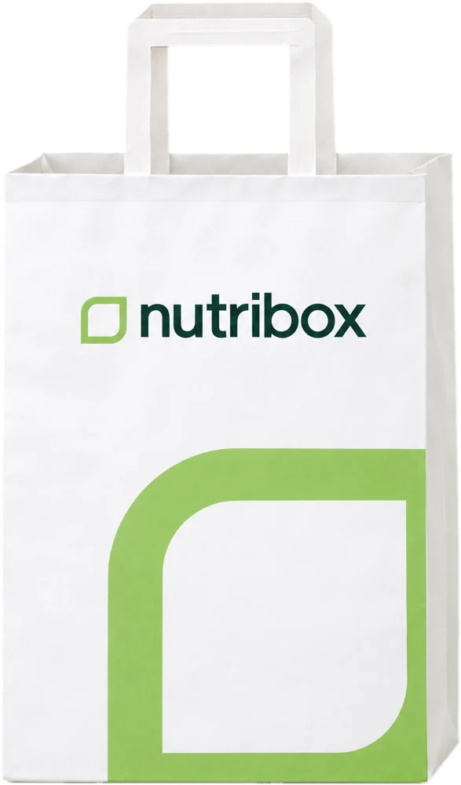
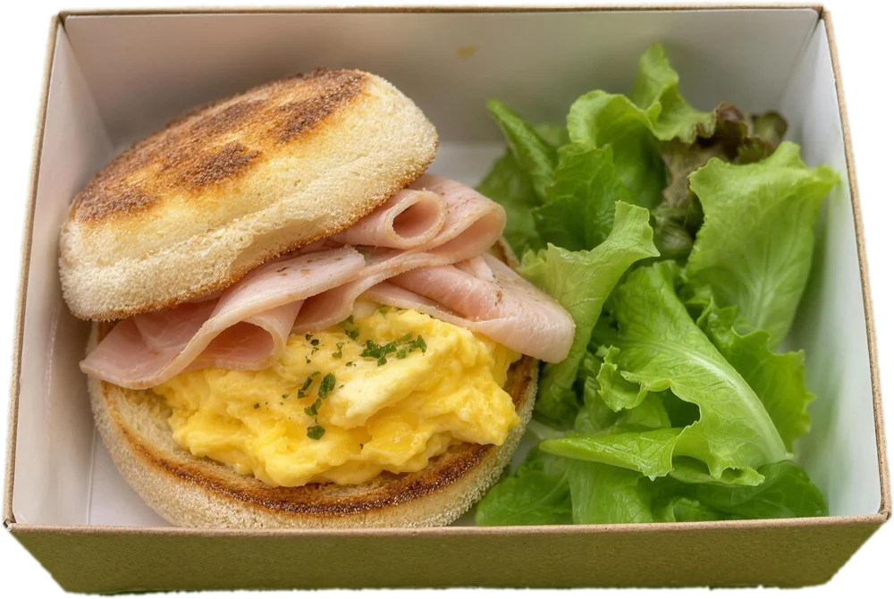
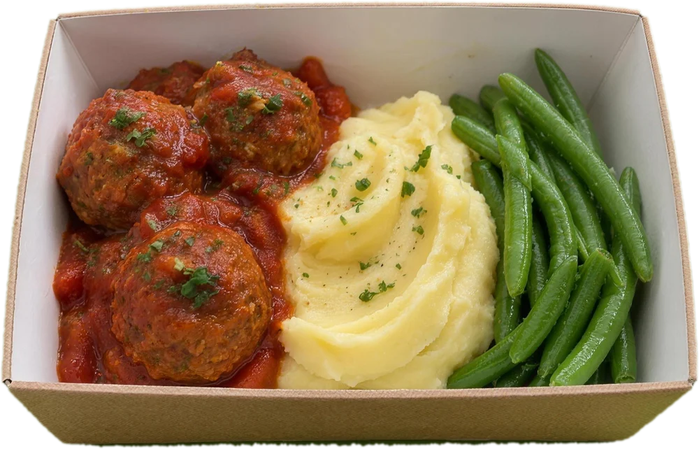
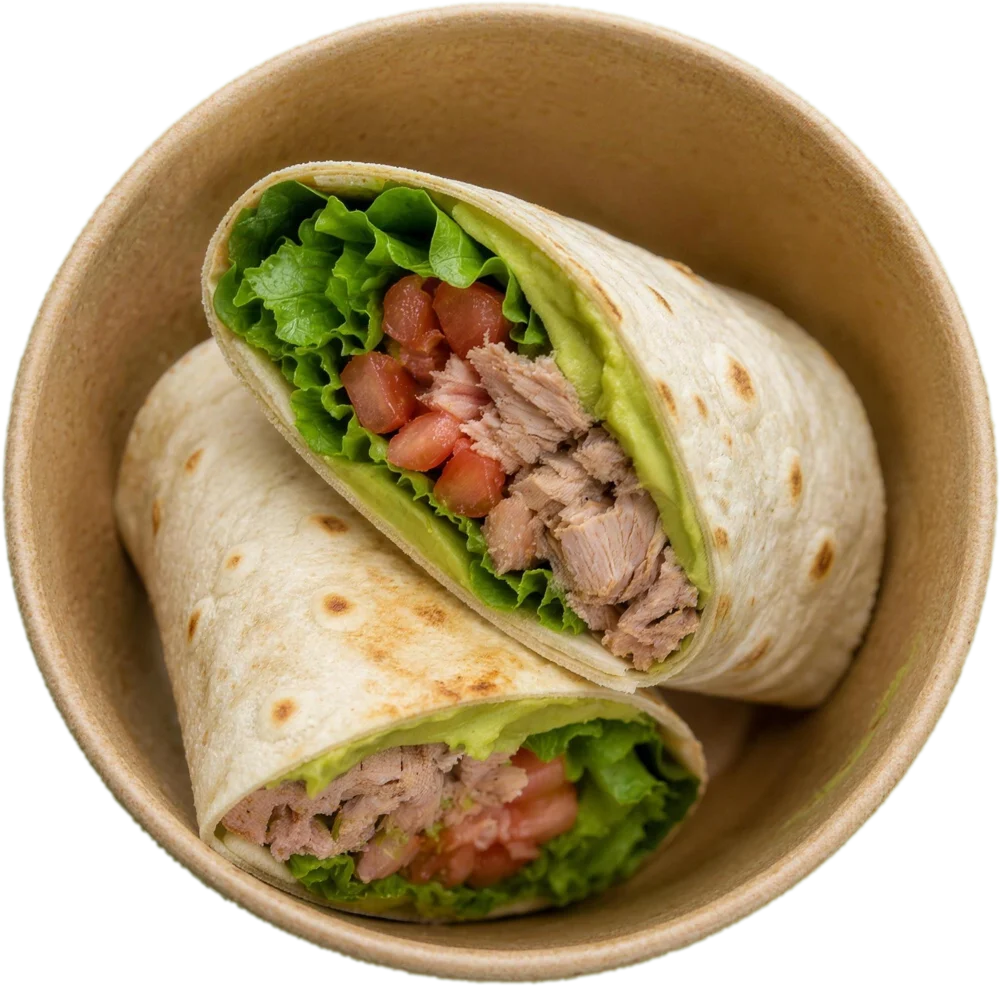
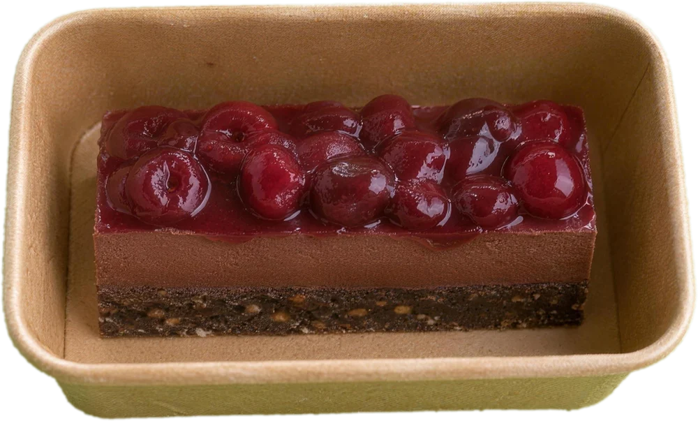
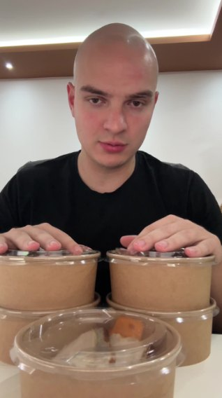

<!doctype html>
<html lang="sr">
<head>
<meta charset="utf-8">
<meta name="viewport" content="width=device-width, initial-scale=1">
<title>Nutribox: jelovnik (preview)</title>
<meta name="robots" content="noindex">
<link rel="preconnect" href="https://fonts.googleapis.com">
<link rel="preconnect" href="https://fonts.gstatic.com" crossorigin>
</head>
<body style="margin:0">
<div id="app"></div>
<script type="text/plain" id="dc-src-Jelovnik"><!doctype html>
<html lang="sr">
<head>
<meta charset="utf-8">
<title>Nutribox jelovnik</title>
<script src="./support.js"><\/script>
</head>
<body>
<x-dc>
<helmet>
<link rel="stylesheet" href="https://fonts.googleapis.com/css2?family=Outfit:wght@300;400;500;600;700;800&amp;display=swap">
<style>
body{margin:0}
.jl-pick{transition:box-shadow .15s ease, border-color .15s ease}
.jl-pick:hover{box-shadow:0 0 0 3px #dfeccf}
.jl-pick:focus-visible,.jl-back:focus-visible{outline:3px solid #5e8f3d;outline-offset:2px}
.jl-back:hover{color:#123c32 !important}
.jl-row{display:grid;grid-template-columns:132px minmax(0,1fr);align-items:center;gap:12px 20px}
.jl-opts{display:flex;flex-wrap:wrap;gap:8px}
.jl-grid{display:grid;grid-template-columns:repeat(4,minmax(0,1fr));gap:24px}
.jl-card{display:flex;flex-direction:column;gap:14px;min-width:0}
.jl-img{position:relative;width:100%;aspect-ratio:1/1;border-radius:20px;overflow:hidden;background-color:#e4efdc;background-repeat:no-repeat}
.jl-wk{background-size:400% 700%}
.jl-po{background-size:600% 300%;background-image:url(../assets/747cf1ecba145ba77986fb27a97f1197.webp)}
.jl-s0{background-image:url(../assets/496ee21909031c91ff9ec95b139e349e.webp)}
.jl-s1{background-image:url(../assets/26db6cff449df6efd4051302048b9a8f.webp)}
.jl-s2{background-image:url(../assets/814e09c22e2ab58e81bf3751cba376f7.webp)}
.jl-s3{background-image:url(../assets/30a8f978af36f10bf82475e1f214b8e3.webp)}
.jl-s4{background-image:url(../assets/68b8178e0a7ec9aff2d5d35771c78bf7.webp)}
.jl-s5{background-image:url(../assets/e2a59e451d156055e7b0841e072c35d9.webp)}
.jl-s6{background-image:url(../assets/64c0c49da0eddfbcd890e5b8303de45a.webp)}
.jl-s7{background-image:url(../assets/3c57ed546daf1ca0d8b9489b3db052a5.webp)}
.jl-s8{background-image:url(../assets/708972e727b3224710988f6982a91e77.webp)}
.jl-s9{background-image:url(../assets/9fbae622b08c316a8bb6a8ffb1c55a40.webp)}
.jl-s10{background-image:url(../assets/7046ec6d0d32da48fe6822c099017b13.webp)}
.jl-s11{background-image:url(../assets/f46b0d11035b17955223efc22972b9ed.webp)}
.jl-s12{background-image:url(../assets/3ec7a2381cbd7ec2ee19eed37048bfd7.webp)}
.jl-s13{background-image:url(../assets/913142711eccd4e64ae1535536a08d08.webp)}
.jl-s14{background-image:url(../assets/aadee0538682044aabcf8913ef53f249.webp)}
@media (max-width:960px){.jl-grid{grid-template-columns:repeat(2,minmax(0,1fr))}}
@media (max-width:640px){
.jl-row{grid-template-columns:1fr;gap:10px}
.jl-h1b{display:block}
.jl-grid{grid-template-columns:1fr;gap:14px}
.jl-card{flex-direction:row;align-items:center;gap:14px}
.jl-img{width:112px;flex:none;border-radius:16px}
.jl-name{font-size:16px !important}
.jl-panel{padding:16px !important;border-radius:18px !important}
}
</style>
</helmet>
<div style="width: 100%; background: #ffffff; color: #123c32; font-family: 'Outfit', ui-sans-serif, system-ui, -apple-system, 'Segoe UI', Roboto, sans-serif; -webkit-font-smoothing: antialiased">
<dc-import name="Main" part-from="0" part-to="0" hint-size="100%,127px"></dc-import>

<!-- Uvod i izbor -->
<section style="background: #f0f6ec; padding: clamp(28px, 4vw, 48px) 20px clamp(32px, 4vw, 48px)">
<div style="max-width: 1200px; margin: 0 auto; display: flex; flex-direction: column; gap: 22px">
<a class="jl-back" href="index.html" style="align-self: flex-start; display: inline-flex; align-items: center; gap: 8px; min-height: 44px; font-size: 15px; font-weight: 600; color: #4d7a31; text-decoration: none"><svg width="18" height="18" viewBox="0 0 24 24" fill="none" stroke="currentColor" stroke-width="2.2" stroke-linecap="round" stroke-linejoin="round" aria-hidden="true"><path d="M19 12H5"></path><path d="M11 6l-6 6 6 6"></path></svg>Nazad na početnu</a>
<div style="display: flex; flex-direction: column; gap: 14px; margin-top: -8px">
<h1 style="margin: 0; font-size: clamp(28px, 4.4vw, 52px); line-height: 1.1; letter-spacing: -0.03em; font-weight: 700; color: #123c32">{{ titleA }} <span class="jl-h1b" style="color: #5e8f3d">{{ titleB }}</span></h1>
<p style="margin: 0; max-width: 760px; font-size: 18px; line-height: 1.55; color: #3d4a41; text-wrap: pretty">Izaberi meni i veličinu paketa. Svakog dana stižu četiri obroka, na tvoja&nbsp;vrata.</p>
</div>
<div class="jl-panel" style="display: flex; flex-direction: column; gap: 18px; box-sizing: border-box; padding: 24px 28px; border-radius: 22px; background: #ffffff; border: 1px solid #dfeccf">
<div class="jl-row">
<span style="font-size: 14px; font-weight: 700; letter-spacing: 0.06em; color: #3d4a41">MENI</span>
<div class="jl-opts" role="group" aria-label="Meni">
<sc-for list="{{ menuTabs }}" as="f" hint-placeholder-count="6">
<button type="button" class="jl-pick" aria-pressed="{{ f.on }}" onClick="{{ f.pick }}" style="min-height: 44px; padding: 9px 18px; border-radius: 12px; font-family: inherit; font-size: 15px; font-weight: 600; cursor: pointer; white-space: nowrap; {{ f.style }}">{{ f.label }}</button>
</sc-for>
</div>
</div>
<div style="height: 1px; background: #e3e8e2"></div>
<div class="jl-row">
<span style="font-size: 14px; font-weight: 700; letter-spacing: 0.06em; color: #3d4a41">PAKET</span>
<div style="display: flex; flex-direction: column; gap: 10px; min-width: 0">
<div class="jl-opts" role="group" aria-label="Veličina paketa">
<sc-for list="{{ sizeOpts }}" as="o" hint-placeholder-count="5">
<button type="button" class="jl-pick" aria-pressed="{{ o.on }}" onClick="{{ o.pick }}" style="min-height: 44px; padding: 9px 16px; border-radius: 12px; font-family: inherit; font-size: 15px; font-weight: 600; cursor: pointer; white-space: nowrap; {{ o.style }}">{{ o.label }}</button>
</sc-for>
</div>
<span style="font-size: 14px; line-height: 1.45; color: #3d4a41; text-wrap: pretty">{{ sizeNote }}</span>
</div>
</div>
<sc-if value="{{ notPosno }}" hint-placeholder-val="{{ true }}">
<div style="height: 1px; background: #e3e8e2"></div>
<div class="jl-row">
<span style="font-size: 14px; font-weight: 700; letter-spacing: 0.06em; color: #3d4a41">NEDELJA</span>
<div class="jl-opts" role="group" aria-label="Nedelja">
<sc-for list="{{ weekTabs }}" as="w" hint-placeholder-count="3">
<button type="button" class="jl-pick" aria-pressed="{{ w.on }}" onClick="{{ w.pick }}" style="min-height: 44px; padding: 9px 16px; border-radius: 12px; font-family: inherit; font-size: 15px; font-weight: 600; cursor: pointer; white-space: nowrap; {{ w.style }}">{{ w.label }}</button>
</sc-for>
</div>
</div>
</sc-if>
</div>
</div>
</section>

<!-- Nedelja po danima -->
<sc-if value="{{ notPosno }}" hint-placeholder-val="{{ true }}">
<section style="background: #ffffff; padding: clamp(36px, 5vw, 56px) 20px 8px">
<div style="max-width: 1200px; margin: 0 auto; display: flex; flex-direction: column; gap: clamp(40px, 5vw, 56px)">
<sc-for list="{{ days }}" as="d" hint-placeholder-count="7">
<div style="display: flex; flex-direction: column; gap: 18px">
<div style="display: flex; flex-wrap: wrap; justify-content: space-between; align-items: baseline; gap: 4px 20px; padding-bottom: 14px; border-bottom: 1px solid #e3e8e2">
<div style="display: flex; align-items: center; gap: 10px">
<h2 style="margin: 0; font-size: clamp(20px, 2vw, 24px); line-height: 1.2; letter-spacing: -0.015em; font-weight: 700; color: #123c32">{{ d.title }}</h2>
<sc-if value="{{ d.today }}" hint-placeholder-val="{{ false }}"><span style="padding: 3px 9px; border-radius: 99px; background: #accb7d; font-size: 12px; font-weight: 700; letter-spacing: 0.06em; color: #123c32">DANAS</span></sc-if>
</div>
<span style="font-size: 15px; font-weight: 600; color: #4d7a31">{{ d.total }}</span>
</div>
<div class="jl-grid">
<sc-for list="{{ d.meals }}" as="c" hint-placeholder-count="4">
<article class="jl-card">
<div class="jl-img {{ c.cls }}" role="img" aria-label="{{ c.alt }}" style="background-position: {{ c.pos }}">
<sc-if value="{{ c.posno }}" hint-placeholder-val="{{ false }}"><span style="position: absolute; left: 10px; bottom: 10px; padding: 4px 9px; border-radius: 99px; background: #123c32; font-size: 11px; font-weight: 700; letter-spacing: 0.08em; color: #accb7d">POSNO</span></sc-if>
</div>
<div style="display: flex; flex-direction: column; gap: 6px; min-width: 0">
<span style="font-size: 12px; font-weight: 700; letter-spacing: 0.08em; color: #4d7a31">{{ c.tag }}</span>
<h3 class="jl-name" style="margin: 0; font-size: 17px; line-height: 1.3; font-weight: 700; color: #123c32; text-wrap: pretty">{{ c.name }}</h3>
<sc-if value="{{ c.sejk }}" hint-placeholder-val="{{ false }}"><span style="margin-top: -2px; font-size: 14px; font-weight: 600; color: #5e8f3d">{{ c.sejkTxt }}</span></sc-if>
<span style="font-size: 15px; font-weight: 700; color: #123c32">{{ c.kcal }}</span>
<span style="font-size: 13px; line-height: 1.4; font-weight: 500; color: #4d7a31">{{ c.macros }}</span>
</div>
</article>
</sc-for>
</div>
</div>
</sc-for>
</div>
</section>
</sc-if>

<!-- Posna jela -->
<sc-if value="{{ isPosno }}" hint-placeholder-val="{{ false }}">
<section style="background: #ffffff; padding: clamp(36px, 5vw, 56px) 20px 8px">
<div style="max-width: 1200px; margin: 0 auto; display: flex; flex-direction: column; gap: 18px">
<div style="padding-bottom: 14px; border-bottom: 1px solid #e3e8e2">
<h2 style="margin: 0; font-size: clamp(20px, 2vw, 24px); line-height: 1.2; letter-spacing: -0.015em; font-weight: 700; color: #123c32">{{ posnoTitle }}</h2>
</div>
<div class="jl-grid">
<sc-for list="{{ posnoCards }}" as="c" hint-placeholder-count="8">
<article class="jl-card">
<div class="jl-img {{ c.cls }}" role="img" aria-label="{{ c.alt }}" style="background-position: {{ c.pos }}">
<sc-if value="{{ c.posno }}" hint-placeholder-val="{{ false }}"><span style="position: absolute; left: 10px; bottom: 10px; padding: 4px 9px; border-radius: 99px; background: #123c32; font-size: 11px; font-weight: 700; letter-spacing: 0.08em; color: #accb7d">POSNO</span></sc-if>
</div>
<div style="display: flex; flex-direction: column; gap: 6px; min-width: 0">
<span style="font-size: 12px; font-weight: 700; letter-spacing: 0.08em; color: #4d7a31">{{ c.tag }}</span>
<h3 class="jl-name" style="margin: 0; font-size: 17px; line-height: 1.3; font-weight: 700; color: #123c32; text-wrap: pretty">{{ c.name }}</h3>
<sc-if value="{{ c.sejk }}" hint-placeholder-val="{{ false }}"><span style="margin-top: -2px; font-size: 14px; font-weight: 600; color: #5e8f3d">{{ c.sejkTxt }}</span></sc-if>
<span style="font-size: 15px; font-weight: 700; color: #123c32">{{ c.kcal }}</span>
<span style="font-size: 13px; line-height: 1.4; font-weight: 500; color: #4d7a31">{{ c.macros }}</span>
</div>
</article>
</sc-for>
</div>
</div>
</section>
</sc-if>

<dc-import name="Main" part-from="15" part-to="16" hint-size="100%,1020px"></dc-import>
</div>
</x-dc>
<script type="text/x-dc" data-dc-script data-props='{"$preview":{"width":1440,"height":5430}}'>
class Component extends DCLogic {
  jelovnik() {
    // Nutribox jelovnik 9.11. do 29.11.2026 (druga isporuka): m[meni][dan][obrok] = [jelo, kcal/P/UH/M za XS, S, M, L, XL; Vegan do L]
    return {
      days: [["Pon","9.11.","Ponedeljak, 9. novembar"],["Uto","10.11.","Utorak, 10. novembar"],["Sre","11.11.","Sreda, 11. novembar"],["Čet","12.11.","Četvrtak, 12. novembar"],["Pet","13.11.","Petak, 13. novembar"],["Sub","14.11.","Subota, 14. novembar"],["Ned","15.11.","Nedelja, 15. novembar"],["Pon","16.11.","Ponedeljak, 16. novembar"],["Uto","17.11.","Utorak, 17. novembar"],["Sre","18.11.","Sreda, 18. novembar"],["Čet","19.11.","Četvrtak, 19. novembar"],["Pet","20.11.","Petak, 20. novembar"],["Sub","21.11.","Subota, 21. novembar"],["Ned","22.11.","Nedelja, 22. novembar"],["Pon","23.11.","Ponedeljak, 23. novembar"],["Uto","24.11.","Utorak, 24. novembar"],["Sre","25.11.","Sreda, 25. novembar"],["Čet","26.11.","Četvrtak, 26. novembar"],["Pet","27.11.","Petak, 27. novembar"],["Sub","28.11.","Subota, 28. novembar"],["Ned","29.11.","Nedelja, 29. novembar"]],
      m: [
        [
          [["Ovsena pita sa šargarepom i blitvom, mus od sira i ćureća šunka",[302,26,21,13,377,29,30,16,500,37,42,20,643,44,57,27,709,55,59,28]],["Posni kolač od bundeve sa kremom od urmi",[245,3,42,7,361,5,63,10,361,5,63,10,361,5,63,10,687,55,81,16]],["Svinjski file u sosu od jabuke i timijana",[359,41,26,10,415,42,36,11,579,48,64,14,714,59,81,17,728,67,74,18]],["Ćuretina u teriyaki sosu sa jasmin pirinčem",[386,47,30,9,434,48,41,9,576,54,67,10,825,69,107,14,808,77,92,14]]],
          [["Kajgana sa pilećom šunkom i chia hlebom",[351,31,21,16,397,33,26,18,545,41,40,25,822,61,59,38,773,65,50,34]],["Banana bread sa kakao kremom",[223,4,39,5,328,6,58,8,328,6,58,8,328,6,58,8,654,56,76,14]],["Juneći but sa sosom od karamelizovanog povrća",[425,44,28,15,462,44,34,16,553,44,52,19,700,56,65,24,774,70,63,27]],["Wok sa piletinom i pirinčanim nudlama",[294,37,25,5,403,46,40,6,573,48,80,7,681,50,104,7,800,72,106,10]]],
          [["Ovsena kaša sa bananom, kakaom i grčkim jogurtom",[332,24,40,9,442,28,57,12,543,31,74,14,690,39,93,18,830,57,101,22]],["Chia puding sa vanilom i šumskim voćem",[216,5,27,10,318,8,40,14,318,8,40,14,318,8,40,14,644,58,58,20]],["Brancin na pireu od šargarepe sa kinoom",[352,39,19,13,406,40,29,14,529,41,53,17,781,56,84,24,823,64,84,26]],["Tortilja sa tunom i caciki dipom",[393,46,33,9,429,53,34,9,612,58,64,14,791,62,95,18,688,73,65,15]]],
          [["Doručak burito sa salatom od jaja i ćurećom šunkom",[328,27,33,10,330,26,33,10,537,35,64,16,813,51,96,25,868,63,97,25]],["Mafin od borovnice sa vanila kremom",[237,4,35,9,349,6,52,13,349,6,52,13,349,6,52,13,675,56,70,19]],["Pileći file u sosu od pečene paprike",[359,43,23,11,464,55,30,14,536,53,44,17,598,57,50,19,649,71,47,20]],["Juneće ćufte sa bulgurom i tahini dipom",[368,40,21,14,454,43,36,15,567,45,60,16,752,59,79,22,805,67,81,24]]],
          [["Sendvič na kiselom testu sa musom od lososa i kuvanim jajetom",[397,33,29,17,461,35,42,17,571,38,67,17,811,54,96,23,991,78,84,38]],["Kolač od jabuke i cimeta sa vanila kremom",[222,3,37,7,326,4,55,10,326,4,55,10,326,4,55,10,652,54,73,16]],["Orada sa sosom od paradajza i bosiljka",[388,38,27,14,436,41,32,16,587,47,54,21,671,51,65,23,667,57,56,24]],["Pirinčane nudle sa tunom i susamom",[280,40,20,5,380,50,32,6,504,50,62,6,704,60,98,8,691,68,86,8]]],
          [["Fritata sa batatom i spanaćem, uz mus od sira",[397,27,34,17,470,32,42,20,599,41,53,25,898,55,99,31,930,58,100,33]],["Kakao puding sa višnjom",[183,5,33,3,269,8,48,5,269,8,48,5,269,8,48,5,595,58,66,11]],["Ćureći medaljoni u kremastom sosu od pečuraka",[356,38,28,10,420,44,35,12,533,45,54,15,608,50,63,17,716,71,64,20]],["Činija sa svinjetinom na meksički način",[363,45,22,10,433,47,37,11,591,45,78,11,792,58,108,14,751,68,85,16]]],
          [["Tramezzino sa musom od jaja i pilećom šunkom",[246,19,24,8,331,24,39,9,429,30,55,10,723,47,94,18,756,58,85,20]],["Kolač od maka i limuna sa kremom od limuna",[238,4,34,10,350,6,50,14,350,6,50,14,350,6,50,14,676,56,68,20]],["Piletina sa limunom i ruzmarinom, pirinač sa spanaćem",[331,43,22,8,430,50,35,10,553,50,62,12,757,51,105,15,761,71,83,16]],["Tortilja sa junetinom i pečenim povrćem",[485,49,35,17,493,50,35,17,664,52,67,21,749,65,68,24,808,74,68,27]]],
          [["Engleski mafin sa kajganom i pilećom šunkom",[381,34,35,12,428,34,48,11,594,45,71,14,796,61,94,20,836,70,92,21]],["Raw kolač sa kakaom i višnjom",[233,3,27,12,342,5,40,18,342,5,40,18,342,5,40,18,668,55,58,24]],["Ćureći file sa sosom od pečenog paradajza",[330,38,25,9,386,46,28,10,463,44,42,13,535,48,50,16,642,69,52,18]],["Svinjetina u slatko-kiselom sosu sa jasmin pirinčem",[349,42,28,8,438,46,44,9,600,47,82,9,814,62,115,12,840,71,110,13]]],
          [["Kukuruzna pita sa tikvicom, mus od sira i ćureća šunka",[305,26,22,13,388,29,32,16,441,32,39,18,654,44,61,26,721,55,62,28]],["Ovsena kaša sa jabukom i cimetom",[198,5,34,5,291,7,50,7,291,7,50,7,291,7,50,7,617,57,68,13]],["Juneći ramstek sa demiglas sosom, pire od batata i kinoa",[386,41,27,13,466,44,41,14,646,47,75,17,832,55,106,21,911,74,96,25]],["Tortilja sa piletinom i cezar dresingom",[411,42,34,12,452,50,34,13,622,52,64,17,816,59,95,22,749,74,66,21]]],
          [["Bajgla sa musom od lososa i krastavcem",[340,25,36,11,384,26,46,10,484,30,66,11,702,44,95,16,788,56,89,23]],["Chia puding sa kakaom i bananom",[222,5,29,10,326,8,42,14,326,8,42,14,326,8,42,14,652,58,60,20]],["Losos sa sosom od mirođije, pire od celera i pirinač sa limunom",[430,36,28,19,495,38,39,21,708,46,74,25,884,54,99,30,863,60,82,33]],["Činija sa tunom i kus kusom",[310,48,19,5,385,54,30,5,480,54,53,6,673,58,96,6,686,75,79,8]]],
          [["Doručak burito sa kajganom, pilećom šunkom i začinjenim majonezom",[389,28,32,17,384,27,32,16,561,32,62,21,882,51,93,34,922,60,93,34]],["Kolač od šargarepe sa vanila kremom",[228,3,35,8,336,5,52,12,336,5,52,12,336,5,52,12,662,55,70,18]],["Svinjski file sa kremastim sosom od senfa",[389,40,27,13,458,43,36,16,543,44,51,18,686,57,63,23,713,68,56,24]],["Ćuretina sa bulgurom i čimičuri salsom",[301,44,16,7,408,54,30,8,548,57,56,11,641,57,74,13,699,73,71,13]]],
          [["Fritata sa krompirom i paprikom, uz mus od sira",[310,21,26,14,430,29,38,18,551,38,49,22,860,52,98,29,974,71,100,32]],["Čokoladni puding sa malinom",[184,5,31,4,270,8,46,6,270,8,46,6,270,8,46,6,596,58,64,12]],["Brancin sa sosom od paradajza i maslina",[394,40,25,15,452,40,37,16,559,38,59,19,641,46,65,22,726,58,66,26]],["Tortilja sa tunom i kremom od avokada",[412,48,34,9,447,54,35,10,612,56,65,14,800,60,96,20,700,72,66,16]]],
          [["Ovsena kaša sa borovnicama i grčkim jogurtom",[374,25,46,10,414,26,53,11,573,32,78,15,690,39,93,18,771,50,98,20]],["Mafin od jabuke i cimeta sa vanila kremom",[231,4,35,8,340,6,52,12,340,6,52,12,340,6,52,12,666,56,70,18]],["Pileći file sa velute sosom od estragona, pire od šargarepe i kinoa",[313,39,20,9,397,47,28,11,537,50,52,14,753,61,84,19,809,76,79,21]],["Junetina sa povrćem i pirinčanim nudlama",[380,48,21,12,452,52,33,13,546,51,58,12,788,61,104,14,739,68,80,16]]],
          [["Burger lepinja sa kajganom, ćurećom šunkom i musom od sira",[303,25,30,9,414,29,55,9,557,36,78,11,772,54,95,20,873,69,96,24]],["Raw kolač sa kokosom i limetom",[237,3,26,14,348,4,38,20,348,4,38,20,348,4,38,20,674,54,56,26]],["Svinjski file sa sosom od šljiva",[346,39,21,12,382,41,25,13,465,42,38,16,613,56,50,21,688,67,52,24]],["Tortilja sa ćuretinom i pečenom paprikom",[409,46,35,9,454,56,35,10,623,56,66,15,798,58,98,20,722,74,68,17]]],
          [["Ovsena pita sa spanaćem, mus od sira i pileća šunka",[350,28,26,15,385,30,32,15,531,36,49,21,742,51,64,31,764,58,64,30]],["Posni brownie sa kremom od maline",[229,3,34,9,337,5,50,13,337,5,50,13,337,5,50,13,663,55,68,19]],["Juneći paprikaš sa pireom od krompira",[400,41,27,14,438,43,31,16,525,44,47,18,690,59,60,24,751,68,61,26]],["Činija sa piletinom na tajlandski način",[313,42,24,6,442,53,42,7,603,53,80,8,739,59,106,9,811,73,106,10]]],
          [["Kajgana sa ćurećom šunkom i hlebom od kiselog testa",[347,33,28,11,429,35,46,12,526,41,61,13,752,55,94,17,804,68,88,20]],["Chia puding sa vanilom i malinama",[216,5,27,10,318,8,40,14,318,8,40,14,318,8,40,14,644,58,58,20]],["Ćureći file sa velute sosom od kopra, pire od batata i bulgur",[304,36,26,6,389,41,40,7,551,45,70,10,712,51,98,13,785,71,93,14]],["Tortilja sa svinjetinom i salsom od avokada",[426,42,34,13,457,47,35,14,609,46,66,18,814,54,97,24,757,70,67,23]]],
          [["Ovsena kaša sa kruškom, cimetom i grčkim jogurtom",[399,27,49,10,433,28,55,11,592,33,80,15,690,39,93,18,876,63,104,23]],["Raw kuglice od urmi i kakaa sa kokosom",[225,3,31,10,331,4,45,15,331,4,45,15,331,4,45,15,657,54,63,21]],["Orada sa sosom od limuna, pire od celera i pirinač sa začinskim biljem",[365,39,24,13,435,43,35,14,605,46,67,17,812,53,103,21,760,58,83,22]],["Tuna sa kus kusom i pečenim povrćem",[310,47,18,6,385,55,27,6,476,54,49,7,748,68,100,9,696,76,76,10]]],
          [["Bajgla sa kajganom, pilećom šunkom i musom od sira",[332,28,28,12,379,31,38,12,498,38,54,15,710,51,82,20,769,65,74,24]],["Kolač od šljiva sa vanila kremom",[224,3,37,7,330,5,55,10,330,5,55,10,330,5,55,10,656,55,73,16]],["Pileći file u kremastom sosu od pečuraka, pire od batata i kinoa",[354,39,29,9,428,44,38,11,636,49,76,15,799,56,102,18,843,76,89,20]],["Wok sa junetinom i pirinčanim nudlama",[382,47,24,11,463,52,35,13,533,48,59,12,750,56,102,13,728,68,77,16]]],
          [["Engleski mafin sa musom od lososa i kuvanim jajetom",[370,28,33,14,446,31,48,14,589,36,78,15,772,50,95,21,890,62,96,29]],["Posni čokoladni kolač sa kremom od višnje",[228,3,35,8,336,5,52,12,336,5,52,12,336,5,52,12,662,55,70,18]],["Losos sa sosom od pečene paprike",[384,31,23,19,433,35,27,21,556,37,47,24,770,52,65,33,756,58,52,35]],["Činija sa tunom i bulgurom",[319,49,17,6,384,54,26,7,522,59,50,10,653,62,75,12,692,75,71,12]]],
          [["Fritata sa krompirom i spanaćem, uz mus od sira i ćureću šunku",[436,34,34,18,489,37,40,20,622,46,54,25,699,52,59,29,797,65,61,33]],["Banana bread sa kakao kremom",[223,4,39,5,328,6,58,8,328,6,58,8,328,6,58,8,654,56,76,14]],["Svinjski file sa demiglas sosom, pire od batata i heljda",[365,42,26,10,438,47,37,11,577,44,72,13,830,59,110,17,814,69,92,19]],["Ćuretina sa basmati pirinčem i pečenim povrćem",[277,37,20,5,343,42,31,6,476,45,59,7,722,53,108,8,728,72,88,10]]],
          [["Tramezzino sa salatom od jaja i ćurećom šunkom",[211,20,20,6,304,23,38,7,458,32,63,9,663,44,94,12,776,62,94,17]],["Mafin od banane i borovnice sa vanila kremom",[231,4,37,7,339,6,54,11,339,6,54,11,339,6,54,11,665,56,72,17]],["Juneće ćufte u sosu od paradajza sa pireom od krompira",[425,41,27,17,475,43,35,18,552,42,50,20,743,54,72,27,797,62,72,29]],["Tortilja sa piletinom i pečenim povrćem",[440,49,35,12,487,57,35,13,653,58,67,17,834,62,98,22,755,76,68,20]]]
        ],
        [
          [["Ovsena pita sa šargarepom i blitvom, uz mus od sira",[153,9,11,8,198,12,16,10,244,14,21,12,402,22,36,19,350,20,29,17]],["Posni kolač od bundeve sa kremom od urmi",[571,53,61,13,849,80,90,19,686,55,81,16,686,55,81,16,1012,105,99,22]],["Losos sa limunom, pire od batata i bulgur",[350,31,19,17,319,23,26,13,553,38,53,21,728,47,76,26,866,77,50,40]],["Činija sa leblebijama u teriyaki sosu",[240,17,29,7,251,16,33,6,523,27,81,10,785,36,131,13,771,40,120,15]]],
          [["Kajgana sa musom od lososa i chia hlebom",[334,26,20,17,294,21,21,14,488,33,35,24,725,46,57,35,655,44,48,32]],["Banana bread sa kakao kremom",[549,54,57,11,817,81,85,17,654,56,76,14,654,56,76,14,980,106,94,20]],["Tuna na pireu od krompira sa boranijom",[248,28,20,6,287,30,25,8,419,33,46,11,540,37,65,15,767,93,58,18]],["Wok sa edamameom i pirinčanim nudlama",[179,11,22,5,216,13,29,6,441,18,76,7,658,26,117,10,606,30,94,12]]],
          [["Ovsena kaša sa bananom, kakaom i grčkim jogurtom",[164,12,19,4,200,14,24,5,321,20,41,8,617,35,83,16,468,32,57,12]],["Chia puding sa vanilom i šumskim voćem",[542,55,45,16,807,83,67,23,644,58,58,20,644,58,58,20,970,108,76,26]],["Orada na pireu od šargarepe sa kinoom",[220,22,15,8,231,23,15,9,453,31,53,13,564,35,70,16,831,80,67,27]],["Tortilja sa halumijem i caciki dipom",[376,23,34,16,373,23,34,16,560,28,65,21,746,34,96,26,691,41,67,29]]],
          [["Doručak burito sa musom od jaja i tunom",[331,25,32,11,277,21,31,8,510,32,62,15,721,41,92,21,757,48,93,21]],["Mafin od borovnice sa vanila kremom",[563,54,53,15,838,81,79,22,675,56,70,19,675,56,70,19,1001,106,88,25]],["Tuna u sosu od pečene paprike",[219,27,14,6,261,29,19,7,375,32,36,11,480,36,50,15,690,92,42,17]],["Kuglice od sočiva sa bulgurom i tahini dipom",[212,13,24,7,243,14,29,8,440,22,63,11,704,34,104,17,565,32,71,17]]],
          [["Sendvič na kiselom testu sa musom od lososa i kuvanim jajetom",[226,19,15,10,219,17,18,9,474,29,61,13,665,42,80,20,574,40,60,19]],["Kolač od jabuke i cimeta sa vanila kremom",[548,53,55,13,815,79,82,19,652,54,73,16,652,54,73,16,978,104,91,22]],["Losos sa sosom od paradajza i bosiljka",[318,28,15,16,310,25,19,15,440,36,26,21,600,44,45,27,805,76,32,41]],["Pirinčane nudle sa hrskavim leblebijama",[217,9,32,6,261,11,40,6,433,15,75,8,689,22,126,11,652,25,109,13]]],
          [["Fritata sa batatom i spanaćem, uz mus od sira",[258,18,20,12,211,15,16,10,406,28,35,17,802,48,92,27,757,46,87,25]],["Kakao puding sa višnjom",[509,55,51,9,758,83,75,14,595,58,66,11,595,58,66,11,921,108,84,17]],["Brancin na pireu od krompira",[320,31,20,13,357,26,32,14,454,32,43,17,552,34,58,20,702,75,38,28]],["Činija sa kuglicama od belog pasulja na meksički način",[217,10,29,7,276,12,39,8,538,21,90,11,659,25,111,13,635,27,99,14]]],
          [["Tramezzino sa salatom od jaja",[120,8,14,4,145,10,17,4,257,15,37,6,546,32,77,12,389,23,53,9]],["Kolač od maka i limuna sa kremom od limuna",[564,54,52,16,839,81,77,23,676,56,68,20,676,56,68,20,1002,106,86,26]],["Orada sa limunom i ruzmarinom, pirinač sa spanaćem",[247,28,13,9,234,22,18,8,446,40,41,14,652,47,77,17,674,72,46,22]],["Tortilja sa falafelom i pečenim povrćem",[431,17,58,14,444,18,60,15,641,24,92,20,736,29,102,24,955,39,127,32]]],
          [["Engleski mafin sa kajganom i musom od lososa",[246,21,20,9,200,17,17,7,534,35,68,13,684,45,87,17,517,35,64,14]],["Raw kolač sa kakaom i višnjom",[559,53,45,18,831,80,67,27,668,55,58,24,668,55,58,24,994,105,76,30]],["Losos sa sosom od pečenog paradajza",[267,23,13,14,299,25,16,15,331,25,21,16,481,35,33,23,782,75,27,41]],["Leblebije u slatko-kiselom sosu sa jasmin pirinčem",[244,10,39,5,281,12,46,6,472,16,87,7,768,25,145,10,717,28,123,13]]],
          [["Kukuruzna pita sa tikvicom, uz mus od sira",[153,9,11,8,191,11,15,9,244,14,21,12,440,23,43,19,380,21,33,18]],["Ovsena kaša sa jabukom i cimetom",[524,55,52,11,780,82,77,16,617,57,68,13,617,57,68,13,943,107,86,19]],["Tuna na pireu od batata sa kinoom",[229,27,20,5,247,28,21,5,552,39,74,11,753,50,106,14,936,98,97,17]],["Tortilja sa halumijem i cezar dresingom",[397,23,35,18,384,23,34,17,577,28,65,23,771,34,96,28,719,41,68,32]]],
          [["Bajgla sa musom od lososa i krastavcem",[254,23,16,11,195,15,20,6,384,26,46,10,599,42,70,17,572,42,61,18]],["Chia puding sa kakaom i bananom",[548,55,47,16,815,83,69,23,652,58,60,20,652,58,60,20,978,108,78,26]],["Orada sa sosom od mirođije, pire od celera i pirinač",[250,22,22,8,324,25,34,10,484,29,64,13,657,33,95,16,797,75,69,25]],["Činija sa kuglicama od sočiva i kus kusom",[255,15,32,7,264,15,35,7,476,26,68,11,692,36,103,15,666,36,97,15]]],
          [["Doručak burito sa kajganom, tunom i začinjenim majonezom",[346,26,31,13,344,25,31,14,569,40,61,18,819,54,91,27,835,55,91,28]],["Kolač od šargarepe sa vanila kremom",[554,53,53,14,825,80,79,21,662,55,70,18,662,55,70,18,988,105,88,24]],["Brancin na pireu od krompira sa šargarepom",[238,23,14,10,271,25,18,11,346,26,29,14,473,30,48,18,657,74,30,27]],["Pečeni karfiol i leblebije sa bulgurom i čimičuri salsom",[196,9,26,6,235,11,31,7,410,16,64,10,622,24,99,14,532,24,74,15]]],
          [["Fritata sa krompirom i paprikom, uz mus od sira",[134,9,11,6,160,11,14,7,295,20,27,12,636,37,79,19,544,31,67,17]],["Čokoladni puding sa malinom",[510,55,49,10,759,83,73,15,596,58,64,12,596,58,64,12,922,108,82,18]],["Orada sa sosom od paradajza i maslina",[263,25,18,10,284,24,23,11,512,32,58,17,574,35,65,19,801,76,58,29]],["Činija sa halumijem i kinoom",[387,23,35,17,389,23,35,17,562,28,65,21,757,33,97,27,695,40,67,30]]],
          [["Ovsena kaša sa borovnicama i grčkim jogurtom",[206,14,25,5,271,17,35,7,520,28,72,13,680,38,93,18,725,44,95,19]],["Mafin od jabuke i cimeta sa vanila kremom",[557,54,53,14,829,81,79,21,666,56,70,18,666,56,70,18,992,106,88,24]],["Tuna na pireu od šargarepe sa kinoom",[228,27,17,6,285,30,25,8,430,34,48,11,620,42,79,15,811,96,66,18]],["Edamame sa povrćem i pirinčanim nudlama",[322,24,32,11,229,14,30,6,390,23,52,10,633,32,96,13,481,28,65,12]]],
          [["Burger lepinja sa kajganom i musom od lososa",[164,14,14,6,184,15,16,7,451,26,67,9,614,35,92,12,628,38,88,14]],["Raw kolač sa kokosom i limetom",[563,53,44,20,837,79,65,29,674,54,56,26,674,54,56,26,1000,104,74,32]],["Orada na pireu od celera i krompira",[251,27,13,10,249,24,16,10,327,32,21,13,448,40,33,17,620,73,27,25]],["Tortilja sa kuglicama od belog pasulja i pečenom paprikom",[350,15,50,10,362,16,52,10,551,21,83,15,843,32,126,23,757,33,107,22]]],
          [["Ovsena pita sa spanaćem, uz mus od sira",[296,19,18,16,251,15,19,13,395,22,36,18,643,35,59,30,643,37,53,32]],["Posni brownie sa kremom od maline",[555,53,52,15,826,80,77,22,663,55,68,19,663,55,68,19,989,105,86,25]],["Tuna u sosu od paprike i paradajza sa pireom od krompira",[246,32,16,6,272,29,24,7,414,43,38,10,531,49,54,13,667,90,44,15]],["Činija sa leblebijama na tajlandski način",[209,9,32,5,261,10,42,6,520,18,92,9,762,25,141,11,710,26,122,13]]],
          [["Kajgana sa musom od lososa i hlebom od kiselog testa",[178,15,15,6,203,17,18,7,411,26,56,9,612,36,89,13,607,38,82,14]],["Chia puding sa vanilom i malinama",[542,55,45,16,807,83,67,23,644,58,58,20,644,58,58,20,970,108,76,26]],["Orada sa velute sosom od kopra, pire od batata i bulgur",[221,21,17,8,240,23,18,8,375,26,44,11,578,35,77,15,719,74,53,23]],["Tortilja sa halumijem i salsom od avokada",[376,23,34,17,378,23,35,17,562,28,65,21,757,33,97,27,695,40,67,30]]],
          [["Ovsena kaša sa kruškom, cimetom i grčkim jogurtom",[184,14,21,5,200,14,24,5,385,24,50,10,669,37,92,17,553,45,60,15]],["Raw kuglice od urmi i kakaa sa kokosom",[551,53,49,16,820,79,72,24,657,54,63,21,657,54,63,21,983,104,81,27]],["Brancin sa sosom od limuna, pire od celera i pirinač",[298,31,19,11,300,24,30,9,502,37,57,14,629,41,79,17,790,75,67,25]],["Kuglice od sočiva sa kus kusom i pečenim povrćem",[276,16,33,9,286,16,37,8,461,24,66,11,652,34,96,15,683,36,96,17]]],
          [["Bajgla sa kajganom i tunom",[199,24,13,5,181,22,15,4,333,33,33,7,448,44,46,10,469,49,51,8]],["Kolač od šljiva sa vanila kremom",[550,53,55,13,819,80,82,19,656,55,73,16,656,55,73,16,982,105,91,22]],["Losos u kremastom sosu od pečuraka, pire od batata i kinoa",[357,29,22,17,371,26,30,16,620,36,69,22,869,50,99,30,951,80,59,44]],["Wok sa edamameom i pirinčanim nudlama",[201,12,26,5,233,13,33,6,388,18,62,8,626,25,110,10,601,30,93,12]]],
          [["Engleski mafin sa musom od lososa i kuvanim jajetom",[247,21,15,12,222,17,20,9,466,28,60,12,665,41,84,19,690,45,82,20]],["Posni čokoladni kolač sa kremom od višnje",[554,53,53,14,825,80,79,21,662,55,70,18,662,55,70,18,988,105,88,24]],["Orada sa sosom od pečene paprike",[277,28,17,11,293,25,24,11,428,35,37,15,560,38,59,19,661,73,35,25]],["Činija sa pečenim leblebijama i bulgurom",[231,11,31,7,273,13,38,8,443,19,66,11,702,30,109,16,671,30,99,17]]],
          [["Fritata sa krompirom i spanaćem, uz mus od sira",[334,24,21,17,265,19,17,14,486,34,38,22,708,49,58,31,641,45,45,32]],["Banana bread sa kakao kremom",[549,54,57,11,817,81,85,17,654,56,76,14,654,56,76,14,980,106,94,20]],["Tuna sa demiglas sosom od povrća, pire od batata i heljda",[212,26,17,4,266,29,26,5,435,33,59,8,581,37,85,10,777,93,72,13]],["Kuglice od belog pasulja sa basmati pirinčem i pečenim povrćem",[220,11,28,7,261,13,35,8,434,20,65,10,650,26,107,13,612,29,90,15]]],
          [["Tramezzino sa salatom od jaja",[120,8,14,4,138,9,16,4,394,20,64,6,589,30,93,10,582,30,93,10]],["Mafin od banane i borovnice sa vanila kremom",[557,54,55,13,828,81,81,20,665,56,72,17,665,56,72,17,991,106,90,23]],["Orada u sosu od paradajza sa pireom od krompira",[245,25,15,9,261,24,19,10,345,31,26,13,551,41,54,19,683,74,39,26]],["Tortilja sa halumijem i pečenim povrćem",[395,24,36,17,395,24,36,17,592,30,68,23,781,35,98,27,732,42,70,31]]]
        ],
        [
          [["Ovsena pita sa šargarepom i blitvom, uz mus od sira",[326,19,25,17,266,15,23,13,372,21,32,18,552,31,48,26,508,27,48,23]],["Posni kolač od bundeve sa kremom od urmi",[408,28,52,10,686,55,81,16,686,55,81,16,849,80,90,19,849,80,90,19]],["Sojini medaljoni u sosu od jabuke i timijana",[274,16,36,7,321,17,45,8,477,24,70,11,568,25,88,13,744,42,104,18]],["Činija sa tofuom u teriyaki sosu",[294,20,33,9,324,20,39,10,460,25,64,11,624,31,96,13,878,49,119,23]]],
          [["Kajgana sa musom od sira i chia hlebom",[299,20,18,16,318,19,24,16,360,24,23,19,536,34,38,28,632,40,45,32]],["Banana bread sa kakao kremom",[386,29,48,8,654,56,76,14,654,56,76,14,817,81,85,17,817,81,85,17]],["Kuglice od sočiva u sosu od karamelizovanog povrća",[360,17,46,12,365,15,49,12,493,22,65,16,594,25,81,19,790,34,106,26]],["Wok sa edamameom i pirinčanim nudlama",[248,15,33,6,276,14,43,6,488,21,82,8,640,24,116,9,737,32,124,13]]],
          [["Ovsena kaša sa bananom, kakaom i grčkim jogurtom",[200,14,24,5,200,14,24,5,252,17,31,7,392,23,52,10,466,31,58,12]],["Chia puding sa vanilom i šumskim voćem",[379,30,36,13,644,58,58,20,644,58,58,20,807,83,67,23,807,83,67,23]],["Falafel na pireu od šargarepe sa kinoom",[337,14,43,12,356,15,46,13,530,21,76,16,632,24,91,19,977,40,134,31]],["Tortilja sa halumijem i caciki dipom",[376,23,34,16,373,23,34,16,556,28,65,21,746,34,96,26,687,40,66,29]]],
          [["Doručak burito sa musom od jaja i avokadom",[298,12,34,13,272,9,34,11,457,15,64,16,676,23,95,23,712,26,96,25]],["Mafin od borovnice sa vanila kremom",[400,29,44,12,675,56,70,19,675,56,70,19,838,81,79,22,838,81,79,22]],["Sojini medaljoni u sosu od pečene paprike",[313,24,31,10,304,18,34,10,415,31,42,14,456,30,50,15,642,41,71,21]],["Kuglice od sočiva sa bulgurom i tahini dipom",[286,16,35,9,342,18,47,9,438,21,65,10,620,28,95,14,778,38,112,19]]],
          [["Sendvič na kiselom testu sa musom od sira i krastavcem",[350,20,36,14,271,15,32,9,461,24,61,14,632,34,74,22,684,35,91,20]],["Kolač od jabuke i cimeta sa vanila kremom",[385,28,46,10,652,54,73,16,652,54,73,16,815,79,82,19,815,79,82,19]],["Pečeni tofu sa sosom od paradajza i bosiljka",[322,17,32,14,372,19,39,16,440,23,46,19,559,27,62,23,732,40,72,32]],["Pirinčane nudle sa sojinim ljuspicama",[245,17,31,6,290,17,42,6,457,26,70,8,590,25,105,8,749,41,118,12]]],
          [["Fritata sa batatom i spanaćem, uz mus od sira",[235,16,20,10,160,11,14,7,312,21,26,14,575,33,70,18,629,37,76,20]],["Kakao puding sa višnjom",[346,30,42,6,595,58,66,11,595,58,66,11,758,83,75,14,758,83,75,14]],["Sojini medaljoni u kremastom sosu od pečuraka",[353,19,42,12,412,21,51,14,487,23,62,16,555,25,72,18,720,43,84,24]],["Činija sa halumijem na meksički način",[346,21,33,15,410,22,46,15,590,26,86,16,707,30,104,19,839,41,111,26]]],
          [["Tramezzino sa salatom od jaja",[240,20,17,10,189,13,22,6,365,25,42,11,503,32,63,14,540,35,68,14]],["Kolač od maka i limuna sa kremom od limuna",[401,29,43,13,676,56,68,20,676,56,68,20,839,81,77,23,839,81,77,23]],["Kuglice od belog pasulja sa limunom i ruzmarinom",[237,10,33,7,286,11,42,8,338,13,52,9,569,20,90,14,665,27,102,17]],["Tortilja sa falafelom i pečenim povrćem",[435,18,58,14,456,19,61,15,641,24,92,20,696,27,97,22,962,40,128,32]]],
          [["Engleski mafin sa kajganom i musom od sira",[315,20,38,9,294,16,40,8,528,30,74,13,593,34,78,16,651,34,95,15]],["Raw kolač sa kakaom i višnjom",[396,28,36,15,668,55,58,24,668,55,58,24,831,80,67,27,831,80,67,27]],["Kuglice od leblebija sa sosom od pečenog paradajza",[322,14,39,12,288,13,35,11,320,14,39,12,484,19,61,18,649,29,80,24]],["Tofu u slatko-kiselom sosu sa jasmin pirinčem",[262,16,30,9,349,18,48,9,477,21,75,10,694,29,117,13,856,43,123,21]]],
          [["Kukuruzna pita sa tikvicom, uz mus od sira",[229,13,20,11,191,11,15,9,237,13,20,11,342,19,32,16,516,27,50,23]],["Ovsena kaša sa jabukom i cimetom",[361,30,43,8,617,57,68,13,617,57,68,13,780,82,77,16,780,82,77,16]],["Sojini medaljoni sa demiglas sosom, pire od batata i kinoa",[302,17,41,8,369,19,52,9,560,26,85,13,695,30,109,15,922,49,134,21]],["Tortilja sa halumijem i cezar dresingom",[397,23,35,18,399,23,35,18,570,28,65,22,763,33,96,27,705,40,67,31]]],
          [["Bajgla sa musom od sira i krastavcem",[297,16,35,10,294,15,39,9,391,19,55,10,560,29,70,18,651,33,86,19]],["Chia puding sa kakaom i bananom",[385,30,38,13,652,58,60,20,652,58,60,20,815,83,69,23,815,83,69,23]],["Pečeni tofu sa sosom od mirođije, pire od celera i pirinač",[294,17,29,12,361,18,44,13,514,25,65,17,652,28,90,20,794,41,97,27]],["Činija sa kuglicama od belog pasulja i kus kusom",[327,18,45,8,288,14,44,6,456,22,71,9,569,26,94,10,725,35,116,13]]],
          [["Doručak burito sa kajganom, avokadom i začinjenim majonezom",[346,13,33,18,325,10,33,17,523,18,63,22,744,24,94,30,781,28,94,32]],["Kolač od šargarepe sa vanila kremom",[391,28,44,11,662,55,70,18,662,55,70,18,825,80,79,21,825,80,79,21]],["Kuglice od sočiva sa kremastim sosom od senfa",[282,14,32,11,312,15,36,12,355,17,42,13,435,20,52,16,687,33,84,24]],["Pečeni karfiol i edamame sa bulgurom i čimičuri salsom",[269,18,28,9,291,15,38,9,453,24,62,12,580,28,85,14,673,36,92,18]]],
          [["Fritata sa krompirom i paprikom, uz mus od sira",[186,13,16,8,160,11,14,7,268,18,24,11,490,27,65,13,657,39,78,21]],["Čokoladni puding sa malinom",[347,30,40,7,596,58,64,12,596,58,64,12,759,83,73,15,759,83,73,15]],["Pečeni tofu sa sosom od paradajza i maslina",[355,18,38,15,418,20,47,17,527,22,65,20,554,23,68,21,732,40,72,32]],["Činija sa halumijem i kinoom",[387,23,35,17,383,23,35,17,562,28,65,21,757,33,97,27,700,40,68,30]]],
          [["Ovsena kaša sa borovnicama i grčkim jogurtom",[271,17,35,7,337,20,45,9,433,26,57,11,652,34,91,17,753,47,97,20]],["Mafin od jabuke i cimeta sa vanila kremom",[394,29,44,11,666,56,70,18,666,56,70,18,829,81,79,21,829,81,79,21]],["Kuglice od belog pasulja sa velute sosom od estragona",[350,17,46,11,353,15,48,11,523,22,73,16,659,27,93,20,808,34,116,23]],["Edamame sa povrćem i pirinčanim nudlama",[296,21,32,9,251,14,35,6,389,22,54,9,466,24,69,10,612,30,95,12]]],
          [["Burger lepinja sa kajganom i musom od sira",[289,15,42,7,264,14,37,7,464,23,72,9,577,28,92,11,628,32,94,14]],["Raw kolač sa kokosom i limetom",[400,28,35,17,674,54,56,26,674,54,56,26,837,79,65,29,837,79,65,29]],["Sojini medaljoni sa sosom od šljiva",[213,16,21,7,241,17,25,8,273,18,29,10,367,22,41,13,646,41,72,22]],["Tortilja sa halumijem i pečenom paprikom",[391,24,36,17,395,24,36,17,584,29,67,22,773,35,98,27,736,43,70,32]]],
          [["Ovsena pita sa spanaćem, uz mus od sira",[289,16,26,14,236,13,21,11,335,18,32,15,560,29,56,24,621,32,62,27]],["Posni brownie sa kremom od maline",[392,28,43,12,663,55,68,19,663,55,68,19,826,80,77,22,826,80,77,22]],["Paprikaš sa sojinim medaljonima i pireom od krompira",[357,23,42,11,332,18,42,10,468,30,55,14,573,31,73,17,665,40,81,20]],["Činija sa tofuom na tajlandski način",[259,15,31,8,361,18,51,9,532,22,88,10,630,24,108,11,804,41,112,21]]],
          [["Kajgana sa musom od sira i hlebom od kiselog testa",[221,13,28,6,196,13,21,7,360,19,51,9,486,25,72,11,625,32,93,14]],["Chia puding sa vanilom i malinama",[379,30,36,13,644,58,58,20,644,58,58,20,807,83,67,23,807,83,67,23]],["Falafel sa velute sosom od kopra, pire od batata i bulgur",[331,13,45,11,360,14,49,12,431,16,62,13,560,19,85,16,859,34,120,27]],["Tortilja sa halumijem i salsom od avokada",[376,23,34,17,378,23,35,17,562,28,65,21,746,33,96,26,695,40,67,30]]],
          [["Ovsena kaša sa kruškom, cimetom i grčkim jogurtom",[258,19,30,7,289,18,38,8,379,25,47,10,597,33,82,15,746,46,96,19]],["Raw kuglice od urmi i kakaa sa kokosom",[388,28,40,13,657,54,63,21,657,54,63,21,820,79,72,24,820,79,72,24]],["Kuglice od belog pasulja sa sosom od limuna, pire od celera i pirinač",[316,14,43,9,343,13,51,9,498,19,76,13,636,24,99,16,757,29,117,19]],["Kuglice od sočiva sa kus kusom i pečenim povrćem",[340,20,40,11,306,17,41,9,475,26,66,12,548,29,76,14,676,36,94,17]]],
          [["Bajgla sa kajganom i musom od sira",[366,25,30,16,287,19,24,13,455,30,43,18,578,39,50,25,645,41,61,26]],["Kolač od šljiva sa vanila kremom",[387,28,46,10,656,55,73,16,656,55,73,16,819,80,82,19,819,80,82,19]],["Sojini medaljoni u kremastom sosu od pečuraka, pire od batata i kinoa",[305,18,39,9,369,20,49,10,505,24,73,13,656,28,99,16,829,46,113,21]],["Wok sa edamameom i pirinčanim nudlama",[247,14,34,6,282,14,44,6,394,19,62,8,535,22,93,8,693,31,114,12]]],
          [["Engleski mafin sa musom od sira i kuvanim jajetom",[321,17,43,9,334,18,45,9,508,23,83,9,609,29,94,13,663,33,95,17]],["Posni čokoladni kolač sa kremom od višnje",[391,28,44,11,662,55,70,18,662,55,70,18,825,80,79,21,825,80,79,21]],["Pečeni tofu sa sosom od pečene paprike",[287,16,27,13,268,16,22,13,351,18,35,15,536,23,64,21,714,40,69,31]],["Činija sa halumijem i bulgurom",[291,21,20,14,316,22,25,14,463,27,50,17,601,32,75,19,718,43,76,27]]],
          [["Fritata sa krompirom i spanaćem, uz mus od sira",[302,21,22,14,235,16,16,12,402,28,33,18,464,32,37,21,496,34,38,23]],["Banana bread sa kakao kremom",[386,29,48,8,654,56,76,14,654,56,76,14,817,81,85,17,817,81,85,17]],["Kuglice od sočiva sa povrtnim demiglas sosom, pire od batata i heljda",[313,15,42,9,339,14,50,9,513,22,78,13,622,24,98,15,768,34,115,19]],["Falafel sa basmati pirinčem i pečenim povrćem",[312,14,40,11,371,16,50,12,453,18,67,12,699,27,107,18,918,37,136,25]]],
          [["Tramezzino sa salatom od jaja",[214,15,23,7,220,13,32,5,414,24,58,9,489,28,71,10,633,35,94,13]],["Mafin od banane i borovnice sa vanila kremom",[394,29,46,10,665,56,72,17,665,56,72,17,828,81,81,20,828,81,81,20]],["Kuglice od belog pasulja u sosu od paradajza sa pireom od krompira",[303,13,40,10,355,14,49,11,374,16,50,12,514,20,72,16,756,30,106,24]],["Tortilja sa pečenim tofuom i povrćem",[390,23,38,16,367,21,38,15,552,26,69,19,772,34,100,26,744,44,74,30]]]
        ],
        [
          [["Posna pita od leblebijinog brašna sa šargarepom i blitvom",[323,11,33,16,349,12,37,17,366,12,37,19,638,24,73,28]],["Posni kolač od bundeve sa kremom od urmi",[408,28,52,10,686,55,81,16,849,80,90,19,849,80,90,19]],["Sojini medaljoni u sosu od jabuke i timijana",[288,21,33,8,285,17,38,7,410,20,61,10,564,29,82,13]],["Činija sa leblebijama u teriyaki sosu",[284,20,33,8,282,17,38,7,365,20,55,7,552,30,82,11]]],
          [["Kajgana od tofua sa pečenim krompirom",[319,26,21,14,265,21,20,11,283,20,28,10,580,43,52,22]],["Posni banana bread sa kakao kremom",[386,29,48,8,654,56,76,14,817,81,85,17,817,81,85,17]],["Kuglice od sočiva u sosu od karamelizovanog povrća",[373,16,49,12,424,17,58,14,552,20,79,17,653,26,91,21]],["Wok sa edamameom i pirinčanim nudlama",[218,12,30,5,260,13,39,6,334,15,55,6,545,21,97,8]]],
          [["Ovsena kaša sa bananom i kakaom na biljnom mleku",[223,13,28,7,221,11,30,6,219,10,31,6,420,20,59,11]],["Chia puding sa vanilom i šumskim voćem",[379,30,36,13,644,58,58,20,807,83,67,23,807,83,67,23]],["Falafel na pireu od šargarepe sa kinoom",[317,13,39,12,391,16,51,14,444,17,59,15,568,22,79,18]],["Tortilja sa pečenim leblebijama i biljnim cacikijem",[404,17,58,11,355,14,52,10,534,19,82,14,821,30,126,22]]],
          [["Doručak burito sa kajganom od tofua i avokadom",[306,12,35,13,278,10,34,11,456,15,64,15,682,24,96,23]],["Posni mafin od borovnice sa kokosovim kremom",[400,29,44,12,675,56,70,19,838,81,79,22,838,81,79,22]],["Sojini medaljoni u sosu od pečene paprike",[309,23,31,10,304,18,34,10,325,19,37,11,452,29,50,15]],["Kuglice od sočiva sa bulgurom i tahini dipom",[286,16,35,9,333,17,46,9,362,18,53,9,620,28,95,14]]],
          [["Sendvič na kiselom testu sa salatom od tofua i krastavcem",[312,22,32,11,240,15,29,7,239,14,31,6,567,37,65,18]],["Posni kolač od jabuke i cimeta",[385,28,46,10,652,54,73,16,815,79,82,19,815,79,82,19]],["Pečeni tofu sa sosom od paradajza i bosiljka",[369,20,37,16,404,19,45,16,527,22,65,20,623,30,69,25]],["Pirinčane nudle sa sojinim ljuspicama",[231,16,30,5,295,17,42,6,411,20,67,7,591,23,107,8]]],
          [["Pečeni batat sa začinjenim leblebijama, avokadom i spanaćem",[276,6,41,10,352,8,52,12,423,9,63,15,689,18,112,19]],["Kakao puding sa višnjom",[346,30,42,6,595,58,66,11,758,83,75,14,758,83,75,14]],["Sojini medaljoni u kremastom sosu od pečuraka",[342,22,38,12,353,20,41,12,423,22,52,14,545,30,66,18]],["Činija sa pečenim tofuom na meksički način",[323,22,26,14,306,17,33,12,394,19,53,12,613,33,74,20]]],
          [["Tramezzino sa dimljenim tofuom i avokadom",[206,12,17,10,215,10,26,8,203,9,26,7,498,25,68,14]],["Posni kolač od maka i limuna",[401,29,43,13,676,56,68,20,839,81,77,23,839,81,77,23]],["Kuglice od belog pasulja sa limunom i ruzmarinom",[296,15,39,9,274,11,40,8,330,12,51,9,570,22,88,14]],["Tortilja sa falafelom i pečenim povrćem",[435,18,58,14,452,18,60,15,637,24,92,20,692,26,97,22]]],
          [["Engleski mafin sa kajganom od tofua i avokadom",[310,16,38,11,308,13,44,9,361,15,53,10,589,29,80,17]],["Raw kolač sa kakaom i višnjom",[396,28,36,15,668,55,58,24,831,80,67,27,831,80,67,27]],["Kuglice od leblebija sa sosom od pečenog paradajza",[264,12,32,10,295,13,36,11,368,15,46,14,508,21,64,19]],["Edamame u slatko-kiselom sosu sa jasmin pirinčem",[340,22,42,10,325,16,50,7,440,18,78,7,677,29,115,11]]],
          [["Posna kukuruzna pita sa tikvicom i krem od avokada",[213,6,20,12,264,8,27,14,257,8,26,13,359,12,40,17]],["Ovsena kaša sa jabukom i cimetom",[361,30,43,8,617,57,68,13,780,82,77,16,780,82,77,16]],["Sojini medaljoni sa demiglas sosom, pire od batata i kinoa",[333,26,36,9,328,19,44,8,390,20,56,10,628,35,87,15]],["Tortilja sa kuglicama od sočiva i posnim cezar dresingom",[404,18,53,14,387,17,51,13,566,22,81,17,832,32,120,25]]],
          [["Bajgla sa začinjenim leblebijama i avokadom",[272,10,40,8,336,12,49,10,357,12,50,12,559,20,84,16]],["Chia puding sa kakaom i bananom",[385,30,38,13,652,58,60,20,815,83,69,23,815,83,69,23]],["Pečeni tofu sa sosom od mirođije, pire od celera i pirinač",[338,22,28,15,328,17,38,12,490,21,69,14,649,33,79,22]],["Činija sa kuglicama od belog pasulja i kus kusom",[305,17,42,8,283,14,42,6,334,16,53,6,580,27,94,10]]],
          [["Doručak burito sa avokadom, semenkama i posnim majonezom",[282,5,33,14,282,5,33,14,459,10,63,19,664,15,93,26]],["Posni kolač od šargarepe sa kremom od urmi",[391,28,44,11,662,55,70,18,825,80,79,21,825,80,79,21]],["Kuglice od sočiva sa biljnim kremastim sosom od senfa",[310,16,35,12,335,17,38,13,337,15,40,13,480,24,57,18]],["Pečeni karfiol i edamame sa bulgurom i čimičuri salsom",[315,23,30,11,317,18,39,10,367,18,52,10,624,32,88,16]]],
          [["Pečeni krompir sa kajganom od tofua i paprikom",[164,8,17,7,247,9,34,8,260,8,38,8,494,20,76,12]],["Čokoladni puding sa malinom",[347,30,40,7,596,58,64,12,759,83,73,15,759,83,73,15]],["Falafel sa sosom od paradajza i maslina",[421,18,52,16,415,16,54,15,457,17,61,16,577,22,75,21]],["Činija sa sojinim ljuspicama i kinoom",[378,24,45,11,350,20,43,11,534,25,74,15,781,37,109,22]]],
          [["Ovsena kaša sa borovnicama na biljnom mleku",[262,14,35,8,319,16,44,9,400,19,57,11,646,30,93,17]],["Posni mafin od jabuke i cimeta",[394,29,44,11,666,56,70,18,829,81,79,21,829,81,79,21]],["Kuglice od belog pasulja sa velute sosom od estragona",[338,16,44,11,356,16,48,11,460,17,65,15,670,28,94,20]],["Edamame sa povrćem i pirinčanim nudlama",[309,22,32,10,270,16,36,7,312,14,50,6,468,26,67,11]]],
          [["Burger lepinja sa dimljenim tofuom i avokadom",[197,9,23,8,247,11,33,8,248,11,31,9,542,22,89,11]],["Raw kolač sa kokosom i limetom",[400,28,35,17,674,54,56,26,837,79,65,29,837,79,65,29]],["Sojini medaljoni sa sosom od šljiva",[290,24,27,9,241,17,25,8,273,18,29,10,386,28,39,13]],["Tortilja sa falafelom i pečenom paprikom",[427,17,58,14,444,18,60,15,634,23,91,19,836,30,124,25]]],
          [["Posna ovsena pita sa spanaćem i krem od avokada",[324,13,38,14,291,12,34,12,308,11,34,14,596,24,71,24]],["Posni brownie sa kremom od maline",[392,28,43,12,663,55,68,19,826,80,77,22,826,80,77,22]],["Paprikaš sa sojinim medaljonima i pireom od krompira",[338,25,36,10,301,17,37,9,365,19,47,11,526,32,64,16]],["Činija sa tofuom na tajlandski način",[234,15,25,8,336,17,45,9,488,21,78,10,653,27,109,12]]],
          [["Hleb od kiselog testa sa začinjenim leblebijama i avokadom",[203,8,27,7,278,11,40,8,280,11,41,8,431,17,65,11]],["Chia puding sa vanilom i malinama",[379,30,36,13,644,58,58,20,807,83,67,23,807,83,67,23]],["Kuglice od sočiva sa biljnim velute sosom od kopra, pire od batata i bulgur",[359,20,44,12,326,14,46,9,384,15,57,10,560,25,79,16]],["Tortilja sa kuglicama od belog pasulja i salsom od avokada",[381,16,54,11,369,15,52,11,539,20,82,15,822,30,124,23]]],
          [["Ovsena kaša sa kruškom i cimetom na biljnom mleku",[363,18,50,10,358,17,51,10,364,17,52,10,664,30,96,18]],["Raw kuglice od urmi i kakaa sa kokosom",[388,28,40,13,657,54,63,21,820,79,72,24,820,79,72,24]],["Sojini medaljoni sa sosom od limuna, pire od celera i pirinač",[256,16,32,7,331,18,46,8,513,22,80,12,593,27,90,14]],["Činija sa edamameom i kus kusom",[305,22,30,11,258,16,32,8,298,17,39,8,516,30,70,13]]],
          [["Bajgla sa salatom od tofua i avokadom",[270,17,19,14,292,15,26,14,357,16,36,17,563,29,60,23]],["Posni kolač od šljiva",[387,28,46,10,656,55,73,16,819,80,82,19,819,80,82,19]],["Kuglice od sočiva u biljnom kremastom sosu od pečuraka, pire od batata i kinoa",[397,21,48,13,373,17,49,12,468,18,68,14,713,31,101,20]],["Wok sa hrskavim leblebijama i pirinčanim nudlama",[259,12,39,6,284,12,46,6,360,13,64,6,518,20,88,9]]],
          [["Engleski mafin sa avokadom, semenkama i krastavcem",[219,5,26,10,274,7,38,10,366,10,54,12,466,13,71,14]],["Posni čokoladni kolač sa kremom od višnje",[391,28,44,11,662,55,70,18,825,80,79,21,825,80,79,21]],["Kuglice od belog pasulja sa sosom od pečene paprike",[357,16,47,11,379,16,51,12,438,16,63,14,664,26,93,21]],["Činija sa sojinim ljuspicama i bulgurom",[330,30,31,10,293,22,33,8,367,23,49,9,648,43,85,15]]],
          [["Pečeni krompir sa kajganom od tofua i spanaćem",[211,15,16,10,250,13,27,10,354,13,47,13,388,18,45,15]],["Posni banana bread sa kakao kremom",[386,29,48,8,654,56,76,14,817,81,85,17,817,81,85,17]],["Kuglice od sočiva sa povrtnim demiglas sosom, pire od batata i heljda",[362,19,47,11,327,14,47,9,407,16,63,10,690,30,103,17]],["Falafel sa basmati pirinčem i pečenim povrćem",[345,16,43,12,379,17,48,13,422,18,58,13,709,30,99,21]]],
          [["Tramezzino sa avokadom i krastavcem",[170,4,18,9,224,6,30,9,262,7,37,9,370,11,58,11]],["Posni mafin od banane i borovnice",[394,29,46,10,665,56,72,17,828,81,81,20,828,81,81,20]],["Kuglice od belog pasulja u sosu od paradajza sa pireom od krompira",[285,13,37,9,336,14,45,11,379,14,53,12,542,22,75,17]],["Tortilja sa sojinim ljuspicama i pečenim povrćem",[467,35,52,14,384,25,46,11,541,27,75,15,863,47,115,24]]]
        ],
        [
          [["Ovsena pita (bezglutenski ovas) sa šargarepom i blitvom, mus od sira i ćureća šunka",[302,26,21,13,377,29,30,16,500,37,42,20,643,44,57,27,709,55,59,28]],["Posni kolač od bundeve sa kremom od urmi",[245,3,42,7,361,5,63,10,361,5,63,10,361,5,63,10,687,55,81,16]],["Svinjski file u sosu od jabuke i timijana",[359,41,26,10,415,42,36,11,579,48,64,14,714,59,81,17,728,67,74,18]],["Ćuretina u teriyaki sosu sa jasmin pirinčem",[386,47,30,9,434,48,41,9,576,54,67,10,825,69,107,14,808,77,92,14]]],
          [["Kajgana sa pilećom šunkom i bezglutenskim chia hlebom",[351,31,21,16,397,33,26,18,545,41,40,25,822,61,59,38,773,65,50,34]],["Banana bread od bezglutenskog brašna sa kakao kremom",[223,4,39,5,328,6,58,8,328,6,58,8,328,6,58,8,654,56,76,14]],["Juneći but sa sosom od karamelizovanog povrća",[425,44,28,15,462,44,34,16,553,44,52,19,700,56,65,24,774,70,63,27]],["Wok sa piletinom i pirinčanim nudlama",[294,37,25,5,403,46,40,6,573,48,80,7,681,50,104,7,800,72,106,10]]],
          [["Kaša od bezglutenskog ovsa sa bananom, kakaom i grčkim jogurtom",[332,24,40,9,442,28,57,12,543,31,74,14,690,39,93,18,830,57,101,22]],["Chia puding sa vanilom i šumskim voćem",[216,5,27,10,318,8,40,14,318,8,40,14,318,8,40,14,644,58,58,20]],["Brancin na pireu od šargarepe sa kinoom",[352,39,19,13,406,40,29,14,529,41,53,17,781,56,84,24,823,64,84,26]],["Tortilja sa tunom i caciki dipom",[393,46,33,9,429,53,34,9,612,58,64,14,791,62,95,18,688,73,65,15]]],
          [["Doručak burito u kukuruznoj tortilji sa salatom od jaja i ćurećom šunkom",[328,27,33,10,330,26,33,10,537,35,64,16,813,51,96,25,868,63,97,25]],["Mafin od borovnice od bezglutenskog brašna sa vanila kremom",[237,4,35,9,349,6,52,13,349,6,52,13,349,6,52,13,675,56,70,19]],["Pileći file u sosu od pečene paprike",[359,43,23,11,464,55,30,14,536,53,44,17,598,57,50,19,649,71,47,20]],["Juneće ćufte sa kinoom i tahini dipom",[368,40,21,14,454,43,36,15,567,45,60,16,752,59,79,22,805,67,81,24]]],
          [["Bezglutenski sendvič sa musom od lososa i kuvanim jajetom",[397,33,29,17,461,35,42,17,571,38,67,17,811,54,96,23,991,78,84,38]],["Kolač od jabuke i cimeta od bezglutenskog brašna",[222,3,37,7,326,4,55,10,326,4,55,10,326,4,55,10,652,54,73,16]],["Orada sa sosom od paradajza i bosiljka",[388,38,27,14,436,41,32,16,587,47,54,21,671,51,65,23,667,57,56,24]],["Pirinčane nudle sa tunom i susamom",[280,40,20,5,380,50,32,6,504,50,62,6,704,60,98,8,691,68,86,8]]],
          [["Fritata sa batatom i spanaćem, uz mus od sira",[397,27,34,17,470,32,42,20,599,41,53,25,898,55,99,31,930,58,100,33]],["Kakao puding sa višnjom",[183,5,33,3,269,8,48,5,269,8,48,5,269,8,48,5,595,58,66,11]],["Ćureći medaljoni u kremastom sosu od pečuraka",[356,38,28,10,420,44,35,12,533,45,54,15,608,50,63,17,716,71,64,20]],["Činija sa svinjetinom na meksički način",[363,45,22,10,433,47,37,11,591,45,78,11,792,58,108,14,751,68,85,16]]],
          [["Bezglutenski sendvič sa musom od jaja i pilećom šunkom",[246,19,24,8,331,24,39,9,429,30,55,10,723,47,94,18,756,58,85,20]],["Kolač od maka i limuna od bezglutenskog brašna",[238,4,34,10,350,6,50,14,350,6,50,14,350,6,50,14,676,56,68,20]],["Piletina sa limunom i ruzmarinom, pirinač sa spanaćem",[331,43,22,8,430,50,35,10,553,50,62,12,757,51,105,15,761,71,83,16]],["Tortilja sa junetinom i pečenim povrćem",[485,49,35,17,493,50,35,17,664,52,67,21,749,65,68,24,808,74,68,27]]],
          [["Bezglutenski mafin sa kajganom i pilećom šunkom",[381,34,35,12,428,34,48,11,594,45,71,14,796,61,94,20,836,70,92,21]],["Raw kolač sa kakaom i višnjom",[233,3,27,12,342,5,40,18,342,5,40,18,342,5,40,18,668,55,58,24]],["Ćureći file sa sosom od pečenog paradajza",[330,38,25,9,386,46,28,10,463,44,42,13,535,48,50,16,642,69,52,18]],["Svinjetina u slatko-kiselom sosu sa jasmin pirinčem",[349,42,28,8,438,46,44,9,600,47,82,9,814,62,115,12,840,71,110,13]]],
          [["Kukuruzna pita sa tikvicom, mus od sira i ćureća šunka",[305,26,22,13,388,29,32,16,441,32,39,18,654,44,61,26,721,55,62,28]],["Kaša od bezglutenskog ovsa sa jabukom i cimetom",[198,5,34,5,291,7,50,7,291,7,50,7,291,7,50,7,617,57,68,13]],["Juneći ramstek sa demiglas sosom, pire od batata i kinoa",[386,41,27,13,466,44,41,14,646,47,75,17,832,55,106,21,911,74,96,25]],["Tortilja sa piletinom i cezar dresingom",[411,42,34,12,452,50,34,13,622,52,64,17,816,59,95,22,749,74,66,21]]],
          [["Bezglutenska bajgla sa musom od lososa i krastavcem",[340,25,36,11,384,26,46,10,484,30,66,11,702,44,95,16,788,56,89,23]],["Chia puding sa kakaom i bananom",[222,5,29,10,326,8,42,14,326,8,42,14,326,8,42,14,652,58,60,20]],["Losos sa sosom od mirođije, pire od celera i pirinač sa limunom",[430,36,28,19,495,38,39,21,708,46,74,25,884,54,99,30,863,60,82,33]],["Činija sa tunom i kinoom",[310,48,19,5,385,54,30,5,480,54,53,6,673,58,96,6,686,75,79,8]]],
          [["Doručak burito u kukuruznoj tortilji sa kajganom i pilećom šunkom",[389,28,32,17,384,27,32,16,561,32,62,21,882,51,93,34,922,60,93,34]],["Kolač od šargarepe od bezglutenskog brašna sa vanila kremom",[228,3,35,8,336,5,52,12,336,5,52,12,336,5,52,12,662,55,70,18]],["Svinjski file sa kremastim sosom od senfa",[389,40,27,13,458,43,36,16,543,44,51,18,686,57,63,23,713,68,56,24]],["Ćuretina sa kinoom i čimičuri salsom",[301,44,16,7,408,54,30,8,548,57,56,11,641,57,74,13,699,73,71,13]]],
          [["Fritata sa krompirom i paprikom, uz mus od sira",[310,21,26,14,430,29,38,18,551,38,49,22,860,52,98,29,974,71,100,32]],["Čokoladni puding sa malinom",[184,5,31,4,270,8,46,6,270,8,46,6,270,8,46,6,596,58,64,12]],["Brancin sa sosom od paradajza i maslina",[394,40,25,15,452,40,37,16,559,38,59,19,641,46,65,22,726,58,66,26]],["Tortilja sa tunom i kremom od avokada",[412,48,34,9,447,54,35,10,612,56,65,14,800,60,96,20,700,72,66,16]]],
          [["Kaša od bezglutenskog ovsa sa borovnicama i grčkim jogurtom",[374,25,46,10,414,26,53,11,573,32,78,15,690,39,93,18,771,50,98,20]],["Mafin od jabuke od bezglutenskog brašna sa vanila kremom",[231,4,35,8,340,6,52,12,340,6,52,12,340,6,52,12,666,56,70,18]],["Pileći file sa velute sosom od estragona, pire od šargarepe i kinoa",[313,39,20,9,397,47,28,11,537,50,52,14,753,61,84,19,809,76,79,21]],["Junetina sa povrćem i pirinčanim nudlama",[380,48,21,12,452,52,33,13,546,51,58,12,788,61,104,14,739,68,80,16]]],
          [["Bezglutenska lepinja sa kajganom, ćurećom šunkom i musom od sira",[303,25,30,9,414,29,55,9,557,36,78,11,772,54,95,20,873,69,96,24]],["Raw kolač sa kokosom i limetom",[237,3,26,14,348,4,38,20,348,4,38,20,348,4,38,20,674,54,56,26]],["Svinjski file sa sosom od šljiva",[346,39,21,12,382,41,25,13,465,42,38,16,613,56,50,21,688,67,52,24]],["Tortilja sa ćuretinom i pečenom paprikom",[409,46,35,9,454,56,35,10,623,56,66,15,798,58,98,20,722,74,68,17]]],
          [["Ovsena pita (bezglutenski ovas) sa spanaćem, mus od sira i pileća šunka",[350,28,26,15,385,30,32,15,531,36,49,21,742,51,64,31,764,58,64,30]],["Posni brownie od bezglutenskog brašna sa kremom od maline",[229,3,34,9,337,5,50,13,337,5,50,13,337,5,50,13,663,55,68,19]],["Juneći paprikaš sa pireom od krompira",[400,41,27,14,438,43,31,16,525,44,47,18,690,59,60,24,751,68,61,26]],["Činija sa piletinom na tajlandski način",[313,42,24,6,442,53,42,7,603,53,80,8,739,59,106,9,811,73,106,10]]],
          [["Kajgana sa ćurećom šunkom i bezglutenskim hlebom",[347,33,28,11,429,35,46,12,526,41,61,13,752,55,94,17,804,68,88,20]],["Chia puding sa vanilom i malinama",[216,5,27,10,318,8,40,14,318,8,40,14,318,8,40,14,644,58,58,20]],["Ćureći file sa velute sosom od kopra, pire od batata i kinoa",[304,36,26,6,389,41,40,7,551,45,70,10,712,51,98,13,785,71,93,14]],["Tortilja sa svinjetinom i salsom od avokada",[426,42,34,13,457,47,35,14,609,46,66,18,814,54,97,24,757,70,67,23]]],
          [["Kaša od bezglutenskog ovsa sa kruškom, cimetom i grčkim jogurtom",[399,27,49,10,433,28,55,11,592,33,80,15,690,39,93,18,876,63,104,23]],["Raw kuglice od urmi i kakaa sa kokosom",[225,3,31,10,331,4,45,15,331,4,45,15,331,4,45,15,657,54,63,21]],["Orada sa sosom od limuna, pire od celera i pirinač sa začinskim biljem",[365,39,24,13,435,43,35,14,605,46,67,17,812,53,103,21,760,58,83,22]],["Tuna sa kinoom i pečenim povrćem",[310,47,18,6,385,55,27,6,476,54,49,7,748,68,100,9,696,76,76,10]]],
          [["Bezglutenska bajgla sa kajganom, pilećom šunkom i musom od sira",[332,28,28,12,379,31,38,12,498,38,54,15,710,51,82,20,769,65,74,24]],["Kolač od šljiva od bezglutenskog brašna",[224,3,37,7,330,5,55,10,330,5,55,10,330,5,55,10,656,55,73,16]],["Pileći file u kremastom sosu od pečuraka, pire od batata i kinoa",[354,39,29,9,428,44,38,11,636,49,76,15,799,56,102,18,843,76,89,20]],["Wok sa junetinom i pirinčanim nudlama",[382,47,24,11,463,52,35,13,533,48,59,12,750,56,102,13,728,68,77,16]]],
          [["Bezglutenski mafin sa musom od lososa i kuvanim jajetom",[370,28,33,14,446,31,48,14,589,36,78,15,772,50,95,21,890,62,96,29]],["Posni čokoladni kolač od bezglutenskog brašna",[228,3,35,8,336,5,52,12,336,5,52,12,336,5,52,12,662,55,70,18]],["Losos sa sosom od pečene paprike",[384,31,23,19,433,35,27,21,556,37,47,24,770,52,65,33,756,58,52,35]],["Činija sa tunom i kinoom",[319,49,17,6,384,54,26,7,522,59,50,10,653,62,75,12,692,75,71,12]]],
          [["Fritata sa krompirom i spanaćem, uz mus od sira i ćureću šunku",[436,34,34,18,489,37,40,20,622,46,54,25,699,52,59,29,797,65,61,33]],["Banana bread od bezglutenskog brašna",[223,4,39,5,328,6,58,8,328,6,58,8,328,6,58,8,654,56,76,14]],["Svinjski file sa demiglas sosom, pire od batata i heljda",[365,42,26,10,438,47,37,11,577,44,72,13,830,59,110,17,814,69,92,19]],["Ćuretina sa basmati pirinčem i pečenim povrćem",[277,37,20,5,343,42,31,6,476,45,59,7,722,53,108,8,728,72,88,10]]],
          [["Bezglutenski sendvič sa salatom od jaja i ćurećom šunkom",[211,20,20,6,304,23,38,7,458,32,63,9,663,44,94,12,776,62,94,17]],["Mafin od banane i borovnice od bezglutenskog brašna",[231,4,37,7,339,6,54,11,339,6,54,11,339,6,54,11,665,56,72,17]],["Juneće ćufte u sosu od paradajza sa pireom od krompira",[425,41,27,17,475,43,35,18,552,42,50,20,743,54,72,27,797,62,72,29]],["Tortilja sa piletinom i pečenim povrćem",[440,49,35,12,487,57,35,13,653,58,67,17,834,62,98,22,755,76,68,20]]]
        ]
      ],
      posno: [
        ["Posna pita od leblebijinog brašna sa šargarepom i blitvom",3,0,[323,11,33,16,349,12,37,17,366,12,37,19,638,24,73,28]],
        ["Posni kolač od bundeve sa kremom od urmi",0,1,[245,3,42,7,361,5,63,10,361,5,63,10,361,5,63,10,687,55,81,16]],
        ["Posni banana bread sa kakao kremom",3,1,[386,29,48,8,654,56,76,14,817,81,85,17,817,81,85,17]],
        ["Posni mafin od borovnice sa kokosovim kremom",3,1,[400,29,44,12,675,56,70,19,838,81,79,22,838,81,79,22]],
        ["Posni kolač od jabuke i cimeta",3,1,[385,28,46,10,652,54,73,16,815,79,82,19,815,79,82,19]],
        ["Posni kolač od maka i limuna",3,1,[401,29,43,13,676,56,68,20,839,81,77,23,839,81,77,23]],
        ["Posna kukuruzna pita sa tikvicom i krem od avokada",3,0,[213,6,20,12,264,8,27,14,257,8,26,13,359,12,40,17]],
        ["Tortilja sa kuglicama od sočiva i posnim cezar dresingom",3,3,[404,18,53,14,387,17,51,13,566,22,81,17,832,32,120,25]],
        ["Doručak burito sa avokadom, semenkama i posnim majonezom",3,0,[282,5,33,14,282,5,33,14,459,10,63,19,664,15,93,26]],
        ["Posni kolač od šargarepe sa kremom od urmi",3,1,[391,28,44,11,662,55,70,18,825,80,79,21,825,80,79,21]],
        ["Posni mafin od jabuke i cimeta",3,1,[394,29,44,11,666,56,70,18,829,81,79,21,829,81,79,21]],
        ["Posna ovsena pita sa spanaćem i krem od avokada",3,0,[324,13,38,14,291,12,34,12,308,11,34,14,596,24,71,24]],
        ["Posni brownie sa kremom od maline",0,1,[229,3,34,9,337,5,50,13,337,5,50,13,337,5,50,13,663,55,68,19]],
        ["Posni brownie od bezglutenskog brašna sa kremom od maline",4,1,[229,3,34,9,337,5,50,13,337,5,50,13,337,5,50,13,663,55,68,19]],
        ["Posni kolač od šljiva",3,1,[387,28,46,10,656,55,73,16,819,80,82,19,819,80,82,19]],
        ["Posni čokoladni kolač sa kremom od višnje",0,1,[228,3,35,8,336,5,52,12,336,5,52,12,336,5,52,12,662,55,70,18]],
        ["Posni čokoladni kolač od bezglutenskog brašna",4,1,[228,3,35,8,336,5,52,12,336,5,52,12,336,5,52,12,662,55,70,18]],
        ["Posni mafin od banane i borovnice",3,1,[394,29,46,10,665,56,72,17,828,81,81,20,828,81,81,20]]
      ]
    };
  }
  renderVals() {
    const st = this.state || {};
    if (!this._jel) this._jel = this.jelovnik();
    const J = this._jel;
    const NB = ' ';
    // Bez usamljene reci u poslednjem redu: poslednje dve reci uvek zajedno
    const nb = s => String(s).replace(/ (\S+)$/, NB + '$1');
    const fmt = n => String(n).replace(/\B(?=(\d{3})+(?!\d))/g, '.');
    const MENUS = ['Balance', 'Fish', 'Vegetarijanski', 'Vegan', 'Bez glutena', 'Posno'];
    const MEALS = ['DORUČAK', 'UŽINA', 'RUČAK', 'VEČERA'];
    const KCAL = [1300, 1600, 2000, 2600, 3000];
    const PACK = ['NutriSlim za žene', 'NutriSlim za muškarce i NutriBalance za žene', 'NutriBalance za muškarce i NutriPump za žene', 'NutriPump za muškarce', 'NutriMax za muškarce'];

    // Naredna nedelja: nedelja koja počinje prvog ponedeljka posle danas (jelovnik kreće u ponedeljak 9.11.2026)
    const start = new Date(2026, 10, 9);
    const now = new Date();
    const today = new Date(now.getFullYear(), now.getMonth(), now.getDate());
    const since = Math.round((today - start) / 86400000);
    const nextWk = Math.max(0, Math.min(2, since < 0 ? 0 : Math.floor(since / 7) + 1));

    const mi = st.mi === undefined ? 0 : st.mi;
    const isPosno = mi === 5;
    const maxSz = mi === 3 ? 3 : 4;
    const sz = Math.min(st.sz === undefined ? 2 : st.sz, maxSz);
    const wk = st.wk === undefined ? nextWk : st.wk;
    const on = 'background: #123c32; color: #ffffff; border: 1.5px solid #123c32';
    const off = 'background: #ffffff; color: #123c32; border: 1.5px solid #accb7d';

    const menuTabs = MENUS.map((label, i) => ({ label, on: i === mi ? 'true' : 'false', style: i === mi ? on : off, pick: () => this.setState({ mi: i }) }));
    const sizeOpts = KCAL.slice(0, maxSz + 1).map((k, i) => ({ label: fmt(k) + NB + 'kcal', on: i === sz ? 'true' : 'false', style: i === sz ? on : off, pick: () => this.setState({ sz: i }) }));
    const sizeNote = nb(fmt(KCAL[sz]) + ' kcal dnevno: ' + PACK[sz] + '.' + (mi === 3 ? ' Vegan meni je dostupan do 2.600 kcal.' : ''));
    const dayNum = i => J.days[i][1].split('.')[0];
    const weekTabs = [0, 1, 2].map(w => ({
      label: dayNum(w * 7) + '.–' + dayNum(w * 7 + 6) + '. nov' + (w === nextWk ? ' · naredna' : ''),
      on: w === wk ? 'true' : 'false', style: w === wk ? on : off, pick: () => this.setState({ wk: w })
    }));

    const macFor = (mac, s) => { const k = Math.min(s, mac.length / 4 - 1) * 4; return { kcal: mac[k], p: mac[k + 1], uh: mac[k + 2], m: mac[k + 3] }; };
    // Proteinski šejk uz užinu: porcije po meniju (Balance, Fish, Vegetarijanski, Vegan, Bez glutena) i veličini (XS do XL); makroi užine ga već uključuju
    const SHK = [[0, 0, 0, 0, 1], [1, 1.5, 1, 1, 2], [0.5, 1, 1, 1.5, 1.5], [0.5, 1, 1.5, 1.5, 0], [0, 0, 0, 0, 1]];
    const card = (name, mac, tag, cls, pos, menu, meal) => {
      const m = macFor(mac, sz);
      const s = Math.min(sz, mac.length / 4 - 1);
      return {
        cls, pos, alt: name, tag, name: nb(name), posno: /posn/i.test(name), kcal: fmt(m.kcal) + ' kcal', macros: m.p + 'g proteina · ' + m.uh + 'g UH · ' + m.m + 'g masti',
        sejk: meal === 1 && SHK[menu][s] > 0, sejkTxt: menu === 3 ? '+ biljni proteinski' + NB + 'šejk' : '+ proteinski' + NB + 'šejk'
      };
    };

    let days = [], posnoCards = [];
    if (isPosno) {
      posnoCards = J.posno.map((r, i) => card(r[0], r[3], MENUS[r[1]].toUpperCase() + ' · ' + MEALS[r[2]], 'jl-po', (i % 6) * 20 + '% ' + Math.floor(i / 6) * 50 + '%', r[1], r[2]));
    } else {
      const cls = 'jl-wk jl-s' + (mi * 3 + wk);
      for (let dy = 0; dy < 7; dy++) {
        const di = wk * 7 + dy;
        const meals = J.m[mi][di].map((r, ml) => card(r[0], r[1], MEALS[ml], cls, (ml * 100 / 3).toFixed(4) + '% ' + (dy * 100 / 6).toFixed(4) + '%', mi, ml));
        const t = J.m[mi][di].reduce((a, r) => { const m = macFor(r[1], sz); return [a[0] + m.kcal, a[1] + m.p]; }, [0, 0]);
        days.push({ title: J.days[di][2], today: di === since, total: 'Ukupno ' + fmt(t[0]) + ' kcal · ' + t[1] + 'g proteina', meals });
      }
    }

    const titleA = isPosno ? 'Posna jela' : (wk === nextWk && since < 21 ? 'Meni za narednu nedelju' : 'Meni za nedelju');
    const titleB = isPosno ? 'od 9. do 29. novembra' : 'od ' + dayNum(wk * 7) + '. do ' + dayNum(wk * 7 + 6) + '. novembra';
    return {
      titleA, titleB: nb(titleB), menuTabs, sizeOpts, sizeNote, weekTabs, days, posnoCards,
      posnoTitle: nb(J.posno.length + ' posnih jela iz svih menija'),
      isPosno, notPosno: !isPosno
    };
  }
}
<\/script>
</body>
</html>
</script>
<script type="text/plain" id="dc-src-Main"><!doctype html>
<html lang="sr">
<head>
<meta charset="utf-8">
<title>Nutribox prodajna stranica</title>
<script src="./support.js"><\/script>
</head>
<body>
<x-dc>
<helmet>
<link rel="stylesheet" href="https://fonts.googleapis.com/css2?family=Outfit:wght@300;400;500;600;700;800&amp;display=swap">
<style>
body{margin:0}
html{scroll-behavior:smooth}
p,li,span,a,h3,td,th,button{text-wrap:pretty}
h1,h2{text-wrap:balance}
section{scroll-margin-top:48px}
a{color:#123c32}a:hover{color:#30563f}
.btn{transition:transform .15s ease, box-shadow .15s ease}
.btn:hover{transform:translateY(-1px);box-shadow:0 10px 24px rgba(18,60,50,.18)}
.pick{transition:box-shadow .15s ease, border-color .15s ease}
.slider{scrollbar-width:thin}
#nbx-hero-food{position:relative;width:100%;aspect-ratio:590/516}
#nbx-hero-food img{position:absolute;height:auto;max-width:none;filter:drop-shadow(8px 16px 18px rgba(18,60,50,.22));animation:nbxFadeInRight 1s ease both}
#nbx-hero-food .k{left:52.85%;top:0;width:47.15%;z-index:1;transform:rotate(3deg);animation-delay:.3s}
#nbx-hero-food .r{left:0;top:45.29%;width:64.63%;z-index:4;transform:rotate(-3deg);animation-delay:.8s}
#nbx-hero-food .v{left:47.15%;top:45.29%;width:38.01%;z-index:5;transform:rotate(-5deg);animation-delay:1.3s}
#nbx-hero-food .u{left:58.54%;top:71.65%;width:41.06%;z-index:6;transform:rotate(-4deg);animation-delay:1.8s}
#nbx-hero-food .d{left:5.69%;top:6.88%;width:50.2%;z-index:3;transform:rotate(4deg);animation-delay:2.3s}
@keyframes nbxFadeInRight{from{opacity:0;translate:100% 0}to{opacity:1;translate:0 0}}
@media (max-width:900px){
.hero-txt,.hero-vis{flex:1 1 100% !important}
#nbx-hero-food{max-width:520px;margin:0 auto}
}
@media (prefers-reduced-motion:reduce){#nbx-hero-food img{animation:none}}
.spr{background-size:600% 300%;background-repeat:no-repeat;background-color:#e4efdc}
.sp0{background-image:url(../assets/a9f0e7deec5e93814f97583049c7c972.webp)}
.sp1{background-image:url(../assets/2a0bdef1051029e9166ebedc5cef9204.webp)}
.sp2{background-image:url(../assets/9846de36f935d670bbb87cac8e7b9393.webp)}
.sp3{background-image:url(../assets/4779392895cda411846a54140e475dd9.webp)}
.sp4{background-image:url(../assets/b2297d49528eb60bc073c731cce9099a.webp)}
.sp5{background-image:url(../assets/747cf1ecba145ba77986fb27a97f1197.webp)}
.sp6{background-image:url(../assets/89eb04ff20ca5ecf25f589f343254b82.webp)}
.mctrl{width:100%;display:flex;flex-wrap:wrap;justify-content:space-between;align-items:center;gap:14px 24px}
.mdays{width:100%;display:grid;grid-template-columns:repeat(7,minmax(0,1fr));gap:8px}
.mgrid{width:100%;display:grid;grid-template-columns:repeat(4,minmax(0,1fr));gap:20px}
.mcard{display:flex;flex-direction:column;gap:12px;min-width:0}
.mimg{position:relative;width:100%;aspect-ratio:4/5;border-radius:18px;overflow:hidden;background:#e4efdc}
.mslider{width:100%;display:flex;gap:20px;overflow-x:auto;scroll-snap-type:x mandatory;padding-bottom:10px}
.mslider .mcard{flex:0 0 250px;scroll-snap-align:start}
@media (max-width:960px){.mgrid{grid-template-columns:repeat(2,minmax(0,1fr))}}
.wall{display:flex;gap:16px;align-items:flex-start}
.w-hide{display:none !important}
.recap{width:100%;max-width:880px;display:flex;flex-wrap:wrap;justify-content:center;gap:10px}
.recap-i{flex:0 0 calc((100% - 30px) / 4)}
@media (max-width:960px){.recap-i{flex-basis:calc((100% - 10px) / 2)}}
@media (max-width:640px){.wall{gap:12px;overflow-x:auto;scroll-snap-type:x mandatory;padding-bottom:10px}.wall-col{display:contents !important}.wall img{flex:0 0 270px;width:270px !important;margin:0 !important;scroll-snap-align:start}.wall .w-hide{display:block !important}.wall-more{display:none !important}}
/* FAQ accordion: panel is always in the DOM and opens via grid rows 0fr -> 1fr */
.faq-item{transition:background-color .35s ease,border-color .35s ease}
.faq-t{transition:color .35s ease}
.faq-ico{transition:background-color .35s ease,color .35s ease}
.faq-ico-v{transform-origin:12px 12px;transition:transform .35s cubic-bezier(.4,0,.2,1)}
.faq-open .faq-ico-v{transform:rotate(90deg)}
.faq-panel{display:grid;grid-template-rows:0fr;transition:grid-template-rows .4s cubic-bezier(.4,0,.2,1)}
.faq-panel>div{min-height:0;overflow:hidden;opacity:0;visibility:hidden;transform:translateY(-6px);transition:opacity .2s ease,transform .3s ease,visibility 0s linear .4s}
.faq-open .faq-panel{grid-template-rows:1fr}
.faq-open .faq-panel>div{opacity:1;visibility:visible;transform:none;transition:opacity .35s ease .1s,transform .4s cubic-bezier(.4,0,.2,1) .05s,visibility 0s}
@media (prefers-reduced-motion:reduce){.faq-item,.faq-t,.faq-ico,.faq-ico-v,.faq-panel,.faq-panel>div{transition:none !important}}
.m-cta{display:none !important}
.m-pad{display:none}
@media (max-width:640px){
.hdr-logo{height:28px !important}
.hide-sm{display:none !important}
.m-cta{display:flex !important}
.faq-a{padding-left:22px !important}
.mdays{gap:5px}
.mday-dt{font-size:13px !important}
.msz-label{flex:0 0 100%}
.mgrid{grid-template-columns:1fr;gap:12px}
.mgrid .mcard{flex-direction:row;align-items:center;gap:14px}
.mgrid .mimg{width:112px;flex:none;border-radius:14px}
.mslider .mcard{flex-basis:220px}
.recap{flex-direction:column;align-items:center}
.recap-i{flex:0 0 auto !important;width:230px;justify-content:flex-start !important}
.m-pad{display:block}
.cta-menu{font-size:16px !important;padding:16px 18px !important}
}
</style>
</helmet>
<div style="width: 100%; background: #ffffff; color: #123c32; font-family: 'Outfit', ui-sans-serif, system-ui, -apple-system, 'Segoe UI', Roboto, sans-serif; -webkit-font-smoothing: antialiased">

<sc-if value="{{ sec.s0 }}" hint-placeholder-val="{{ true }}">
<!-- S0 Top bar -->
<div style="position: sticky; top: 0; z-index: 30; background: #123c32; color: #ffffff; padding: 11px 20px; display: flex; flex-wrap: wrap; justify-content: center; align-items: center; gap: 10px; font-size: 15px; font-weight: 500; line-height: 1.35; text-align: center">
<span class="hide-sm" style="width: 8px; height: 8px; border-radius: 99px; background: #accb7d; flex: none"></span>
<span>Dostava u <span style="color: #accb7d">Beogradu i Novom&nbsp;Sadu</span> · Poruči danas → prva&nbsp;dostava <span style="color: #accb7d">već u&nbsp;{{ dayAcc }}</span></span>
</div>

<!-- Header -->
<header style="border-bottom: 1px solid #e3e8e2; padding: 16px 20px">
<div style="max-width: 1200px; margin: 0 auto; display: flex; align-items: center; justify-content: space-between; gap: 16px">
<a href="https://www.nutribox.rs" aria-label="Nutribox početna" style="display: flex; align-items: center; min-height: 44px">

</a>
<div style="display: flex; align-items: center; gap: 20px">
<a class="hide-sm" href="tel:0800001007" style="display: flex; align-items: center; gap: 8px; font-size: 16px; font-weight: 600; text-decoration: none; color: #123c32">
<svg width="20" height="20" viewBox="0 0 24 24" fill="none" stroke="currentColor" stroke-width="1.9" stroke-linecap="round" stroke-linejoin="round" aria-hidden="true"><path d="M5 4h4l2 5-2.5 1.5a11 11 0 0 0 5 5L15 13l5 2v4a2 2 0 0 1-2 2A16 16 0 0 1 3 6a2 2 0 0 1 2-2"></path></svg>
0800 001&nbsp;007
</a>
<a class="btn" href="https://www.nutribox.rs/order-form" style="display: inline-flex; align-items: center; justify-content: center; min-height: 52px; box-sizing: border-box; padding: 14px 26px; border-radius: 14px; background: #accb7d; color: #123c32; font-size: 17px; font-weight: 700; text-decoration: none">Izaberi plan</a>
</div>
</div>
</header>
</sc-if>

<sc-if value="{{ sec.s1 }}" hint-placeholder-val="{{ true }}">
<!-- S1 Hero -->
<section style="position: relative; overflow: hidden; padding: clamp(40px, 6vw, 72px) 20px clamp(56px, 7vw, 88px); background: #ffffff">
<div style="max-width: 1200px; margin: 0 auto; display: flex; flex-wrap: wrap; align-items: center; gap: 56px">
<div class="hero-txt" style="position: relative; z-index: 2; flex: 1 1 0; min-width: 0; display: flex; flex-direction: column; align-items: flex-start; gap: 24px">
<div style="display: inline-flex; align-items: center; gap: 8px; padding: 8px 14px; border-radius: 99px; background: #f0f6ec; font-size: 15px; font-weight: 600; color: #123c32">
<svg width="16" height="16" viewBox="0 0 24 24" fill="none" stroke="#5e8f3d" stroke-width="2" stroke-linecap="round" stroke-linejoin="round" aria-hidden="true"><path d="M12 21s-7-6.2-7-11.5a7 7 0 0 1 14 0C19 14.8 12 21 12 21z"></path><circle cx="12" cy="9.5" r="2.5"></circle></svg>
<span>Beograd i Novi&nbsp;Sad</span>
</div>
<h1 style="margin: 0; font-size: clamp(36px, 4.6vw, 56px); line-height: 1.06; letter-spacing: -0.03em; font-weight: 700; color: #123c32">Doručak, ručak, užina i&nbsp;večera <span style="color: #5e8f3d">napravljeni po tvom cilju i na tvojim vratima svakog&nbsp;dana.</span></h1>
<p style="margin: 0; max-width: 600px; font-size: 19px; line-height: 1.55; color: #3d4a41">Bez nabavke namirnica, kuvanja i pranja sudova. Izabereš cilj, a naši kuvari svakog dana spremaju doručak, ručak, večeru i užinu od svežih namirnica i dostavljaju ih na kućnu ili poslovnu adresu. Ti samo otvoriš i&nbsp;jedeš.</p>
<div style="display: flex; flex-wrap: wrap; align-items: center; gap: 20px">
<a class="btn" href="https://www.nutribox.rs/order-form" style="display: inline-flex; align-items: center; gap: 10px; min-height: 58px; box-sizing: border-box; padding: 18px 30px; border-radius: 14px; background: #123c32; color: #ffffff; font-size: 18px; font-weight: 700; text-decoration: none">Izaberi svoj&nbsp;plan
<svg width="20" height="20" viewBox="0 0 24 24" fill="none" stroke="currentColor" stroke-width="2.2" stroke-linecap="round" stroke-linejoin="round" aria-hidden="true"><path d="M5 12h14"></path><path d="M13 6l6 6-6 6"></path></svg>
</a>
<div style="display: flex; flex-direction: column; gap: 4px; font-size: 14px; line-height: 1.35; color: #3d4a41">
<span>Prijava traje 2&nbsp;minuta</span>
<span>Prva dostava već&nbsp;prekosutra</span>
</div>
</div>
<div style="display: flex; flex-wrap: wrap; align-items: center; gap: 14px 22px">
<div style="display: flex; align-items: center; gap: 12px">
<div style="display: flex; align-items: center" aria-hidden="true">


</div>
<span style="font-size: 15px; font-weight: 600; color: #123c32">2.500+ korisnika koji su probali&nbsp;Nutribox</span>
</div>
</div>
</div>
<div class="hero-vis" style="flex: 1 1 0; min-width: 0">
<div id="nbx-hero-food" aria-hidden="true">





</div>
</div>
</div>
</section>
</sc-if>

<sc-if value="{{ sec.s2 }}" hint-placeholder-val="{{ true }}">
<!-- S2 Prepoznaješ li svoj dan -->
<section style="background: #f6f8f3; padding: clamp(64px, 8vw, 96px) 20px">
<div style="max-width: 1000px; margin: 0 auto; display: flex; flex-direction: column; align-items: center; gap: 40px">
<h2 style="margin: 0; text-align: center; font-size: clamp(30px, 3.6vw, 44px); line-height: 1.12; letter-spacing: -0.025em; font-weight: 700; color: #123c32">Prepoznaješ li <span style="color: #5e8f3d">svoj dan?</span></h2>
<div style="width: 100%; display: grid; grid-template-columns: repeat(auto-fit, minmax(min(100%, 420px), 1fr)); gap: 20px">
<div style="background: #ffffff; border: 1px solid #e3e8e2; border-radius: 20px; padding: 22px 24px; display: flex; align-items: center; gap: 18px">
<span style="width: 52px; height: 52px; flex: none; border-radius: 14px; background: #f0f6ec; color: #123c32; display: flex; align-items: center; justify-content: center"><svg width="26" height="26" viewBox="0 0 24 24" fill="none" stroke="currentColor" stroke-width="1.8" stroke-linecap="round" stroke-linejoin="round" aria-hidden="true"><circle cx="12" cy="12" r="9"></circle><path d="M12 7v5l3 2"></path></svg></span>
<span style="font-size: 18px; line-height: 1.4; font-weight: 500; color: #123c32">Svakog dana u 13:00 otvaraš Wolt i tek tada smišljaš šta ćeš&nbsp;jesti.</span>
</div>
<div style="background: #ffffff; border: 1px solid #e3e8e2; border-radius: 20px; padding: 22px 24px; display: flex; align-items: center; gap: 18px">
<span style="width: 52px; height: 52px; flex: none; border-radius: 14px; background: #f0f6ec; color: #123c32; display: flex; align-items: center; justify-content: center"><svg width="26" height="26" viewBox="0 0 24 24" fill="none" stroke="currentColor" stroke-width="1.8" stroke-linecap="round" stroke-linejoin="round" aria-hidden="true"><rect x="3" y="6" width="18" height="13" rx="2.5"></rect><path d="M3 10h18"></path><path d="M15.5 14.5h2.5"></path></svg></span>
<span style="font-size: 18px; line-height: 1.4; font-weight: 500; color: #123c32">Ručak sa dostavom izađe 3.000–3.500 RSD, a posle njega te uhvati pad&nbsp;energije.</span>
</div>
<div style="background: #ffffff; border: 1px solid #e3e8e2; border-radius: 20px; padding: 22px 24px; display: flex; align-items: center; gap: 18px">
<span style="width: 52px; height: 52px; flex: none; border-radius: 14px; background: #f0f6ec; color: #123c32; display: flex; align-items: center; justify-content: center"><svg width="26" height="26" viewBox="0 0 24 24" fill="none" stroke="currentColor" stroke-width="1.8" stroke-linecap="round" stroke-linejoin="round" aria-hidden="true"><path d="M4 9h16l-1.4 10.2a1.5 1.5 0 0 1-1.5 1.3H6.9a1.5 1.5 0 0 1-1.5-1.3L4 9z"></path><path d="M8.5 9V7a3.5 3.5 0 0 1 7 0v2"></path></svg></span>
<span style="font-size: 18px; line-height: 1.4; font-weight: 500; color: #123c32">Meal prep nedeljom ti pojede pola dana, a do srede hrana nema&nbsp;ukus.</span>
</div>
<div style="background: #ffffff; border: 1px solid #e3e8e2; border-radius: 20px; padding: 22px 24px; display: flex; align-items: center; gap: 18px">
<span style="width: 52px; height: 52px; flex: none; border-radius: 14px; background: #f0f6ec; color: #123c32; display: flex; align-items: center; justify-content: center"><svg width="26" height="26" viewBox="0 0 24 24" fill="none" stroke="currentColor" stroke-width="1.8" stroke-linecap="round" stroke-linejoin="round" aria-hidden="true"><circle cx="12" cy="12" r="9"></circle><circle cx="12" cy="12" r="5"></circle><circle cx="12" cy="12" r="1.2"></circle></svg></span>
<span style="font-size: 18px; line-height: 1.4; font-weight: 500; color: #123c32">Znaš koliko kalorija ti treba, ali nemaš kad da planiraš, kupuješ i&nbsp;kuvaš.</span>
</div>
</div>
<p style="margin: 0; max-width: 960px; text-align: center; font-size: clamp(20px, 2vw, 24px); line-height: 1.4; font-weight: 600; color: #4d7a31; text-wrap: balance"><span style="display: block; color: #123c32">Nije problem u&nbsp;disciplini.</span>Svaka opcija koju si probao traži tvoje vreme ili nije pravljena za tvoj&nbsp;cilj.</p>
<a href="#poredjenje" style="display: inline-flex; align-items: center; gap: 8px; font-size: 16px; font-weight: 600; color: #123c32">Pogledaj po čemu je Nutribox&nbsp;drugačiji
<svg width="18" height="18" viewBox="0 0 24 24" fill="none" stroke="currentColor" stroke-width="2.2" stroke-linecap="round" stroke-linejoin="round" aria-hidden="true"><path d="M12 5v14"></path><path d="M6 13l6 6 6-6"></path></svg>
</a>
</div>
</section>
</sc-if>

<sc-if value="{{ sec.s3 }}" hint-placeholder-val="{{ true }}">
<!-- S3 Poređenje -->
<section id="poredjenje" style="background: #ffffff; padding: clamp(64px, 8vw, 96px) 20px">
<div style="max-width: 1200px; margin: 0 auto; display: flex; flex-direction: column; align-items: center; gap: 40px">
<h2 style="margin: 0; max-width: 880px; text-align: center; font-size: clamp(30px, 3.6vw, 44px); line-height: 1.12; letter-spacing: -0.025em; font-weight: 700; color: #123c32">Isti problem, četiri&nbsp;rešenja. <span style="color: #5e8f3d">Samo jedno ti ne uzima&nbsp;vreme.</span></h2>
<div style="width: 100%; overflow-x: auto; border: 1px solid #e3e8e2; border-radius: 24px">
<table style="width: 100%; min-width: 980px; border-collapse: collapse; font-size: 15px; line-height: 1.4; text-align: left">
<thead>
<tr>
<th scope="col" style="width: 18%; padding: 20px 22px; background: #ffffff"></th>
<th scope="col" style="width: 19%; padding: 20px 22px; background: #ffffff; font-size: 17px; font-weight: 700; color: #123c32">Wolt i&nbsp;Glovo</th>
<th scope="col" style="width: 19%; padding: 20px 22px; background: #ffffff; font-size: 17px; font-weight: 700; color: #123c32">Sam spremaš</th>
<th scope="col" style="width: 21%; padding: 20px 22px; background: #ffffff; font-size: 17px; font-weight: 700; color: #123c32">Tipični meal-prep&nbsp;servisi</th>
<th scope="col" style="width: 23%; padding: 20px 22px; background: #123c32; font-size: 17px; font-weight: 700; color: #accb7d">Nutribox</th>
</tr>
</thead>
<tbody>
<tr style="background: #f6f8f3">
<th scope="row" style="padding: 17px 22px; font-weight: 700; color: #123c32">Cena</th>
<td style="padding: 17px 22px; color: #3d4a41">~3.300 RSD po&nbsp;obroku</td>
<td style="padding: 17px 22px; color: #3d4a41">jeftino, ali 15–20h&nbsp;nedeljno</td>
<td style="padding: 17px 22px; color: #3d4a41">~2.100–2.500 RSD/dan</td>
<td style="padding: 17px 22px; background: #30563f; color: #ffffff; font-weight: 600"><span style="display: inline-flex; align-items: center; gap: 8px"><svg width="16" height="16" viewBox="0 0 24 24" fill="none" stroke="#accb7d" stroke-width="3" stroke-linecap="round" stroke-linejoin="round" aria-hidden="true"><path d="M5 12.5l4.5 4.5L19 7.5"></path></svg>od 2.800&nbsp;RSD/dan</span></td>
</tr>
<tr style="background: #ffffff">
<th scope="row" style="padding: 17px 22px; font-weight: 700; color: #123c32">Tvoje vreme</th>
<td style="padding: 17px 22px; color: #3d4a41">30+ min&nbsp;dnevno</td>
<td style="padding: 17px 22px; color: #3d4a41">2–3h dnevno</td>
<td style="padding: 17px 22px; color: #3d4a41">0</td>
<td style="padding: 17px 22px; background: #30563f; color: #ffffff; font-weight: 600"><span style="display: inline-flex; align-items: center; gap: 8px"><svg width="16" height="16" viewBox="0 0 24 24" fill="none" stroke="#accb7d" stroke-width="3" stroke-linecap="round" stroke-linejoin="round" aria-hidden="true"><path d="M5 12.5l4.5 4.5L19 7.5"></path></svg>0</span></td>
</tr>
<tr style="background: #f6f8f3">
<th scope="row" style="padding: 17px 22px; font-weight: 700; color: #123c32">Prilagođeno cilju</th>
<td style="padding: 17px 22px; color: #3d4a41">ne</td>
<td style="padding: 17px 22px; color: #3d4a41">samo ako znaš&nbsp;kako</td>
<td style="padding: 17px 22px; color: #3d4a41">fiksne porcije</td>
<td style="padding: 17px 22px; background: #30563f; color: #ffffff; font-weight: 600"><span style="display: inline-flex; align-items: center; gap: 8px"><svg width="16" height="16" viewBox="0 0 24 24" fill="none" stroke="#accb7d" stroke-width="3" stroke-linecap="round" stroke-linejoin="round" aria-hidden="true"><path d="M5 12.5l4.5 4.5L19 7.5"></path></svg>4 kalorijska paketa, Ž i&nbsp;M</span></td>
</tr>
<tr style="background: #ffffff">
<th scope="row" style="padding: 17px 22px; font-weight: 700; color: #123c32">Kvalitet</th>
<td style="padding: 17px 22px; color: #3d4a41">promenljiv</td>
<td style="padding: 17px 22px; color: #3d4a41">zavisi od&nbsp;tebe</td>
<td style="padding: 17px 22px; color: #3d4a41">masovna proizvodnja</td>
<td style="padding: 17px 22px; background: #30563f; color: #ffffff; font-weight: 600"><span style="display: inline-flex; align-items: center; gap: 8px"><svg width="16" height="16" viewBox="0 0 24 24" fill="none" stroke="#accb7d" stroke-width="3" stroke-linecap="round" stroke-linejoin="round" aria-hidden="true"><path d="M5 12.5l4.5 4.5L19 7.5"></path></svg>restoranski kuvari, sveže svako&nbsp;jutro</span></td>
</tr>
<tr style="background: #f6f8f3">
<th scope="row" style="padding: 17px 22px; font-weight: 700; color: #123c32">Raznovrsnost</th>
<td style="padding: 17px 22px; color: #3d4a41">neograničena, ali&nbsp;nezdrava</td>
<td style="padding: 17px 22px; color: #3d4a41">uvek isto</td>
<td style="padding: 17px 22px; color: #3d4a41">ograničen meni</td>
<td style="padding: 17px 22px; background: #30563f; color: #ffffff; font-weight: 600"><span style="display: inline-flex; align-items: center; gap: 8px"><svg width="16" height="16" viewBox="0 0 24 24" fill="none" stroke="#accb7d" stroke-width="3" stroke-linecap="round" stroke-linejoin="round" aria-hidden="true"><path d="M5 12.5l4.5 4.5L19 7.5"></path></svg>112+ novih jela&nbsp;nedeljno</span></td>
</tr>
<tr style="background: #ffffff">
<th scope="row" style="padding: 17px 22px; font-weight: 700; color: #123c32">Fleksibilnost</th>
<td style="padding: 17px 22px; color: #3d4a41">–</td>
<td style="padding: 17px 22px; color: #3d4a41">–</td>
<td style="padding: 17px 22px; color: #3d4a41">uglavnom fiksno</td>
<td style="padding: 17px 22px; background: #30563f; color: #ffffff; font-weight: 600"><span style="display: inline-flex; align-items: center; gap: 8px"><svg width="16" height="16" viewBox="0 0 24 24" fill="none" stroke="#accb7d" stroke-width="3" stroke-linecap="round" stroke-linejoin="round" aria-hidden="true"><path d="M5 12.5l4.5 4.5L19 7.5"></path></svg>pauza, promena adrese,&nbsp;aplikacija</span></td>
</tr>
</tbody>
</table>
</div>
<p style="margin: -16px 0 0; font-size: 12px; color: #6b766f">* Cene konkurencije su okvirne, prema javno dostupnim&nbsp;cenovnicima.</p>
<a class="btn" href="https://www.nutribox.rs/order-form" style="display: inline-flex; align-items: center; gap: 10px; min-height: 58px; box-sizing: border-box; padding: 18px 30px; border-radius: 14px; background: #123c32; color: #ffffff; font-size: 18px; font-weight: 700; text-decoration: none">Izaberi svoj&nbsp;plan
<svg width="20" height="20" viewBox="0 0 24 24" fill="none" stroke="currentColor" stroke-width="2.2" stroke-linecap="round" stroke-linejoin="round" aria-hidden="true"><path d="M5 12h14"></path><path d="M13 6l6 6-6 6"></path></svg>
</a>
</div>
</section>
</sc-if>

<sc-if value="{{ sec.s4 }}" hint-placeholder-val="{{ true }}">
<!-- S6 Meni -->

</sc-if>

<sc-if value="{{ sec.s5 }}" hint-placeholder-val="{{ true }}">
<!-- S4 Mehanizam -->
<section id="meni" style="background: #ffffff; padding: 0 20px clamp(64px, 8vw, 96px)">
<div style="max-width: 1200px; margin: 0 auto; display: flex; flex-direction: column; align-items: center; gap: 28px">
<h2 style="margin: 0; max-width: 860px; text-align: center; font-size: clamp(30px, 3.6vw, 44px); line-height: 1.12; letter-spacing: -0.025em; font-weight: 700; color: #123c32">112+ novih jela svake&nbsp;nedelje. <span style="color: #5e8f3d">Ovako izgleda tvoja&nbsp;nedelja.</span></h2>
<p style="margin: -10px 0 0; text-align: center; font-size: 16px; color: #3d4a41; text-wrap: balance">Primeri jela iz jelovnika. Jelovnik se menja svake&nbsp;nedelje.</p>
<div aria-hidden="true" style="position: absolute; width: 1px; height: 1px; overflow: hidden; opacity: 0; pointer-events: none"><div class="spr sp0" style="width: 1px; height: 1px"></div><div class="spr sp1" style="width: 1px; height: 1px"></div><div class="spr sp2" style="width: 1px; height: 1px"></div><div class="spr sp3" style="width: 1px; height: 1px"></div><div class="spr sp4" style="width: 1px; height: 1px"></div><div class="spr sp5" style="width: 1px; height: 1px"></div><div class="spr sp6" style="width: 1px; height: 1px"></div></div>
<div role="group" aria-label="Filter po tipu ishrane" style="display: flex; flex-wrap: wrap; justify-content: center; gap: 10px">
<sc-for list="{{ filters }}" as="f" hint-placeholder-count="7">
<button type="button" class="pick" aria-pressed="{{ f.on }}" onClick="{{ f.pick }}" style="min-height: 44px; padding: 9px 18px; border-radius: 12px; font-family: inherit; font-size: 15px; font-weight: 600; cursor: pointer; {{ f.style }}">{{ f.label }}</button>
</sc-for>
</div>
<div style="width: 100%; display: flex; flex-direction: column; gap: 10px">
<div class="slider" style="width: 100%; display: flex; gap: 20px; overflow-x: auto; scroll-snap-type: x mandatory; padding: 6px 2px 12px; box-sizing: border-box">
<sc-for list="{{ meals }}" as="m" hint-placeholder-count="5">
<article style="flex: 0 0 250px; min-width: 250px; scroll-snap-align: start; display: flex; flex-direction: column; gap: 10px">
<div style="position: relative; width: 100%; aspect-ratio: 1 / 1; border-radius: 20px; overflow: hidden; background: #e4efdc">
<div class="spr {{ m.sp }}" role="img" aria-label="{{ m.alt }}" style="position: absolute; inset: 0; background-position: {{ m.pos }}"></div>
<span style="position: absolute; top: 12px; left: 12px; padding: 5px 10px; border-radius: 99px; background: #ffffff; font-size: 13px; font-weight: 700; color: #123c32">{{ m.kcal }}</span>
<sc-if value="{{ m.posno }}" hint-placeholder-val="{{ false }}"><span style="position: absolute; top: 12px; right: 12px; padding: 5px 10px; border-radius: 99px; background: #123c32; font-size: 11px; font-weight: 700; letter-spacing: 0.08em; color: #accb7d">POSNO</span></sc-if>
</div>
<span style="font-size: 12px; font-weight: 700; letter-spacing: 0.06em; color: #4d7a31">{{ m.tag }}</span>
<h3 style="margin: -4px 0 0; font-size: 18px; line-height: 1.25; font-weight: 700; color: #123c32">{{ m.name }}</h3>
<sc-if value="{{ m.sejk }}" hint-placeholder-val="{{ false }}"><span style="margin-top: -4px; font-size: 13px; font-weight: 600; color: #5e8f3d">{{ m.sejkTxt }}</span></sc-if>
<span style="font-size: 13px; font-weight: 500; color: #4d7a31">{{ m.macros }}</span>
</article>
</sc-for>
</div>
<span style="align-self: flex-end; display: inline-flex; align-items: center; gap: 8px; font-size: 14px; font-weight: 500; color: #3d4a41">Prevuci za još&nbsp;jela<svg width="18" height="18" viewBox="0 0 24 24" fill="none" stroke="currentColor" stroke-width="2.2" stroke-linecap="round" stroke-linejoin="round" aria-hidden="true"><path d="M5 12h14"></path><path d="M13 6l6 6-6 6"></path></svg></span>
</div>
<div style="display: flex; flex-wrap: wrap; justify-content: center; align-items: center; gap: 14px 16px">
<a class="btn" href="https://www.nutribox.rs/order-form" style="display: inline-flex; align-items: center; gap: 10px; min-height: 58px; box-sizing: border-box; padding: 18px 30px; border-radius: 14px; background: #123c32; color: #ffffff; font-size: 18px; font-weight: 700; text-decoration: none">Izaberi svoj plan
<svg width="20" height="20" viewBox="0 0 24 24" fill="none" stroke="currentColor" stroke-width="2.2" stroke-linecap="round" stroke-linejoin="round" aria-hidden="true"><path d="M5 12h14"></path><path d="M13 6l6 6-6 6"></path></svg>
</a>
<a class="btn cta-menu" href="jelovnik.html" style="display: inline-flex; align-items: center; min-height: 58px; box-sizing: border-box; padding: 16px 26px; border-radius: 14px; border: 2px solid #123c32; background: #ffffff; color: #123c32; font-size: 18px; font-weight: 700; text-decoration: none">Pogledaj meni za narednu&nbsp;nedelju</a>
</div>
</div>
</section><section style="background: #ffffff; padding: 0 20px clamp(64px, 8vw, 96px)">
<div style="max-width: 1200px; margin: 0 auto; display: flex; flex-direction: column; align-items: center; gap: 40px">
<h2 style="margin: 0; max-width: 860px; text-align: center; font-size: clamp(30px, 3.6vw, 44px); line-height: 1.12; letter-spacing: -0.025em; font-weight: 700; color: #123c32">Nutribox sistem: <span style="color: #5e8f3d">tri stvari koje ostali ne rade&nbsp;zajedno.</span></h2>
<div style="width: 100%; display: grid; grid-template-columns: repeat(auto-fit, minmax(min(100%, 300px), 1fr)); gap: 24px">
<div style="background: #f6f8f3; border-radius: 22px; padding: 30px; display: flex; flex-direction: column; gap: 12px">
<div style="display: flex; align-items: center; justify-content: space-between">
<span style="font-size: 28px; font-weight: 700; color: #5e8f3d">01</span>
</div>
<h3 style="margin: 4px 0 0; font-size: 21px; font-weight: 700; color: #123c32">Plan po tvom&nbsp;cilju</h3>
<p style="margin: 0; font-size: 16px; line-height: 1.55; color: #3d4a41">4 kalorijska paketa, posebno za žene i za muškarce. 4 tipa ishrane: Balance, Fish, Vegetarijanski, Vegan. U Balance meniju izbacuješ do dve stvari: gluten, ribu, svinjetinu ili&nbsp;laktozu.</p>
</div>
<div style="background: #f6f8f3; border-radius: 22px; padding: 30px; display: flex; flex-direction: column; gap: 12px">
<div style="display: flex; align-items: center; justify-content: space-between">
<span style="font-size: 28px; font-weight: 700; color: #5e8f3d">02</span>
</div>
<h3 style="margin: 4px 0 0; font-size: 21px; font-weight: 700; color: #123c32">Kuvari iz restorana, ne iz&nbsp;kantine</h3>
<p style="margin: 0; font-size: 16px; line-height: 1.55; color: #3d4a41">Sveže namirnice, kuva se svako jutro, ništa nije zamrznuto. Ukus kao u restoranu, a ne kao u plastičnoj&nbsp;kutiji.</p>
</div>
<div style="background: #f6f8f3; border-radius: 22px; padding: 30px; display: flex; flex-direction: column; gap: 12px">
<div style="display: flex; align-items: center; justify-content: space-between">
<span style="font-size: 28px; font-weight: 700; color: #5e8f3d">03</span>
</div>
<h3 style="margin: 4px 0 0; font-size: 21px; font-weight: 700; color: #123c32">Logistika koja radi umesto&nbsp;tebe</h3>
<p style="margin: 0; font-size: 16px; line-height: 1.55; color: #3d4a41">Doručak, ručak, večera i užina stižu zajedno u jednoj dostavi, na kućnu ili poslovnu adresu. Pauzu dana i promenu adrese radiš sam iz&nbsp;aplikacije.</p>
</div>
</div>
</div>
</section>
</sc-if>

<sc-if value="{{ sec.s6 }}" hint-placeholder-val="{{ true }}">
<!-- S5 Ko kuva -->
<section style="background: #123c32; padding: clamp(64px, 8vw, 96px) 20px">
<div style="max-width: 1200px; margin: 0 auto; display: flex; flex-wrap: wrap; align-items: center; gap: 56px">
<div style="flex: 1 1 460px; min-width: 0; height: clamp(440px, 42vw, 560px); display: grid; grid-template-columns: repeat(2, minmax(0, 1fr)); grid-template-rows: repeat(2, minmax(0, 1fr)); gap: 14px">
<div style="grid-row: span 2; position: relative; border-radius: 22px; background: #30563f; overflow: hidden">

<div style="position: absolute; left: 12px; right: 12px; bottom: 12px; padding: 10px 14px; border-radius: 14px; background: rgba(18, 60, 50, 0.88); display: flex; flex-direction: column; gap: 2px">
<span style="font-size: 16px; font-weight: 700; color: #ffffff">Vuksan Vasić</span>
<span style="font-size: 13px; color: #accb7d">Osnivač Nutriboxa</span>
</div>
</div>
<div style="position: relative; border-radius: 22px; background: #30563f; overflow: hidden">

<div style="position: absolute; left: 12px; right: 12px; bottom: 12px; padding: 10px 14px; border-radius: 14px; background: rgba(18, 60, 50, 0.88); display: flex; flex-direction: column; gap: 2px">
<span style="font-size: 16px; font-weight: 700; color: #ffffff">Miloš Simić</span>
<span style="font-size: 13px; color: #accb7d">Šef</span>
</div>
</div>
<div style="position: relative; border-radius: 22px; background: #30563f; overflow: hidden">

<div style="position: absolute; left: 12px; right: 12px; bottom: 12px; padding: 10px 14px; border-radius: 14px; background: rgba(18, 60, 50, 0.88); display: flex; flex-direction: column; gap: 2px">
<span style="font-size: 16px; font-weight: 700; color: #ffffff">Amer Hamza</span>
<span style="font-size: 13px; color: #accb7d">Šef</span>
</div>
</div>
</div>
<div style="flex: 1 1 520px; min-width: 0; display: flex; flex-direction: column; gap: 22px">
<span style="font-size: 13px; font-weight: 700; letter-spacing: 0.14em; color: #accb7d">KO KUVA TVOJU&nbsp;HRANU</span>
<h2 style="margin: 0; font-size: clamp(30px, 3.2vw, 40px); line-height: 1.14; letter-spacing: -0.02em; font-weight: 700; color: #ffffff">Iza svakog tvog obroka stoje kuvari&nbsp;sa <span style="color: #accb7d">godinama iskustva u visokoj&nbsp;gastronomiji.</span></h2>
<p style="margin: 0; font-size: 18px; line-height: 1.75; color: #e6eee3">Nutribox je osnovao Vuksan Vasić, sa <mark style="background: #accb7d; color: #123c32; font-weight: 600; padding: 1px 6px; border-radius: 5px; -webkit-box-decoration-break: clone; box-decoration-break: clone">više od 15 godina iskustva</mark> u gastronomiji i učešćem na <mark style="background: #accb7d; color: #123c32; font-weight: 600; padding: 1px 6px; border-radius: 5px; -webkit-box-decoration-break: clone; box-decoration-break: clone">Best Chef Awards 2018.</mark> godine u Milanu. Kuhinju vodi Miloš Simić, sa <mark style="background: #accb7d; color: #123c32; font-weight: 600; padding: 1px 6px; border-radius: 5px; -webkit-box-decoration-break: clone; box-decoration-break: clone">14 godina iskustva</mark> u restoranima visoke gastronomije, zajedno sa Amerom Hamzom, izvršnim šefom kuhinje i <mark style="background: #accb7d; color: #123c32; font-weight: 600; padding: 1px 6px; border-radius: 5px; -webkit-box-decoration-break: clone; box-decoration-break: clone">pobednikom MasterChef Srbija.</mark> Rezultat su obroci koji ti svakog dana stižu na vrata sveži, ukusni i pripremljeni po standardima visoke&nbsp;gastronomije.</p>
</div>
</div>
</section>
</sc-if>

<sc-if value="{{ sec.s7 }}" hint-placeholder-val="{{ true }}">
<!-- S7 Benefiti -->
<section style="background: #f6f8f3; padding: clamp(64px, 8vw, 96px) 20px">
<div style="max-width: 1200px; margin: 0 auto; display: flex; flex-direction: column; align-items: center; gap: 40px">
<h2 style="margin: 0; max-width: 860px; text-align: center; font-size: clamp(30px, 3.6vw, 44px); line-height: 1.12; letter-spacing: -0.025em; font-weight: 700; color: #123c32">Više od dostave&nbsp;hrane. <span style="color: #5e8f3d">Sistem ishrane koji radi za&nbsp;tebe.</span></h2>
<div style="width: 100%; display: grid; grid-template-columns: repeat(auto-fit, minmax(min(100%, 320px), 1fr)); gap: 20px">
<div style="background: #ffffff; border-radius: 22px; padding: 28px; display: flex; flex-direction: column; gap: 10px">
<span style="font-size: 28px; font-weight: 700; color: #5e8f3d">01</span>
<h3 style="margin: 0; font-size: 20px; font-weight: 700; color: #123c32">2–3 sata dnevno&nbsp;nazad</h3>
<p style="margin: 0; font-size: 16px; line-height: 1.55; color: #3d4a41">To je 70–90 sati mesečno. Vreme koje možeš iskoristiti za sebe, porodicu ili&nbsp;posao.</p>
</div>
<div style="background: #ffffff; border-radius: 22px; padding: 28px; display: flex; flex-direction: column; gap: 10px">
<span style="font-size: 28px; font-weight: 700; color: #5e8f3d">02</span>
<h3 style="margin: 0; font-size: 20px; font-weight: 700; color: #123c32">Nema više „šta ćemo&nbsp;danas“</h3>
<p style="margin: 0; font-size: 16px; line-height: 1.55; color: #3d4a41">Jedna odluka manje svaki dan. Manje mentalnog umora, više&nbsp;fokusa.</p>
</div>
<div style="background: #ffffff; border-radius: 22px; padding: 28px; display: flex; flex-direction: column; gap: 10px">
<span style="font-size: 28px; font-weight: 700; color: #5e8f3d">03</span>
<h3 style="margin: 0; font-size: 20px; font-weight: 700; color: #123c32">Stabilna energija&nbsp;popodne</h3>
<p style="margin: 0; font-size: 16px; line-height: 1.55; color: #3d4a41">Izbalansirani obroci tokom dana, bez pada energije posle teškog ručka i junk&nbsp;food-a.</p>
</div>
<div style="background: #ffffff; border-radius: 22px; padding: 28px; display: flex; flex-direction: column; gap: 10px">
<span style="font-size: 28px; font-weight: 700; color: #5e8f3d">04</span>
<h3 style="margin: 0; font-size: 20px; font-weight: 700; color: #123c32">Cilj bez brojanja&nbsp;kalorija</h3>
<p style="margin: 0; font-size: 16px; line-height: 1.55; color: #3d4a41">Kalorije su već uračunate u tvoj paket. Ti samo otvoriš kutiju i&nbsp;jedeš.</p>
</div>
<div style="background: #ffffff; border-radius: 22px; padding: 28px; display: flex; flex-direction: column; gap: 10px">
<span style="font-size: 28px; font-weight: 700; color: #5e8f3d">05</span>
<h3 style="margin: 0; font-size: 20px; font-weight: 700; color: #123c32">Bez kupovine i bacanja&nbsp;hrane</h3>
<p style="margin: 0; font-size: 16px; line-height: 1.55; color: #3d4a41">Prazna sudopera, frižider bez namirnica koje ti propadaju i bez gubljenja vremena u&nbsp;redu.</p>
</div>
<div style="background: #ffffff; border-radius: 22px; padding: 28px; display: flex; flex-direction: column; gap: 10px">
<span style="font-size: 28px; font-weight: 700; color: #5e8f3d">06</span>
<h3 style="margin: 0; font-size: 20px; font-weight: 700; color: #123c32">Putuješ? Pauziraš.</h3>
<p style="margin: 0; font-size: 16px; line-height: 1.55; color: #3d4a41">Dan pauziraš iz aplikacije do 16h dan ranije. Tako pauziran dan ti se ne računa kao&nbsp;iskorišćen.</p>
</div>
</div>
</div>
</section>
</sc-if>

<sc-if value="{{ sec.s8 }}" hint-placeholder-val="{{ true }}">
<!-- S8 Socijalni dokaz -->
<section style="background: #ffffff; padding: clamp(64px, 8vw, 96px) 20px">
<div style="max-width: 1200px; margin: 0 auto; display: flex; flex-direction: column; align-items: center; gap: 40px">
<h2 style="margin: 0; max-width: 860px; text-align: center; font-size: clamp(30px, 3.6vw, 44px); line-height: 1.12; letter-spacing: -0.025em; font-weight: 700; color: #123c32">Dan im je pun&nbsp;obaveza. <span style="color: #5e8f3d">Ishrana više nije jedna od&nbsp;njih.</span></h2>
<div style="width: 100%; display: flex; flex-direction: column; gap: 14px">
<div class="slider" style="width: 100%; display: flex; gap: 20px; overflow-x: auto; scroll-snap-type: x mandatory; padding-bottom: 10px">
<div style="flex: 0 0 250px; scroll-snap-align: start; position: relative; aspect-ratio: 9 / 16; border-radius: 22px; overflow: hidden; background: #123c32">

<span style="position: absolute; top: 14px; left: 14px; padding: 5px 10px; border-radius: 99px; background: rgba(18, 60, 50, 0.82); font-size: 11px; font-weight: 700; letter-spacing: 0.1em; color: #accb7d">VIDEO UTISAK</span>
<button type="button" aria-label="Pusti video utisak: Miloš Ludus" style="position: absolute; top: 50%; left: 50%; transform: translate(-50%, -50%); width: 60px; height: 60px; border-radius: 999px; border: 0; background: #ffffff; display: flex; align-items: center; justify-content: center; cursor: pointer; box-shadow: 0 6px 20px rgba(0, 0, 0, 0.25)"><svg width="22" height="22" viewBox="0 0 24 24" aria-hidden="true"><path d="M8 5.5v13l11-6.5z" fill="#123c32"></path></svg></button>
<span style="position: absolute; left: 12px; right: 12px; bottom: 12px; padding: 10px 14px; border-radius: 14px; background: rgba(18, 60, 50, 0.86); font-size: 15px; font-weight: 700; color: #ffffff">Miloš Ludus</span>
</div>
<div style="flex: 0 0 250px; scroll-snap-align: start; position: relative; aspect-ratio: 9 / 16; border-radius: 22px; overflow: hidden; background: #123c32">

<span style="position: absolute; top: 14px; left: 14px; padding: 5px 10px; border-radius: 99px; background: rgba(18, 60, 50, 0.82); font-size: 11px; font-weight: 700; letter-spacing: 0.1em; color: #accb7d">VIDEO UTISAK</span>
<button type="button" aria-label="Pusti video utisak: Tamara" style="position: absolute; top: 50%; left: 50%; transform: translate(-50%, -50%); width: 60px; height: 60px; border-radius: 999px; border: 0; background: #ffffff; display: flex; align-items: center; justify-content: center; cursor: pointer; box-shadow: 0 6px 20px rgba(0, 0, 0, 0.25)"><svg width="22" height="22" viewBox="0 0 24 24" aria-hidden="true"><path d="M8 5.5v13l11-6.5z" fill="#123c32"></path></svg></button>
<span style="position: absolute; left: 12px; right: 12px; bottom: 12px; padding: 10px 14px; border-radius: 14px; background: rgba(18, 60, 50, 0.86); font-size: 15px; font-weight: 700; color: #ffffff">Tamara</span>
</div>
<div style="flex: 0 0 250px; scroll-snap-align: start; position: relative; aspect-ratio: 9 / 16; border-radius: 22px; overflow: hidden; background: #123c32">

<span style="position: absolute; top: 14px; left: 14px; padding: 5px 10px; border-radius: 99px; background: rgba(18, 60, 50, 0.82); font-size: 11px; font-weight: 700; letter-spacing: 0.1em; color: #accb7d">VIDEO UTISAK</span>
<button type="button" aria-label="Pusti video utisak: Tibor Čubrilo" style="position: absolute; top: 50%; left: 50%; transform: translate(-50%, -50%); width: 60px; height: 60px; border-radius: 999px; border: 0; background: #ffffff; display: flex; align-items: center; justify-content: center; cursor: pointer; box-shadow: 0 6px 20px rgba(0, 0, 0, 0.25)"><svg width="22" height="22" viewBox="0 0 24 24" aria-hidden="true"><path d="M8 5.5v13l11-6.5z" fill="#123c32"></path></svg></button>
<span style="position: absolute; left: 12px; right: 12px; bottom: 12px; padding: 10px 14px; border-radius: 14px; background: rgba(18, 60, 50, 0.86); font-size: 15px; font-weight: 700; color: #ffffff">Tibor Čubrilo</span>
</div>
<div style="flex: 0 0 250px; scroll-snap-align: start; position: relative; aspect-ratio: 9 / 16; border-radius: 22px; overflow: hidden; background: #123c32">

<span style="position: absolute; top: 14px; left: 14px; padding: 5px 10px; border-radius: 99px; background: rgba(18, 60, 50, 0.82); font-size: 11px; font-weight: 700; letter-spacing: 0.1em; color: #accb7d">VIDEO UTISAK</span>
<button type="button" aria-label="Pusti video utisak: Miloš Bubaja" style="position: absolute; top: 50%; left: 50%; transform: translate(-50%, -50%); width: 60px; height: 60px; border-radius: 999px; border: 0; background: #ffffff; display: flex; align-items: center; justify-content: center; cursor: pointer; box-shadow: 0 6px 20px rgba(0, 0, 0, 0.25)"><svg width="22" height="22" viewBox="0 0 24 24" aria-hidden="true"><path d="M8 5.5v13l11-6.5z" fill="#123c32"></path></svg></button>
<span style="position: absolute; left: 12px; right: 12px; bottom: 12px; padding: 10px 14px; border-radius: 14px; background: rgba(18, 60, 50, 0.86); font-size: 15px; font-weight: 700; color: #ffffff">Miloš Bubaja</span>
</div>
<div style="flex: 0 0 250px; scroll-snap-align: start; position: relative; aspect-ratio: 9 / 16; border-radius: 22px; overflow: hidden; background: #123c32">

<span style="position: absolute; top: 14px; left: 14px; padding: 5px 10px; border-radius: 99px; background: rgba(18, 60, 50, 0.82); font-size: 11px; font-weight: 700; letter-spacing: 0.1em; color: #accb7d">VIDEO UTISAK</span>
<button type="button" aria-label="Pusti video utisak: Dušan Kocić" style="position: absolute; top: 50%; left: 50%; transform: translate(-50%, -50%); width: 60px; height: 60px; border-radius: 999px; border: 0; background: #ffffff; display: flex; align-items: center; justify-content: center; cursor: pointer; box-shadow: 0 6px 20px rgba(0, 0, 0, 0.25)"><svg width="22" height="22" viewBox="0 0 24 24" aria-hidden="true"><path d="M8 5.5v13l11-6.5z" fill="#123c32"></path></svg></button>
<span style="position: absolute; left: 12px; right: 12px; bottom: 12px; padding: 10px 14px; border-radius: 14px; background: rgba(18, 60, 50, 0.86); font-size: 15px; font-weight: 700; color: #ffffff">Dušan Kocić</span>
</div>
<div style="flex: 0 0 250px; scroll-snap-align: start; position: relative; aspect-ratio: 9 / 16; border-radius: 22px; overflow: hidden; background: #123c32">

<span style="position: absolute; top: 14px; left: 14px; padding: 5px 10px; border-radius: 99px; background: rgba(18, 60, 50, 0.82); font-size: 11px; font-weight: 700; letter-spacing: 0.1em; color: #accb7d">VIDEO UTISAK</span>
<button type="button" aria-label="Pusti video utisak: Zoran" style="position: absolute; top: 50%; left: 50%; transform: translate(-50%, -50%); width: 60px; height: 60px; border-radius: 999px; border: 0; background: #ffffff; display: flex; align-items: center; justify-content: center; cursor: pointer; box-shadow: 0 6px 20px rgba(0, 0, 0, 0.25)"><svg width="22" height="22" viewBox="0 0 24 24" aria-hidden="true"><path d="M8 5.5v13l11-6.5z" fill="#123c32"></path></svg></button>
<span style="position: absolute; left: 12px; right: 12px; bottom: 12px; padding: 10px 14px; border-radius: 14px; background: rgba(18, 60, 50, 0.86); font-size: 15px; font-weight: 700; color: #ffffff">Zoran</span>
</div>
<div style="flex: 0 0 250px; scroll-snap-align: start; position: relative; aspect-ratio: 9 / 16; border-radius: 22px; overflow: hidden; background: #123c32">

<span style="position: absolute; top: 14px; left: 14px; padding: 5px 10px; border-radius: 99px; background: rgba(18, 60, 50, 0.82); font-size: 11px; font-weight: 700; letter-spacing: 0.1em; color: #accb7d">VIDEO UTISAK</span>
<button type="button" aria-label="Pusti video utisak: korisnik" style="position: absolute; top: 50%; left: 50%; transform: translate(-50%, -50%); width: 60px; height: 60px; border-radius: 999px; border: 0; background: #ffffff; display: flex; align-items: center; justify-content: center; cursor: pointer; box-shadow: 0 6px 20px rgba(0, 0, 0, 0.25)"><svg width="22" height="22" viewBox="0 0 24 24" aria-hidden="true"><path d="M8 5.5v13l11-6.5z" fill="#123c32"></path></svg></button>
</div>
<div style="flex: 0 0 250px; scroll-snap-align: start; position: relative; aspect-ratio: 9 / 16; border-radius: 22px; overflow: hidden; background: #123c32">

<span style="position: absolute; top: 14px; left: 14px; padding: 5px 10px; border-radius: 99px; background: rgba(18, 60, 50, 0.82); font-size: 11px; font-weight: 700; letter-spacing: 0.1em; color: #accb7d">VIDEO UTISAK</span>
<button type="button" aria-label="Pusti video utisak: Sava" style="position: absolute; top: 50%; left: 50%; transform: translate(-50%, -50%); width: 60px; height: 60px; border-radius: 999px; border: 0; background: #ffffff; display: flex; align-items: center; justify-content: center; cursor: pointer; box-shadow: 0 6px 20px rgba(0, 0, 0, 0.25)"><svg width="22" height="22" viewBox="0 0 24 24" aria-hidden="true"><path d="M8 5.5v13l11-6.5z" fill="#123c32"></path></svg></button>
<span style="position: absolute; left: 12px; right: 12px; bottom: 12px; padding: 10px 14px; border-radius: 14px; background: rgba(18, 60, 50, 0.86); font-size: 15px; font-weight: 700; color: #ffffff">Sava</span>
</div>
</div>
<span style="align-self: flex-end; display: inline-flex; align-items: center; gap: 8px; font-size: 14px; font-weight: 500; color: #3d4a41">Prevuci za još&nbsp;utisaka<svg width="18" height="18" viewBox="0 0 24 24" fill="none" stroke="currentColor" stroke-width="2.2" stroke-linecap="round" stroke-linejoin="round" aria-hidden="true"><path d="M5 12h14"></path><path d="M13 6l6 6-6 6"></path></svg></span>
</div>
<div style="max-width: 680px; width: 100%; box-sizing: border-box; border-radius: 24px; background: #f0f6ec; padding: 32px 36px; display: flex; flex-direction: column; align-items: center; gap: 10px; text-align: center">
<svg width="34" height="34" viewBox="0 0 24 24" aria-hidden="true"><path d="M4 18v-5.5C4 8.4 6.2 6 9.5 5.5l.5 1.8C8.1 8 7.3 9.4 7.3 11.2H10V18H4zm10 0v-5.5c0-4.1 2.2-6.5 5.5-7l.5 1.8c-1.9.7-2.7 2.1-2.7 3.9H20V18h-6z" fill="#accb7d"></path></svg>
<p style="margin: 0; font-size: clamp(24px, 2.6vw, 30px); line-height: 1.25; font-weight: 700; color: #123c32">„Osećam se kao da imam ličnog&nbsp;kuvara.“</p>
<span style="font-size: 15px; font-weight: 500; color: #4d7a31">Nutribox korisnica,&nbsp;Beograd</span>
</div>
<div class="wall" style="width: 100%">
<sc-for list="{{ wallCols }}" as="col" hint-placeholder-count="3">
<div class="wall-col" style="flex: 1 1 0; min-width: 0; display: flex; flex-direction: column; gap: 16px">
<sc-for list="{{ col.items }}" as="w" hint-placeholder-count="4">

</sc-for>
</div>
</sc-for>
</div>
<sc-if value="{{ wallMore }}" hint-placeholder-val="{{ true }}">
<button type="button" class="btn wall-more" onClick="{{ showWall }}" style="min-height: 52px; padding: 14px 24px; border-radius: 14px; border: 2px solid #123c32; background: #ffffff; color: #123c32; font-family: inherit; font-size: 17px; font-weight: 700; cursor: pointer">{{ wallMoreLabel }}</button>
</sc-if>
</div>
</section>
</sc-if>

<sc-if value="{{ sec.s9 }}" hint-placeholder-val="{{ true }}">
<!-- S9 Kako funkcioniše -->
<section style="background: #f6f8f3; padding: clamp(64px, 8vw, 96px) 20px">
<div style="max-width: 1200px; margin: 0 auto; display: flex; flex-direction: column; align-items: center; gap: 44px">
<h2 style="margin: 0; max-width: 860px; text-align: center; font-size: clamp(30px, 3.6vw, 44px); line-height: 1.12; letter-spacing: -0.025em; font-weight: 700; color: #123c32">Kako funkcioniše? <span style="color: #5e8f3d">Četiri koraka i ishrana je&nbsp;rešena.</span></h2>
<ol style="list-style: none; margin: 0; padding: 0; width: 100%; display: grid; grid-template-columns: repeat(auto-fit, minmax(min(100%, 250px), 1fr)); gap: 24px">
<li style="display: flex; flex-direction: column; gap: 14px">
<div style="display: flex; align-items: center; gap: 12px"><span style="width: 56px; height: 56px; flex: none; border-radius: 16px; background: #123c32; color: #accb7d; font-size: 22px; font-weight: 700; display: flex; align-items: center; justify-content: center">01</span><span style="flex: 1 1 auto; height: 2px; background: #d5dfd1"></span></div>
<h3 style="margin: 0; font-size: 20px; font-weight: 700; color: #123c32">Danas, 2&nbsp;minuta</h3>
<p style="margin: 0; font-size: 16px; line-height: 1.55; color: #3d4a41">Popuniš formu, izabereš cilj, tip ishrane i trajanje&nbsp;paketa.</p>
</li>
<li style="display: flex; flex-direction: column; gap: 14px">
<div style="display: flex; align-items: center; gap: 12px"><span style="width: 56px; height: 56px; flex: none; border-radius: 16px; background: #123c32; color: #accb7d; font-size: 22px; font-weight: 700; display: flex; align-items: center; justify-content: center">02</span><span style="flex: 1 1 auto; height: 2px; background: #d5dfd1"></span></div>
<h3 style="margin: 0; font-size: 20px; font-weight: 700; color: #123c32">Naš tim te&nbsp;kontaktira</h3>
<p style="margin: 0; font-size: 16px; line-height: 1.55; color: #3d4a41">Potvrđujemo plan i ograničenja u ishrani pre prve&nbsp;dostave.</p>
</li>
<li style="display: flex; flex-direction: column; gap: 14px">
<div style="display: flex; align-items: center; gap: 12px"><span style="width: 56px; height: 56px; flex: none; border-radius: 16px; background: #123c32; color: #accb7d; font-size: 22px; font-weight: 700; display: flex; align-items: center; justify-content: center">03</span><span style="flex: 1 1 auto; height: 2px; background: #d5dfd1"></span></div>
<h3 style="margin: 0; font-size: 20px; font-weight: 700; color: #123c32">Kuvari spremaju</h3>
<p style="margin: 0; font-size: 16px; line-height: 1.55; color: #3d4a41">Tvoji obroci se kuvaju od svežih namirnica, prema tvom&nbsp;planu.</p>
</li>
<li style="display: flex; flex-direction: column; gap: 14px">
<div style="display: flex; align-items: center; gap: 12px"><span style="width: 56px; height: 56px; flex: none; border-radius: 16px; background: #accb7d; color: #123c32; font-size: 22px; font-weight: 700; display: flex; align-items: center; justify-content: center">04</span></div>
<h3 style="margin: 0; font-size: 20px; font-weight: 700; color: #123c32">Prva dostava već&nbsp;prekosutra</h3>
<p style="margin: 0; font-size: 16px; line-height: 1.55; color: #3d4a41">Ceo dan hrane je na tvojim vratima. Ti samo otvoriš kutiju i&nbsp;jedeš.</p>
</li>
</ol>
<a class="btn" href="https://www.nutribox.rs/order-form" style="display: inline-flex; align-items: center; gap: 10px; min-height: 58px; box-sizing: border-box; padding: 18px 30px; border-radius: 14px; background: #123c32; color: #ffffff; font-size: 18px; font-weight: 700; text-decoration: none">Izaberi svoj&nbsp;plan
<svg width="20" height="20" viewBox="0 0 24 24" fill="none" stroke="currentColor" stroke-width="2.2" stroke-linecap="round" stroke-linejoin="round" aria-hidden="true"><path d="M5 12h14"></path><path d="M13 6l6 6-6 6"></path></svg>
</a>
</div>
</section>
</sc-if>

<sc-if value="{{ sec.s10 }}" hint-placeholder-val="{{ true }}">
<!-- S10 Ponuda -->
<section id="ponuda" style="background: #ffffff; padding: clamp(64px, 8vw, 96px) 20px">
<div style="max-width: 1200px; margin: 0 auto; display: flex; flex-direction: column; align-items: center; gap: 32px">
<h2 style="margin: 0; text-align: center; font-size: clamp(30px, 3.6vw, 44px); line-height: 1.12; letter-spacing: -0.025em; font-weight: 700; color: #123c32">Izaberi svoj&nbsp;paket. <span style="color: #5e8f3d">Mi brinemo o&nbsp;ostalom.</span></h2>
<p style="margin: -12px 0 0; max-width: 720px; text-align: center; font-size: 18px; line-height: 1.5; color: #3d4a41; text-wrap: balance">Svaki paket uključuje doručak, užinu, ručak i večeru, sa dostavom svakog&nbsp;dana. Već od 700 RSD po&nbsp;obroku.</p>
<div role="radiogroup" aria-label="Trajanje paketa" style="width: 100%; display: grid; grid-template-columns: repeat(auto-fit, minmax(min(100%, 250px), 1fr)); gap: 20px">
<sc-for list="{{ plans }}" as="p" hint-placeholder-count="4">
<button type="button" role="radio" class="pick" aria-checked="{{ p.on }}" onClick="{{ p.pick }}" style="position: relative; text-align: left; font-family: inherit; cursor: pointer; border-radius: 22px; padding: 24px 24px 26px; display: flex; flex-direction: column; align-items: flex-start; gap: 6px; {{ p.cardStyle }}">
<span style="position: absolute; top: 22px; right: 22px; width: 24px; height: 24px; box-sizing: border-box; border-radius: 99px; display: flex; align-items: center; justify-content: center; {{ p.radioStyle }}">
<sc-if value="{{ p.selected }}" hint-placeholder-val="{{ false }}"><svg width="13" height="13" viewBox="0 0 24 24" fill="none" stroke="{{ p.checkColor }}" stroke-width="3.4" stroke-linecap="round" stroke-linejoin="round" aria-hidden="true"><path d="M5 12.5l4.5 4.5L19 7.5"></path></svg></sc-if>
</span>
<span style="min-height: 22px; display: flex; align-items: center">
<sc-if value="{{ p.hasBadge }}" hint-placeholder-val="{{ false }}"><span style="padding: 4px 9px; border-radius: 8px; font-size: 11px; font-weight: 700; letter-spacing: 0.08em; {{ p.badgeStyle }}">{{ p.badge }}</span></sc-if>
</span>
<span style="margin-top: 4px; font-size: 20px; font-weight: 700; color: {{ p.titleColor }}">{{ p.days }}</span>
<span style="font-size: 34px; line-height: 1.1; font-weight: 800; letter-spacing: -0.02em; color: {{ p.titleColor }}">{{ p.price }}</span>
<span style="font-size: 14px; color: {{ p.subColor }}">{{ p.per }}</span>
<span style="margin-top: 6px; font-size: 15px; font-weight: 600; color: {{ p.totalColor }}">{{ p.total }}</span>
</button>
</sc-for>
</div>
<p style="margin: 4px 0 0; text-align: center; font-size: 20px; font-weight: 600; color: #4d7a31; text-wrap: balance">Za cenu otprilike jednog Wolt ručka dobijaš ceo dan&nbsp;hrane.</p>
<div style="display: flex; flex-direction: column; align-items: center; gap: 10px">
<a class="btn" href="https://www.nutribox.rs/order-form" style="display: inline-flex; align-items: center; gap: 10px; min-height: 58px; box-sizing: border-box; padding: 18px 32px; border-radius: 14px; background: #123c32; color: #ffffff; font-size: 18px; font-weight: 700; text-decoration: none">Nastavi na&nbsp;porudžbinu
<svg width="20" height="20" viewBox="0 0 24 24" fill="none" stroke="currentColor" stroke-width="2.2" stroke-linecap="round" stroke-linejoin="round" aria-hidden="true"><path d="M5 12h14"></path><path d="M13 6l6 6-6 6"></path></svg>
</a>
<span style="font-size: 14px; color: #3d4a41">Izabrano: {{ selLabel }}</span>
</div>
</div>
</section>
</sc-if>

<sc-if value="{{ sec.s11 }}" hint-placeholder-val="{{ true }}">
<!-- S11 Garancija -->
<section style="background: #ffffff; padding: 0 20px clamp(64px, 8vw, 96px)">
<div style="max-width: 1000px; margin: 0 auto; box-sizing: border-box; border-radius: 28px; background: #f0f6ec; padding: clamp(28px, 4vw, 40px); display: flex; flex-wrap: wrap; align-items: center; gap: 32px">
<div style="width: 132px; height: 132px; flex: none; border-radius: 999px; background: #123c32; display: flex; align-items: center; justify-content: center">
<div style="width: 112px; height: 112px; box-sizing: border-box; border-radius: 999px; border: 2px dashed #5e8f3d; display: flex; flex-direction: column; align-items: center; justify-content: center; gap: 2px">
<span style="font-size: 30px; line-height: 1; font-weight: 800; color: #accb7d">100%</span>
<span style="font-size: 11px; font-weight: 700; letter-spacing: 0.12em; color: #ffffff">GARANCIJA</span>
</div>
</div>
<div style="flex: 1 1 420px; min-width: 0; display: flex; flex-direction: column; gap: 10px">
<h2 style="margin: 0; font-size: 26px; line-height: 1.2; font-weight: 700; color: #123c32">Garancija zadovoljstva za paket od 28&nbsp;dana</h2>
<p style="margin: 0; font-size: 18px; line-height: 1.55; color: #3d4a41">Ako ti u prvih 7 dana Nutribox iz bilo kog razloga ne odgovara, vraćamo ti novac za preostale 3 nedelje. Bez&nbsp;komplikovanja.</p>
</div>
</div>
</section>
</sc-if>

<sc-if value="{{ sec.s12 }}" hint-placeholder-val="{{ true }}">
<!-- S12 Zamerke -->
<section style="background: #f6f8f3; padding: clamp(64px, 8vw, 96px) 20px">
<div style="max-width: 1200px; margin: 0 auto; display: flex; flex-direction: column; align-items: center; gap: 40px">
<h2 style="margin: 0; text-align: center; font-size: clamp(30px, 3.6vw, 44px); line-height: 1.12; letter-spacing: -0.025em; font-weight: 700; color: #123c32">Ono što te&nbsp;verovatno <span style="color: #5e8f3d">još koči.</span></h2>
<div style="width: 100%; display: grid; grid-template-columns: repeat(auto-fit, minmax(min(100%, 440px), 1fr)); gap: 20px">
<div style="background: #ffffff; border-radius: 22px; padding: 28px; display: flex; gap: 16px">
<span style="width: 34px; height: 34px; flex: none; border-radius: 99px; background: #accb7d; display: flex; align-items: center; justify-content: center"><svg width="16" height="16" viewBox="0 0 24 24" fill="none" stroke="#123c32" stroke-width="3.2" stroke-linecap="round" stroke-linejoin="round" aria-hidden="true"><path d="M5 12.5l4.5 4.5L19 7.5"></path></svg></span>
<div style="display: flex; flex-direction: column; gap: 8px"><h3 style="margin: 0; font-size: 22px; font-weight: 700; color: #123c32">Biće ti&nbsp;dovoljno.</h3><p style="margin: 0; font-size: 17px; line-height: 1.55; color: #3d4a41">4 kalorijska nivoa, NutriPump i NutriMax idu i do 3.000 kcal. Ako ti nije dovoljno, dodaješ protein ili&nbsp;šejk.</p></div>
</div>
<div style="background: #ffffff; border-radius: 22px; padding: 28px; display: flex; gap: 16px">
<span style="width: 34px; height: 34px; flex: none; border-radius: 99px; background: #accb7d; display: flex; align-items: center; justify-content: center"><svg width="16" height="16" viewBox="0 0 24 24" fill="none" stroke="#123c32" stroke-width="3.2" stroke-linecap="round" stroke-linejoin="round" aria-hidden="true"><path d="M5 12.5l4.5 4.5L19 7.5"></path></svg></span>
<div style="display: flex; flex-direction: column; gap: 8px"><h3 style="margin: 0; font-size: 22px; font-weight: 700; color: #123c32">Imaš ograničenja?&nbsp;Pokriveno.</h3><p style="margin: 0; font-size: 17px; line-height: 1.55; color: #3d4a41">Vegan, vegetarijanski ili riblji meni, plus do 2 isključenja u Balance-u: gluten, riba, svinjetina,&nbsp;laktoza.</p></div>
</div>
<div style="background: #ffffff; border-radius: 22px; padding: 28px; display: flex; gap: 16px">
<span style="width: 34px; height: 34px; flex: none; border-radius: 99px; background: #accb7d; display: flex; align-items: center; justify-content: center"><svg width="16" height="16" viewBox="0 0 24 24" fill="none" stroke="#123c32" stroke-width="3.2" stroke-linecap="round" stroke-linejoin="round" aria-hidden="true"><path d="M5 12.5l4.5 4.5L19 7.5"></path></svg></span>
<div style="display: flex; flex-direction: column; gap: 8px"><h3 style="margin: 0; font-size: 22px; font-weight: 700; color: #123c32">Putuješ? Pauziraš.</h3><p style="margin: 0; font-size: 17px; line-height: 1.55; color: #3d4a41">Dane pauziraš iz aplikacije, bez penala. Hrana nikad ne&nbsp;propada.</p></div>
</div>
<div style="background: #ffffff; border-radius: 22px; padding: 28px; display: flex; gap: 16px">
<span style="width: 34px; height: 34px; flex: none; border-radius: 99px; background: #accb7d; display: flex; align-items: center; justify-content: center"><svg width="16" height="16" viewBox="0 0 24 24" fill="none" stroke="#123c32" stroke-width="3.2" stroke-linecap="round" stroke-linejoin="round" aria-hidden="true"><path d="M5 12.5l4.5 4.5L19 7.5"></path></svg></span>
<div style="display: flex; flex-direction: column; gap: 8px"><h3 style="margin: 0; font-size: 22px; font-weight: 700; color: #123c32">Nije skupo kad&nbsp;izračunaš.</h3><p style="margin: 0; font-size: 17px; line-height: 1.55; color: #3d4a41">Od 2.800 RSD za ceo dan, manje od jednog ručka na Woltu. A možeš da kreneš sa 5&nbsp;dana.</p></div>
</div>
</div>
</div>
</section>
</sc-if>

<sc-if value="{{ sec.s13 }}" hint-placeholder-val="{{ true }}">
<!-- S13 Zašto sada -->
<section style="background: #123c32; padding: clamp(64px, 8vw, 88px) 20px">
<div style="max-width: 900px; margin: 0 auto; display: flex; flex-direction: column; align-items: center; gap: 22px; text-align: center">
<h2 style="margin: 0; font-size: clamp(28px, 3vw, 36px); line-height: 1.2; letter-spacing: -0.02em; font-weight: 700; color: #ffffff">Svaka nedelja bez plana je još oko 15 sati u kuhinji ili na&nbsp;Woltu.</h2>
<p style="margin: 0; font-size: 20px; line-height: 1.45; color: #accb7d">I još jedno „od ponedeljka krećem“. Poruči danas i jedeš po planu već od&nbsp;{{ dayGen }}.</p>
<a class="btn" href="https://www.nutribox.rs/order-form" style="margin-top: 6px; display: inline-flex; align-items: center; gap: 10px; min-height: 58px; box-sizing: border-box; padding: 18px 30px; border-radius: 14px; background: #accb7d; color: #123c32; font-size: 18px; font-weight: 700; text-decoration: none">Izaberi svoj&nbsp;plan
<svg width="20" height="20" viewBox="0 0 24 24" fill="none" stroke="currentColor" stroke-width="2.2" stroke-linecap="round" stroke-linejoin="round" aria-hidden="true"><path d="M5 12h14"></path><path d="M13 6l6 6-6 6"></path></svg>
</a>
</div>
</section>
</sc-if>

<sc-if value="{{ sec.s14 }}" hint-placeholder-val="{{ true }}">
<!-- S15 FAQ -->
<section id="faq" style="background: #f6f8f3; padding: clamp(64px, 8vw, 96px) 20px">
<div style="max-width: 860px; margin: 0 auto; display: flex; flex-direction: column; align-items: center; gap: 32px">
<h2 style="margin: 0; text-align: center; font-size: clamp(30px, 3.4vw, 40px); line-height: 1.14; letter-spacing: -0.025em; font-weight: 700; color: #123c32">Česta pitanja. <span style="color: #5e8f3d">Sve što treba da znaš pre prve&nbsp;dostave.</span></h2>
<div style="width: 100%; display: flex; flex-direction: column; gap: 10px">
<sc-for list="{{ faqs }}" as="q" hint-placeholder-count="15">
<div class="{{ q.cls }}" style="border-radius: 18px; overflow: hidden; {{ q.boxStyle }}">
<button type="button" aria-expanded="{{ q.expanded }}" onClick="{{ q.toggle }}" style="width: 100%; min-height: 68px; box-sizing: border-box; padding: 18px 22px; border: 0; background: transparent; font-family: inherit; text-align: left; cursor: pointer; display: flex; align-items: center; gap: 18px">
<span class="faq-t" style="width: 26px; flex: none; font-size: 15px; font-weight: 700; color: {{ q.numColor }}">{{ q.num }}</span>
<span class="faq-t" style="flex: 1 1 auto; font-size: 18px; line-height: 1.35; font-weight: 700; color: {{ q.qColor }}">{{ q.q }}</span>
<span class="faq-ico" style="width: 32px; height: 32px; flex: none; border-radius: 99px; display: flex; align-items: center; justify-content: center; {{ q.iconStyle }}">
<svg width="16" height="16" viewBox="0 0 24 24" fill="none" stroke="currentColor" stroke-width="2.6" stroke-linecap="round" aria-hidden="true"><path d="M5 12h14"></path><path class="faq-ico-v" d="M12 5v14"></path></svg>
</span>
</button>
<div class="faq-panel" aria-hidden="{{ q.hidden }}">
<div>
<p class="faq-a" style="margin: 0; padding: 0 22px 22px 66px; font-size: 16px; line-height: 1.6; color: #e6eee3">{{ q.a }}</p>
<sc-if value="{{ q.hasLink }}" hint-placeholder-val="{{ false }}">
<div class="faq-a" style="padding: 0 22px 22px 66px; margin-top: -8px">
<a href="{{ q.linkHref }}" target="_blank" rel="noopener" style="display: inline-flex; align-items: center; gap: 8px; min-height: 44px; font-size: 16px; font-weight: 700; color: #accb7d">{{ q.linkLabel }}
<svg width="18" height="18" viewBox="0 0 24 24" fill="none" stroke="currentColor" stroke-width="2.2" stroke-linecap="round" stroke-linejoin="round" aria-hidden="true"><path d="M5 12h14"></path><path d="M13 6l6 6-6 6"></path></svg>
</a>
</div>
</sc-if>
</div>
</div>
</div>
</sc-for>
</div>
</div>
</section>
</sc-if>

<sc-if value="{{ sec.s15 }}" hint-placeholder-val="{{ true }}">
<!-- S16 Završni CTA -->
<section style="background: #ffffff; padding: clamp(64px, 8vw, 96px) 20px">
<div style="max-width: 1000px; margin: 0 auto; box-sizing: border-box; border-radius: 32px; background: #123c32; padding: clamp(36px, 5vw, 56px) clamp(22px, 4vw, 56px); display: flex; flex-direction: column; align-items: center; gap: 26px; text-align: center">
<h2 style="margin: 0; font-size: clamp(30px, 3.4vw, 40px); line-height: 1.14; letter-spacing: -0.025em; font-weight: 700; color: #ffffff; text-wrap: balance">Ishrana ti može biti&nbsp;rešena <span style="display: block; color: #accb7d">već od&nbsp;prekosutra.</span></h2>
<div class="recap">
<span class="recap-i" style="display: flex; align-items: center; justify-content: center; gap: 8px; box-sizing: border-box; padding: 11px 14px; border-radius: 12px; background: #30563f; font-size: 15px; font-weight: 600; color: #ffffff; white-space: nowrap"><svg width="14" height="14" viewBox="0 0 24 24" fill="none" stroke="#accb7d" stroke-width="3.2" stroke-linecap="round" stroke-linejoin="round" aria-hidden="true"><path d="M5 12.5l4.5 4.5L19 7.5"></path></svg>4 obroka&nbsp;dnevno</span>
<span class="recap-i" style="display: flex; align-items: center; justify-content: center; gap: 8px; box-sizing: border-box; padding: 11px 14px; border-radius: 12px; background: #30563f; font-size: 15px; font-weight: 600; color: #ffffff; white-space: nowrap"><svg width="14" height="14" viewBox="0 0 24 24" fill="none" stroke="#accb7d" stroke-width="3.2" stroke-linecap="round" stroke-linejoin="round" aria-hidden="true"><path d="M5 12.5l4.5 4.5L19 7.5"></path></svg>od 2.800&nbsp;RSD/dan</span>
<span class="recap-i" style="display: flex; align-items: center; justify-content: center; gap: 8px; box-sizing: border-box; padding: 11px 14px; border-radius: 12px; background: #30563f; font-size: 15px; font-weight: 600; color: #ffffff; white-space: nowrap"><svg width="14" height="14" viewBox="0 0 24 24" fill="none" stroke="#accb7d" stroke-width="3.2" stroke-linecap="round" stroke-linejoin="round" aria-hidden="true"><path d="M5 12.5l4.5 4.5L19 7.5"></path></svg>4 paketa po&nbsp;cilju</span>
<span class="recap-i" style="display: flex; align-items: center; justify-content: center; gap: 8px; box-sizing: border-box; padding: 11px 14px; border-radius: 12px; background: #30563f; font-size: 15px; font-weight: 600; color: #ffffff; white-space: nowrap"><svg width="14" height="14" viewBox="0 0 24 24" fill="none" stroke="#accb7d" stroke-width="3.2" stroke-linecap="round" stroke-linejoin="round" aria-hidden="true"><path d="M5 12.5l4.5 4.5L19 7.5"></path></svg>dostava svakog&nbsp;dana</span>
<span class="recap-i" style="display: flex; align-items: center; justify-content: center; gap: 8px; box-sizing: border-box; padding: 11px 14px; border-radius: 12px; background: #30563f; font-size: 15px; font-weight: 600; color: #ffffff; white-space: nowrap"><svg width="14" height="14" viewBox="0 0 24 24" fill="none" stroke="#accb7d" stroke-width="3.2" stroke-linecap="round" stroke-linejoin="round" aria-hidden="true"><path d="M5 12.5l4.5 4.5L19 7.5"></path></svg>Beograd i Novi&nbsp;Sad</span>
<span class="recap-i" style="display: flex; align-items: center; justify-content: center; gap: 8px; box-sizing: border-box; padding: 11px 14px; border-radius: 12px; background: #30563f; font-size: 15px; font-weight: 600; color: #ffffff; white-space: nowrap"><svg width="14" height="14" viewBox="0 0 24 24" fill="none" stroke="#accb7d" stroke-width="3.2" stroke-linecap="round" stroke-linejoin="round" aria-hidden="true"><path d="M5 12.5l4.5 4.5L19 7.5"></path></svg>pauza iz&nbsp;aplikacije</span>
<span class="recap-i" style="display: flex; align-items: center; justify-content: center; gap: 8px; box-sizing: border-box; padding: 11px 14px; border-radius: 12px; background: #30563f; font-size: 15px; font-weight: 600; color: #ffffff; white-space: nowrap"><svg width="14" height="14" viewBox="0 0 24 24" fill="none" stroke="#accb7d" stroke-width="3.2" stroke-linecap="round" stroke-linejoin="round" aria-hidden="true"><path d="M5 12.5l4.5 4.5L19 7.5"></path></svg>7 dana&nbsp;garancije</span>
</div>
<a class="btn" href="https://www.nutribox.rs/order-form" style="display: inline-flex; align-items: center; gap: 10px; min-height: 58px; box-sizing: border-box; padding: 18px 30px; border-radius: 14px; background: #accb7d; color: #123c32; font-size: 18px; font-weight: 700; text-decoration: none">Izaberi svoj&nbsp;plan
<svg width="20" height="20" viewBox="0 0 24 24" fill="none" stroke="currentColor" stroke-width="2.2" stroke-linecap="round" stroke-linejoin="round" aria-hidden="true"><path d="M5 12h14"></path><path d="M13 6l6 6-6 6"></path></svg>
</a>
<p style="margin: 0; font-size: 15px; line-height: 1.5; color: #accb7d">Imaš pitanje? Pozovi <a href="tel:0800001007" style="color: #ffffff; font-weight: 600; white-space: nowrap">0800 001 007</a>.</p>
</div>
</section>
</sc-if>

<sc-if value="{{ sec.s16 }}" hint-placeholder-val="{{ true }}">
<!-- Footer -->
<footer style="background: #ffffff; border-top: 1px solid #e3e8e2; padding: 56px 20px 0">
<div style="max-width: 1200px; margin: 0 auto; display: flex; flex-wrap: wrap; gap: 40px 64px; padding-bottom: 44px">
<div style="flex: 1 1 400px; min-width: 0; display: flex; flex-direction: column; gap: 26px">

<div style="display: flex; flex-wrap: wrap; gap: 22px 40px">
<div style="display: flex; flex-direction: column; gap: 10px">
<span style="font-size: 13px; color: #3d4a41">Plaćanje karticama&nbsp;omogućila</span>
<a href="https://www.raiffeisenbank.rs" style="display: inline-flex; align-items: center; min-height: 28px"></a>
</div>
<div style="display: flex; flex-direction: column; gap: 10px">
<span style="font-size: 13px; color: #3d4a41">Sigurnost&nbsp;transakcije</span>
<div style="display: flex; align-items: center; gap: 14px">


</div>
</div>
</div>
<div style="display: flex; flex-direction: column; gap: 10px">
<span style="font-size: 13px; color: #3d4a41">Prihvatamo plaćanje&nbsp;putem</span>
<div style="display: flex; flex-wrap: wrap; align-items: center; gap: 16px">


</div>
</div>
</div>
<div style="flex: 1 1 260px; min-width: 0; display: flex; flex-direction: column; gap: 10px; font-size: 14px; line-height: 1.5; color: #3d4a41">
<h2 style="margin: 0 0 4px; font-size: 16px; font-weight: 600; color: #123c32">Podaci o&nbsp;firmi</h2>
<span>NUTRIBOX KETERING&nbsp;D.O.O.</span>
<span>CARA DUŠANA 158, 11080 BEOGRAD (ZEMUN),&nbsp;Srbija</span>
<span>MB:&nbsp;22320378</span>
<span>PIB:&nbsp;115841962</span>
<a href="mailto:kancelarija@nutribox.rs" style="color: #3d4a41">kancelarija@nutribox.rs</a>
<a href="tel:0800001007" style="color: #3d4a41">0800 001&nbsp;007</a>
</div>
<div style="flex: 0 1 220px; min-width: 0; display: flex; flex-direction: column; gap: 10px; font-size: 14px; line-height: 1.5">
<h2 style="margin: 0 0 4px; font-size: 16px; font-weight: 600; color: #123c32">Ostalo</h2>
<a href="https://www.nutribox.rs/uslovi-koriscenja" style="color: #3d4a41">Uslovi&nbsp;korišćenja</a>
<a href="https://www.nutribox.rs/politika-privatnosti" style="color: #3d4a41">Politika&nbsp;privatnosti</a>
<a href="https://www.nutribox.rs/politika-povracaja-sredstava" style="color: #3d4a41">Politika povraćaja&nbsp;sredstava</a>
<a href="https://www.nutribox.rs/brisanje-naloga" style="color: #3d4a41">Brisanje&nbsp;naloga</a>
</div>
</div>
<div style="max-width: 1200px; margin: 0 auto; border-top: 1px solid #e3e8e2; padding: 18px 0 22px; display: flex; flex-wrap: wrap; align-items: center; justify-content: space-between; gap: 8px 24px; font-size: 13px; color: #6b766f">
<span>©2026 Nutribox. Sva prava&nbsp;zadržana.</span>
<span>powered by&nbsp;<a href="https://www.floumate.com?source=nutribox" target="_blank" rel="noopener" style="color: #123c32; font-weight: 600">Floumate</a></span>
</div>
</footer>
<div class="m-pad" style="height: 84px; background: #ffffff"></div>

<!-- Mobilni sticky CTA -->
<div class="m-cta" style="position: fixed; left: 0; right: 0; bottom: 0; z-index: 40; background: #ffffff; border-top: 1px solid #e3e8e2; box-shadow: 0 -8px 24px rgba(18, 60, 50, 0.08); padding: 12px 16px; align-items: center; justify-content: space-between; gap: 12px">
<div style="display: flex; flex-direction: column; gap: 2px">
<span style="font-size: 15px; font-weight: 700; color: #123c32">od 2.800&nbsp;RSD/dan</span>
<span style="font-size: 12px; color: #3d4a41">Prva dostava u&nbsp;{{ dayAcc }}</span>
</div>
<a href="https://www.nutribox.rs/order-form" style="display: inline-flex; align-items: center; justify-content: center; min-height: 48px; box-sizing: border-box; padding: 12px 22px; border-radius: 14px; background: #123c32; color: #ffffff; font-size: 16px; font-weight: 700; text-decoration: none">Izaberi plan</a>
</div>
</sc-if>

</div>
</x-dc>
<script type="text/x-dc" data-dc-script data-props='{"partFrom":{"editor":"int","default":0,"min":0,"max":16,"section":"Prikaz"},"partTo":{"editor":"int","default":7,"min":0,"max":16,"section":"Prikaz"},"$preview":{"width":1440,"height":5350}}'>
class Component extends DCLogic {
  jelovnik() {
    // po filteru: [jelo, meni, obrok, kcal, P, UH, M] za paket od 2.000 kcal, redom kao na slici-mapi
    return {
      "sve": [
        ["Ovsena pita sa šargarepom i blitvom, mus od sira i ćureća šunka",0,0,500,37,42,20],
        ["Posni kolač od bundeve sa kremom od urmi",0,1,361,5,63,10],
        ["Svinjski file u sosu od jabuke i timijana",0,2,579,48,64,14],
        ["Ćuretina u teriyaki sosu sa jasmin pirinčem",0,3,576,54,67,10],
        ["Kajgana sa musom od lososa i chia hlebom",1,0,488,33,35,24],
        ["Banana bread sa kakao kremom",1,1,654,56,76,14],
        ["Tuna na pireu od krompira sa boranijom",1,2,419,33,46,11],
        ["Wok sa edamameom i pirinčanim nudlama",1,3,441,18,76,7],
        ["Ovsena kaša sa bananom, kakaom i grčkim jogurtom",2,0,252,17,31,7],
        ["Chia puding sa vanilom i šumskim voćem",2,1,644,58,58,20],
        ["Falafel na pireu od šargarepe sa kinoom",2,2,530,21,76,16],
        ["Tortilja sa halumijem i caciki dipom",2,3,556,28,65,21],
        ["Doručak burito sa kajganom od tofua i avokadom",3,0,456,15,64,15],
        ["Posni mafin od borovnice sa kokosovim kremom",3,1,838,81,79,22],
        ["Sojini medaljoni u sosu od pečene paprike",3,2,325,19,37,11],
        ["Kuglice od sočiva sa bulgurom i tahini dipom",3,3,362,18,53,9],
        ["Bezglutenski sendvič sa musom od lososa i kuvanim jajetom",4,0,571,38,67,17],
        ["Kolač od jabuke i cimeta od bezglutenskog brašna",4,1,326,4,55,10]
      ],
      "0": [
        ["Ovsena pita sa šargarepom i blitvom, mus od sira i ćureća šunka",0,0,500,37,42,20],
        ["Posni kolač od bundeve sa kremom od urmi",0,1,361,5,63,10],
        ["Svinjski file u sosu od jabuke i timijana",0,2,579,48,64,14],
        ["Ćuretina u teriyaki sosu sa jasmin pirinčem",0,3,576,54,67,10],
        ["Kajgana sa pilećom šunkom i chia hlebom",0,0,545,41,40,25],
        ["Banana bread sa kakao kremom",0,1,328,6,58,8],
        ["Juneći but sa sosom od karamelizovanog povrća",0,2,553,44,52,19],
        ["Wok sa piletinom i pirinčanim nudlama",0,3,573,48,80,7],
        ["Ovsena kaša sa bananom, kakaom i grčkim jogurtom",0,0,543,31,74,14],
        ["Chia puding sa vanilom i šumskim voćem",0,1,318,8,40,14],
        ["Brancin na pireu od šargarepe sa kinoom",0,2,529,41,53,17],
        ["Tortilja sa tunom i caciki dipom",0,3,612,58,64,14],
        ["Doručak burito sa salatom od jaja i ćurećom šunkom",0,0,537,35,64,16],
        ["Mafin od borovnice sa vanila kremom",0,1,349,6,52,13],
        ["Pileći file u sosu od pečene paprike",0,2,536,53,44,17],
        ["Juneće ćufte sa bulgurom i tahini dipom",0,3,567,45,60,16],
        ["Sendvič na kiselom testu sa musom od lososa i kuvanim jajetom",0,0,571,38,67,17],
        ["Kolač od jabuke i cimeta sa vanila kremom",0,1,326,4,55,10]
      ],
      "1": [
        ["Ovsena pita sa šargarepom i blitvom, uz mus od sira",1,0,244,14,21,12],
        ["Posni kolač od bundeve sa kremom od urmi",1,1,686,55,81,16],
        ["Losos sa limunom, pire od batata i bulgur",1,2,553,38,53,21],
        ["Činija sa leblebijama u teriyaki sosu",1,3,523,27,81,10],
        ["Kajgana sa musom od lososa i chia hlebom",1,0,488,33,35,24],
        ["Banana bread sa kakao kremom",1,1,654,56,76,14],
        ["Tuna na pireu od krompira sa boranijom",1,2,419,33,46,11],
        ["Wok sa edamameom i pirinčanim nudlama",1,3,441,18,76,7],
        ["Ovsena kaša sa bananom, kakaom i grčkim jogurtom",1,0,321,20,41,8],
        ["Chia puding sa vanilom i šumskim voćem",1,1,644,58,58,20],
        ["Orada na pireu od šargarepe sa kinoom",1,2,453,31,53,13],
        ["Tortilja sa halumijem i caciki dipom",1,3,560,28,65,21],
        ["Doručak burito sa musom od jaja i tunom",1,0,510,32,62,15],
        ["Mafin od borovnice sa vanila kremom",1,1,675,56,70,19],
        ["Tuna u sosu od pečene paprike",1,2,375,32,36,11],
        ["Kuglice od sočiva sa bulgurom i tahini dipom",1,3,440,22,63,11],
        ["Sendvič na kiselom testu sa musom od lososa i kuvanim jajetom",1,0,474,29,61,13],
        ["Kolač od jabuke i cimeta sa vanila kremom",1,1,652,54,73,16]
      ],
      "2": [
        ["Ovsena pita sa šargarepom i blitvom, uz mus od sira",2,0,372,21,32,18],
        ["Posni kolač od bundeve sa kremom od urmi",2,1,686,55,81,16],
        ["Sojini medaljoni u sosu od jabuke i timijana",2,2,477,24,70,11],
        ["Činija sa tofuom u teriyaki sosu",2,3,460,25,64,11],
        ["Kajgana sa musom od sira i chia hlebom",2,0,360,24,23,19],
        ["Banana bread sa kakao kremom",2,1,654,56,76,14],
        ["Kuglice od sočiva u sosu od karamelizovanog povrća",2,2,493,22,65,16],
        ["Wok sa edamameom i pirinčanim nudlama",2,3,488,21,82,8],
        ["Ovsena kaša sa bananom, kakaom i grčkim jogurtom",2,0,252,17,31,7],
        ["Chia puding sa vanilom i šumskim voćem",2,1,644,58,58,20],
        ["Falafel na pireu od šargarepe sa kinoom",2,2,530,21,76,16],
        ["Tortilja sa halumijem i caciki dipom",2,3,556,28,65,21],
        ["Doručak burito sa musom od jaja i avokadom",2,0,457,15,64,16],
        ["Mafin od borovnice sa vanila kremom",2,1,675,56,70,19],
        ["Sojini medaljoni u sosu od pečene paprike",2,2,415,31,42,14],
        ["Kuglice od sočiva sa bulgurom i tahini dipom",2,3,438,21,65,10],
        ["Sendvič na kiselom testu sa musom od sira i krastavcem",2,0,461,24,61,14],
        ["Kolač od jabuke i cimeta sa vanila kremom",2,1,652,54,73,16]
      ],
      "3": [
        ["Posna pita od leblebijinog brašna sa šargarepom i blitvom",3,0,366,12,37,19],
        ["Posni kolač od bundeve sa kremom od urmi",3,1,849,80,90,19],
        ["Sojini medaljoni u sosu od jabuke i timijana",3,2,410,20,61,10],
        ["Činija sa leblebijama u teriyaki sosu",3,3,365,20,55,7],
        ["Kajgana od tofua sa pečenim krompirom",3,0,283,20,28,10],
        ["Posni banana bread sa kakao kremom",3,1,817,81,85,17],
        ["Kuglice od sočiva u sosu od karamelizovanog povrća",3,2,552,20,79,17],
        ["Wok sa edamameom i pirinčanim nudlama",3,3,334,15,55,6],
        ["Ovsena kaša sa bananom i kakaom na biljnom mleku",3,0,219,10,31,6],
        ["Chia puding sa vanilom i šumskim voćem",3,1,807,83,67,23],
        ["Falafel na pireu od šargarepe sa kinoom",3,2,444,17,59,15],
        ["Tortilja sa pečenim leblebijama i biljnim cacikijem",3,3,534,19,82,14],
        ["Doručak burito sa kajganom od tofua i avokadom",3,0,456,15,64,15],
        ["Posni mafin od borovnice sa kokosovim kremom",3,1,838,81,79,22],
        ["Sojini medaljoni u sosu od pečene paprike",3,2,325,19,37,11],
        ["Kuglice od sočiva sa bulgurom i tahini dipom",3,3,362,18,53,9],
        ["Sendvič na kiselom testu sa salatom od tofua i krastavcem",3,0,239,14,31,6],
        ["Posni kolač od jabuke i cimeta",3,1,815,79,82,19]
      ],
      "posno": [
        ["Posna pita od leblebijinog brašna sa šargarepom i blitvom",3,0,366,12,37,19],
        ["Posni kolač od bundeve sa kremom od urmi",0,1,361,5,63,10],
        ["Posni banana bread sa kakao kremom",3,1,817,81,85,17],
        ["Posni mafin od borovnice sa kokosovim kremom",3,1,838,81,79,22],
        ["Posni kolač od jabuke i cimeta",3,1,815,79,82,19],
        ["Posni kolač od maka i limuna",3,1,839,81,77,23],
        ["Posna kukuruzna pita sa tikvicom i krem od avokada",3,0,257,8,26,13],
        ["Tortilja sa kuglicama od sočiva i posnim cezar dresingom",3,3,566,22,81,17],
        ["Doručak burito sa avokadom, semenkama i posnim majonezom",3,0,459,10,63,19],
        ["Posni kolač od šargarepe sa kremom od urmi",3,1,825,80,79,21],
        ["Posni mafin od jabuke i cimeta",3,1,829,81,79,21],
        ["Posna ovsena pita sa spanaćem i krem od avokada",3,0,308,11,34,14],
        ["Posni brownie sa kremom od maline",0,1,337,5,50,13],
        ["Posni brownie od bezglutenskog brašna sa kremom od maline",4,1,337,5,50,13],
        ["Posni kolač od šljiva",3,1,819,80,82,19],
        ["Posni čokoladni kolač sa kremom od višnje",0,1,336,5,52,12],
        ["Posni čokoladni kolač od bezglutenskog brašna",4,1,336,5,52,12],
        ["Posni mafin od banane i borovnice",3,1,828,81,81,20]
      ],
      "4": [
        ["Ovsena pita (bezglutenski ovas) sa šargarepom i blitvom, mus od sira i ćureća šunka",4,0,500,37,42,20],
        ["Posni kolač od bundeve sa kremom od urmi",4,1,361,5,63,10],
        ["Svinjski file u sosu od jabuke i timijana",4,2,579,48,64,14],
        ["Ćuretina u teriyaki sosu sa jasmin pirinčem",4,3,576,54,67,10],
        ["Kajgana sa pilećom šunkom i bezglutenskim chia hlebom",4,0,545,41,40,25],
        ["Banana bread od bezglutenskog brašna sa kakao kremom",4,1,328,6,58,8],
        ["Juneći but sa sosom od karamelizovanog povrća",4,2,553,44,52,19],
        ["Wok sa piletinom i pirinčanim nudlama",4,3,573,48,80,7],
        ["Kaša od bezglutenskog ovsa sa bananom, kakaom i grčkim jogurtom",4,0,543,31,74,14],
        ["Chia puding sa vanilom i šumskim voćem",4,1,318,8,40,14],
        ["Brancin na pireu od šargarepe sa kinoom",4,2,529,41,53,17],
        ["Tortilja sa tunom i caciki dipom",4,3,612,58,64,14],
        ["Doručak burito u kukuruznoj tortilji sa salatom od jaja i ćurećom šunkom",4,0,537,35,64,16],
        ["Mafin od borovnice od bezglutenskog brašna sa vanila kremom",4,1,349,6,52,13],
        ["Pileći file u sosu od pečene paprike",4,2,536,53,44,17],
        ["Juneće ćufte sa kinoom i tahini dipom",4,3,567,45,60,16],
        ["Bezglutenski sendvič sa musom od lososa i kuvanim jajetom",4,0,571,38,67,17],
        ["Kolač od jabuke i cimeta od bezglutenskog brašna",4,1,326,4,55,10]
      ]
    };
  }
  renderVals() {
    const st = this.state || {};
    // Prikaz po delovima: canvas ima limit od 8000 px po artboardu, pa se stranica deli na delove
    const partFrom = Number(this.props.partFrom ?? 0);
    const partTo = Number(this.props.partTo ?? 7);
    const sec = {};
    for (let i = 0; i <= 16; i++) sec['s' + i] = i >= partFrom && i <= partTo;
    const plan = st.plan || '28';
    const openFaq = st.faq === undefined ? 0 : st.faq;
    // Bez usamljene reci u poslednjem redu: poslednje dve reci uvek zajedno
    const nb = s => String(s).replace(/ (\S+)$/, ' $1');

    // Jelovnik (Nutribox jelovnik.json): 18 primera jela po filteru, makroi za paket od 2.000 kcal
    if (!this._jel) this._jel = this.jelovnik();
    const J = this._jel;
    const MENUS = ['Balance', 'Fish', 'Vegetarijanski', 'Vegan', 'Bez glutena'];
    const MEALS = ['DORUČAK', 'UŽINA', 'RUČAK', 'VEČERA'];
    const fmt = n => String(n).replace(/\B(?=(\d{3})+(?!\d))/g, '.');
    const diet = st.diet || 'sve';
    const dietDefs = [['sve', 'Sve'], ['0', 'Balance'], ['1', 'Fish'], ['2', 'Vegetarijanski'], ['3', 'Vegan'], ['posno', 'Posno'], ['4', 'Bez glutena']];
    const filters = dietDefs.map(([id, label]) => {
      const on = id === diet;
      return {
        label,
        on: on ? 'true' : 'false',
        style: on ? 'background: #123c32; color: #ffffff; border: 1.5px solid #123c32' : 'background: #ffffff; color: #123c32; border: 1.5px solid #accb7d',
        pick: () => this.setState({ diet: id })
      };
    });
    const spIdx = { sve: 0, '0': 1, '1': 2, '2': 3, '3': 4, posno: 5, '4': 6 }[diet];
    const meals = (J[diet] || []).map((c, i) => ({
      sp: 'sp' + spIdx,
      pos: (i % 6) * 20 + '% ' + Math.floor(i / 6) * 50 + '%',
      alt: c[0],
      tag: MENUS[c[1]].toUpperCase() + ' · ' + MEALS[c[2]],
      name: nb(c[0]),
      posno: /posn/i.test(c[0]),
      kcal: fmt(c[3]) + ' kcal',
      macros: c[4] + 'g proteina · ' + c[5] + 'g UH · ' + c[6] + 'g masti',
      // uz užinu ide proteinski šejk (paket 2.000 kcal: Fish, Vegetarijanski i Vegan); makroi ga već uključuju
      sejk: c[2] === 1 && [0, 1, 1, 1.5, 0][c[1]] > 0,
      sejkTxt: c[1] === 3 ? '+ biljni proteinski šejk' : '+ proteinski šejk'
    }));

    const planDefs = [
      { id: '5', days: '5 dana', price: '3.200 RSD', per: 'po danu · 800 RSD po obroku', total: 'Ukupno 16.000 RSD', sum: '16.000 RSD', badge: 'KRENI POLAKO', featured: false },
      { id: '7', days: '7 dana', price: '3.000 RSD', per: 'po danu · 750 RSD po obroku', total: 'Ukupno 21.000 RSD', sum: '21.000 RSD', badge: '', featured: false },
      { id: '20', days: '20 dana', price: '2.950 RSD', per: 'po danu · ~740 RSD po obroku', total: 'Ukupno 59.000 RSD', sum: '59.000 RSD', badge: '', featured: false },
      { id: '28', days: '28 dana', price: '2.800 RSD', per: 'po danu · 700 RSD po obroku', total: 'Ukupno 78.400 RSD · uštediš 5.600 RSD', sum: '78.400 RSD', badge: 'NAJISPLATIVIJE', featured: true }
    ];
    let selLabel = '';
    const plans = planDefs.map(p => {
      const selected = p.id === plan;
      if (selected) selLabel = p.days + ' · ' + p.sum;
      const f = p.featured;
      const ring = selected ? (f ? '; box-shadow: 0 0 0 4px #accb7d' : '; box-shadow: 0 0 0 4px #dfeccf') : '';
      return Object.assign({}, p, {
        selected,
        per: nb(p.per),
        total: nb(p.total),
        on: selected ? 'true' : 'false',
        hasBadge: !!p.badge,
        cardStyle: (f ? 'background: #123c32; border: 2px solid #123c32' : 'background: #ffffff; border: 2px solid ' + (selected ? '#123c32' : '#e3e8e2')) + ring,
        radioStyle: selected ? (f ? 'background: #accb7d; border: 0' : 'background: #123c32; border: 0') : (f ? 'border: 2px solid #5e8f3d' : 'border: 2px solid #c9d3c6'),
        checkColor: f ? '#123c32' : '#ffffff',
        badgeStyle: f ? 'background: #accb7d; color: #123c32' : 'background: #f0f6ec; color: #4d7a31',
        titleColor: f ? '#ffffff' : '#123c32',
        subColor: f ? '#d7e4d2' : '#3d4a41',
        totalColor: f ? '#accb7d' : '#4d7a31',
        pick: () => this.setState({ plan: p.id })
      });
    });

    // FAQ od Vuksana (7. 11. 2026); treca kolona je opcioni link ispod odgovora
    const faqDefs = [
      ['Koji paket da izaberem?', 'Paket biraš prema svom cilju. NutriSlim (1300 kcal za žene, 1600 kcal za muškarce) je za mršavljenje, NutriBalance (1600/2000 kcal) za održavanje težine, a NutriPump (2000/2600 kcal) za aktivne i izgradnju mišića. NutriMax (3000 kcal) je samo za veoma aktivne muškarce. Kalorije su tačne, dok makronutrijenti mogu blago da variraju u zavisnosti od obroka. Ako nisi siguran, pozovi korisničku podršku na 0800 001 007 i pomoći ćemo ti da izabereš.'],
      ['Gde dostavljate?', 'Dostavljamo u Beogradu i Novom Sadu. U Beogradu zasad ne dostavljamo u Železnik, Borču, Kaluđericu i prigradske opštine. Za proveru tvoje adrese pozovi korisničku podršku na 0800 001 007.'],
      ['Kada stiže prva dostava?', 'Prva dostava stiže najranije prekosutra od dana porudžbine. Svi obroci za taj dan stižu u jednoj isporuci na tvoju adresu.'],
      ['Mogu li prvo da probam?', 'Možeš. Kreni sa planom od 5 dana, koji je samo za radne dane, ili sa planom od 7 dana. Cena za XS–M veličine je 17.400 RSD za 5 dana i 22.400 RSD za 7 dana. Ako ti se dopadne, doplatom razlike prelaziš na plan od 20, odnosno 28 dana i dobijaš bonus dane gratis.'],
      ['Šta ako mi Nutribox ne odgovara?', 'Uz plan od 28 dana imaš garanciju zadovoljstva. Ako ti u prvih 7 dana nešto ne odgovara, javi se korisničkoj podršci na 0800 001 007 i prvo ćemo pokušati da to ispravimo. Ako ni tada nisi zadovoljan i imaš opravdan razlog, vraćamo ti novac za preostale 3 nedelje. Sve uslove pročitaj u pravilima o povraćaju sredstava.', ['Pravila o povraćaju sredstava', 'https://www.nutribox.rs/politika-povracaja-sredstava']],
      ['Šta mogu da izbacim iz menija?', 'To zavisi od menija koji izabereš. U Balance meniju možeš da izbaciš najviše dve stavke od sledećih: gluten, riba, svinjetina i laktoza, s tim što laktoza i gluten ne mogu zajedno. U Fish meniju možeš da izbaciš gluten ili laktozu, ali ne oba, u Vegetarijanskom samo gluten, a Vegan meni nema izmena. Umesto obroka sa onim što si izbacio, dobijaš odgovarajuću zamenu. Ostale namirnice ne možemo da izbacujemo pojedinačno.'],
      ['Da li imate posni meni ili meni bez glutena?', 'Imamo oba. Posni meni dolazi u tri veličine, 1300, 1600 i 2200 kcal, i može da sadrži ribu. Gluten možeš da izbaciš iz Balance, Fish i Vegetarijanskog menija, a umesto obroka sa glutenom dobijaš odgovarajuću zamenu. Obroci se pripremaju u kuhinji u kojoj se koristi i gluten, pa ako imaš celijakiju, prvo pozovi korisničku podršku na 0800 001 007.'],
      ['Da li hrana mora da se podgreje?', 'Hrana stiže hladna i odmah je čuvaj u frižideru. Većinu obroka možeš da podgreješ u mikrotalasnoj, rerni ili air fryeru, a neki se jedu hladni. Kako da pripremiš obroke, pogledaj u kratkim video lekcijama na našoj platformi.'],
      ['Mogu li da pauziram ili promenim adresu?', 'Naravno, samo se javi korisničkoj podršci na 0800 001 007. Ako pauzu najaviš najmanje 24 sata pre dostave, taj dan ostaje sačuvan. Ako se javiš kasnije, na primer noću za sutra ujutru, obrok je već spreman, pa se dan računa kao iskorišćen.'],
      ['Kako se plaća?', 'Možeš da platiš karticom online pri poručivanju, pouzećem, gotovinom vozaču prilikom prve dostave, ili preko fakture.'],
      ['Da li možemo da poručimo u dvoje?', 'Možete. Poruči svoj plan, a partnera dodajemo na pozivu sa korisničkom podrškom posle porudžbine. Partnerov plan je jeftiniji: 8.400 RSD uz plan od 28 dana, 6.000 RSD uz 20 dana, 2.100 RSD uz 7 dana i 1.500 RSD uz 5 dana. Svako bira svoj meni i veličinu paketa, a oba paketa stižu na istu adresu.', ['Zakaži besplatan poziv za porodice', 'https://app.iclosed.io/e/nutribox/besplatan-poziv-za-porodice']],
      ['Imam insulinsku rezistenciju. Da li je ovo za mene?', 'Može da bude dobar izbor. Naši obroci su zdravi, bogati proteinima, zdravim mastima i vlaknima, a za svaki paket su unapred određene kalorije i makronutrijenti. NutriSlim ima najmanje ugljenih hidrata, ali obroci nisu pravljeni posebno za insulinsku rezistenciju i ne prilagođavamo ih pojedinačno. Zato izbor paketa proveri sa svojim lekarom ili nutricionistom, a za detalje o obrocima pozovi korisničku podršku na 0800 001 007.'],
      ['Da li postoje dodaci?', 'Postoje. Uz plan možeš da dodaš kolače, proteinske šejkove i druge dodatke za 450 RSD po komadu, kao i dodatnih 30 g proteina uz doručak, ručak ili večeru za 440 RSD. Pri poručivanju možeš da dodaš i dnevnu supu ili potaž i dodatnu užinu, a cena zavisi od dužine plana.'],
      ['Da li postoji ponuda na nekoliko meseci?', 'Postoji. Možeš da potpišeš ugovor na 3, 6 ili 12 meseci i plaćaš mesec za mesec. Ugovor na 3 meseca ti otključava dodatne užine, a uz ugovor na 6 meseci paket traje 30 dana umesto 28. Ugovor na 12 meseci otključava sve bonuse. Ako uplatiš više meseci unapred, popust i dodatne bonuse dogovaramo na pozivu. Za više informacija pozovi korisničku podršku na 0800 001 007.'],
      ['Hrana za firmu?', 'Imamo posebnu ponudu za firme. Zaposleni kroz Nutribox aplikaciju biraju ručak i užinu iz baze od preko 20 jela dnevno, a dostava stiže na adresu firme. Paket košta 1.700 RSD po zaposlenom dnevno. Troškove može da pokrije firma, delom firma i zaposleni, ili sami zaposleni, pa to dogovaramo ugovorom. Zakaži razgovor i pripremićemo ponudu za tvoju firmu.', ['Zakaži besplatan poziv za firme', 'https://app.iclosed.io/e/nutribox/besplatan-poziv-za-firme']]
    ];
    // telefon i brojevi sa jedinicom se ne lome u dva reda
    const tidy = t => t.replace(/0800 001 007/g, '0800\u00a0001\u00a0007').replace(/(\d) (kcal|RSD|g)(?=[\s,.):])/g, '$1\u00a0$2');
    const faqs = faqDefs.map(([q, a, link], i) => {
      const open = i === openFaq;
      return {
        num: String(i + 1).padStart(2, '0'),
        q: nb(q), a: nb(tidy(a)), open, closed: !open,
        hasLink: !!link,
        cls: open ? 'faq-item faq-open' : 'faq-item',
        hidden: open ? 'false' : 'true',
        linkLabel: link ? link[0] : '',
        linkHref: link ? link[1] : '#',
        expanded: open ? 'true' : 'false',
        boxStyle: open ? 'background: #123c32; border: 1px solid #123c32' : 'background: #ffffff; border: 1px solid #e3e8e2',
        numColor: open ? '#accb7d' : '#5e8f3d',
        qColor: open ? '#ffffff' : '#123c32',
        iconStyle: open ? 'background: #accb7d; color: #123c32' : 'background: #f0f6ec; color: #123c32',
        toggle: () => this.setState({ faq: open ? -1 : i })
      };
    });


    // Prva dostava: uvek prekosutra od danasnjeg dana
    const firstDelivery = new Date();
    firstDelivery.setDate(firstDelivery.getDate() + 2);
    const wd = firstDelivery.getDay();
    const dayAcc = ['nedelju', 'ponedeljak', 'utorak', 'sredu', 'četvrtak', 'petak', 'subotu'][wd];
    const dayGen = ['nedelje', 'ponedeljka', 'utorka', 'srede', 'četvrtka', 'petka', 'subote'][wd];

    // Zid sa porukama korisnika: 33 screenshota u 3 kolone (svaka slika ide u trenutno najnižu kolonu, isti raspored i kad se prikaže sve); na desktopu prvo 9, ostalo na dugme
    const WALL = [
      ["75b6d4bafa74232849bf3a26077e81ba", 600, 357, "Poruka korisnika: odličan si u spremanju hrane"],
      ["f5b9d2b32fd752a5c435eb1b2fbf009f", 600, 557, "Poruka korisnice: ovo što stvaraš je čista umetnost"],
      ["4b10b7ef757c098b305193ebd4d6237f", 600, 323, "Poruka korisnice: svaki obrok je blaženstvo ukusa"],
      ["0480a8ad3128a11d4079342c64faaeae", 600, 467, "Poruka korisnice: obroci su sada stvarno izvrsni"],
      ["9ffaa60ef65f1254f41e54af26999f34", 600, 275, "Poruka korisnice: klopa je fantazija"],
      ["f2e04407235ecc08b70f4b1e1e47bb93", 600, 356, "Poruka korisnice: hrana je preukusna, ne znam koji obrok je bolji"],
      ["943985ac3e62784b716c1bba1122bd8e", 469, 464, "Poruka zadovoljnog korisnika"],
      ["124a06d6741f52a3e5e993d98606fe5a", 600, 250, "Poruka korisnice: losos burger na mediteranskoj salati je savršenstvo"],
      ["4d884f145ff01de41a1995ad53e8d315", 468, 368, "Poruka zadovoljnog korisnika"],
      ["878da8b0404b8bc5922b2c8d8fa0618d", 600, 764, "Poruka korisnice: utisak je kao da jedem u dobrom restoranu"],
      ["fd853823cbe331aaddec381474f78bb2", 600, 644, "Poruka korisnice: osećaj da imam obroke u lux restoranu"],
      ["2bdfe54ce589181697d56b06a93406d7", 600, 338, "Poruka korisnice: ova pita je divna"],
      ["48e197bbabf1994e62dca2c20e3bb8ef", 600, 451, "Poruka korisnika na engleskom: losos je bio savršen, užine divne"],
      ["b1b4e6e1cd0ef54976785d35770e1c7d", 469, 563, "Poruka zadovoljnog korisnika"],
      ["1a51dd099b3d79bab0e51f328f54999a", 600, 633, "Poruka korisnice: sve je bilo divno, užina je strava"],
      ["91f69bdfc39db5c0e9bd383f857b2398", 600, 422, "Poruka korisnika: oduševljeni smo, sve je zaista odlično"],
      ["a2a2b53527f88d220559b084062c135b", 600, 352, "Poruka korisnika: doručak je bio top, obroci nutritivno bogati"],
      ["665bab034c6c59c3fb7745bb6c1a6629", 600, 568, "Poruka korisnice: čizkejk je savršen"],
      ["cd548ad4ad26ac8e83b09c4744081a33", 600, 302, "Poruka korisnice: sve je toliko ukusno, baš kvalitetni sastojci"],
      ["0ae5e1b281c4c11423df8e6da103105f", 600, 740, "Poruka korisnice: jučerašnji obroci su bili izvrsni"],
      ["d4e8a9ddf26316f87738462d19aff1db", 600, 238, "Poruka korisnice: do sad nisam jela dobru slanu palentu"],
      ["95339833000aa2de703600f805736dcb", 600, 513, "Poruka korisnice: tvoje umeće je davno isprobano"],
      ["9ea3a9f9bde7806a1a770fd801d569fa", 600, 561, "Poruka korisnika: sve je u najboljem redu, posebno granola i potaže"],
      ["7714d9c4eeab69daf6f9b5c44695d0c8", 600, 372, "Poruka korisnika: ručak je bio odličan"],
      ["e32a9d8b5d80a1cfbcfe9b6175354bd6", 600, 212, "Poruka korisnice: najbolja investicija koju sam mogla napraviti"],
      ["646a71e7c6d8011373aebdf6de732393", 600, 231, "Poruka korisnika: jaja su odlična, da mi je znati kako ih pravite"],
      ["df96e8d6730f1ca842b83ea1f89b1a6a", 600, 373, "Poruka korisnice: današnja hrana još bolja nego juče"],
      ["2d84f2d819ced9430341e6ef3f4045b1", 468, 167, "Poruka zadovoljnog korisnika"],
      ["6939c0e1fb3abccbe8d2cffeb41f3bcf", 469, 133, "Poruka zadovoljnog korisnika"],
      ["5e4e66659da7f24ab802fa2ded5ba6f8", 469, 277, "Poruka zadovoljnog korisnika"],
      ["28f4114881093ab6bc0b621bb3d365b8", 469, 179, "Poruka zadovoljnog korisnika"],
      ["0581996be5ea55f522657e0e8d859593", 468, 284, "Poruka zadovoljnog korisnika"],
      ["fcb7ef5c674e13aa0c03b0d790bc548c", 469, 117, "Poruka zadovoljnog korisnika"]
    ];
    const WALL_FIRST = 9;
    const wallAll = !!st.wallAll;
    const cols = [{ items: [], h: 0 }, { items: [], h: 0 }, { items: [], h: 0 }];
    WALL.forEach((x, i) => {
      const c = cols.reduce((m, k) => (k.h < m.h ? k : m), cols[0]);
      c.items.push({ src: '/_blob/' + x[0], w: x[1], h: x[2], alt: x[3], cls: i >= WALL_FIRST && !wallAll ? 'w-hide' : '' });
      c.h += x[2] / x[1];
    });
    const wallCols = cols.map(c => ({ items: c.items }));
    const nMore = WALL.length - WALL_FIRST;
    const utis = n => (n % 10 === 1 && n % 100 !== 11 ? 'utisak' : n % 10 >= 2 && n % 10 <= 4 && (n % 100 < 12 || n % 100 > 14) ? 'utiska' : 'utisaka');
    const wallMore = !wallAll;
    const wallMoreLabel = 'Prikaži još ' + nMore + '\u00a0' + utis(nMore);
    const showWall = () => this.setState({ wallAll: true });

    return { sec, filters, meals, plans, selLabel, faqs, dayAcc, dayGen, wallCols, wallMore, wallMoreLabel, showWall };
  }
}
<\/script>
</body>
</html>
</script>
<script>window.DC_BLOBS = {"0581996be5ea55f522657e0e8d859593": "0581996be5ea55f522657e0e8d859593.png", "0a4fee7dafd76b0cccf8bf05276d4464": "0a4fee7dafd76b0cccf8bf05276d4464.jpg", "28e71372c3bd82dedd72b8abb368df78": "28e71372c3bd82dedd72b8abb368df78.jpg", "28f4114881093ab6bc0b621bb3d365b8": "28f4114881093ab6bc0b621bb3d365b8.png", "2d84f2d819ced9430341e6ef3f4045b1": "2d84f2d819ced9430341e6ef3f4045b1.png", "42f4b4ffb06152d2e6296906635d67aa": "42f4b4ffb06152d2e6296906635d67aa.png", "48dd7e9204b80dbb912c5dc9f125a63b": "48dd7e9204b80dbb912c5dc9f125a63b.jpg", "4d884f145ff01de41a1995ad53e8d315": "4d884f145ff01de41a1995ad53e8d315.png", "4ef02203b38c984aec205f4b38bb712a": "4ef02203b38c984aec205f4b38bb712a.jpg", "5066c74cc7f05ef9561e0a9bca4597db": "5066c74cc7f05ef9561e0a9bca4597db.jpg", "54901ea1b99eebd5263437b70dfe53c1": "54901ea1b99eebd5263437b70dfe53c1.jpg", "5e4e66659da7f24ab802fa2ded5ba6f8": "5e4e66659da7f24ab802fa2ded5ba6f8.png", "687da14a05637618db33c10f145c9bb9": "687da14a05637618db33c10f145c9bb9.png", "6939c0e1fb3abccbe8d2cffeb41f3bcf": "6939c0e1fb3abccbe8d2cffeb41f3bcf.png", "6a4729cf7c57ff0e350bc94a00ecf095": "6a4729cf7c57ff0e350bc94a00ecf095.jpg", "7dfdeaeb68b1f16eed6a786daa5dbd41": "7dfdeaeb68b1f16eed6a786daa5dbd41.jpg", "8855b50abc3b108d818a6261241132cf": "8855b50abc3b108d818a6261241132cf.jpg", "8e6e0aaa197e83e1f2ad3f5267279274": "8e6e0aaa197e83e1f2ad3f5267279274.jpg", "90f65000f4a5ada4525e1208fbf762e2": "90f65000f4a5ada4525e1208fbf762e2.jpg", "943985ac3e62784b716c1bba1122bd8e": "943985ac3e62784b716c1bba1122bd8e.png", "b1b4e6e1cd0ef54976785d35770e1c7d": "b1b4e6e1cd0ef54976785d35770e1c7d.png", "bcaee31850f6f5e00e1613f0679eb160": "bcaee31850f6f5e00e1613f0679eb160.png", "c93b87fa607f0ab5d7079cad2397c2a8": "c93b87fa607f0ab5d7079cad2397c2a8.png", "cf80d99c77c3d97873c78b36c8afc8b6": "cf80d99c77c3d97873c78b36c8afc8b6.png", "dbd319801dc101d1b2e6df614f132508": "dbd319801dc101d1b2e6df614f132508.png", "dd0cf92261036a266fe626f3dfb2d53d": "dd0cf92261036a266fe626f3dfb2d53d.jpg", "e3d439cb8afcb7a30ca02939770f03a1": "e3d439cb8afcb7a30ca02939770f03a1.png", "ec1226f597c7dec757e4c995fe12450b": "ec1226f597c7dec757e4c995fe12450b.jpg", "f0dad957612601a0a103f55ea9f4ba9c": "f0dad957612601a0a103f55ea9f4ba9c.jpg", "f560b51e0a765f5432501a85626fb5c2": "f560b51e0a765f5432501a85626fb5c2.jpg", "f7f0842e439dafcbb5430078f75d7386": "f7f0842e439dafcbb5430078f75d7386.jpg", "fcb7ef5c674e13aa0c03b0d790bc548c": "fcb7ef5c674e13aa0c03b0d790bc548c.png", "b41dcd431e5316d3de4b55d17165e771": "b41dcd431e5316d3de4b55d17165e771.svg", "a966c1a16313282d9fbf501d3514d85c": "a966c1a16313282d9fbf501d3514d85c.webp", "b83e4c5fab90f169e70a6f77a0b79fd2": "b83e4c5fab90f169e70a6f77a0b79fd2.webp", "4edc28c3f13c6b48c6d4b24c7fdcccfa": "4edc28c3f13c6b48c6d4b24c7fdcccfa.webp", "2095fa56e72e757ae00a4c44640bc543": "2095fa56e72e757ae00a4c44640bc543.webp", "cfb56e985708ad92197336802ebe1a79": "cfb56e985708ad92197336802ebe1a79.webp", "a9f0e7deec5e93814f97583049c7c972": "a9f0e7deec5e93814f97583049c7c972.webp", "2a0bdef1051029e9166ebedc5cef9204": "2a0bdef1051029e9166ebedc5cef9204.webp", "9846de36f935d670bbb87cac8e7b9393": "9846de36f935d670bbb87cac8e7b9393.webp", "4779392895cda411846a54140e475dd9": "4779392895cda411846a54140e475dd9.webp", "b2297d49528eb60bc073c731cce9099a": "b2297d49528eb60bc073c731cce9099a.webp", "747cf1ecba145ba77986fb27a97f1197": "747cf1ecba145ba77986fb27a97f1197.webp", "89eb04ff20ca5ecf25f589f343254b82": "89eb04ff20ca5ecf25f589f343254b82.webp", "646a71e7c6d8011373aebdf6de732393": "646a71e7c6d8011373aebdf6de732393.jpg", "48e197bbabf1994e62dca2c20e3bb8ef": "48e197bbabf1994e62dca2c20e3bb8ef.jpg", "95339833000aa2de703600f805736dcb": "95339833000aa2de703600f805736dcb.jpg", "0480a8ad3128a11d4079342c64faaeae": "0480a8ad3128a11d4079342c64faaeae.jpg", "91f69bdfc39db5c0e9bd383f857b2398": "91f69bdfc39db5c0e9bd383f857b2398.jpg", "cd548ad4ad26ac8e83b09c4744081a33": "cd548ad4ad26ac8e83b09c4744081a33.jpg", "1a51dd099b3d79bab0e51f328f54999a": "1a51dd099b3d79bab0e51f328f54999a.jpg", "0ae5e1b281c4c11423df8e6da103105f": "0ae5e1b281c4c11423df8e6da103105f.jpg", "4b10b7ef757c098b305193ebd4d6237f": "4b10b7ef757c098b305193ebd4d6237f.jpg", "e32a9d8b5d80a1cfbcfe9b6175354bd6": "e32a9d8b5d80a1cfbcfe9b6175354bd6.jpg", "f2e04407235ecc08b70f4b1e1e47bb93": "f2e04407235ecc08b70f4b1e1e47bb93.jpg", "df96e8d6730f1ca842b83ea1f89b1a6a": "df96e8d6730f1ca842b83ea1f89b1a6a.jpg", "124a06d6741f52a3e5e993d98606fe5a": "124a06d6741f52a3e5e993d98606fe5a.jpg", "f5b9d2b32fd752a5c435eb1b2fbf009f": "f5b9d2b32fd752a5c435eb1b2fbf009f.jpg", "d4e8a9ddf26316f87738462d19aff1db": "d4e8a9ddf26316f87738462d19aff1db.jpg", "75b6d4bafa74232849bf3a26077e81ba": "75b6d4bafa74232849bf3a26077e81ba.jpg", "9ffaa60ef65f1254f41e54af26999f34": "9ffaa60ef65f1254f41e54af26999f34.jpg", "fd853823cbe331aaddec381474f78bb2": "fd853823cbe331aaddec381474f78bb2.jpg", "878da8b0404b8bc5922b2c8d8fa0618d": "878da8b0404b8bc5922b2c8d8fa0618d.jpg", "665bab034c6c59c3fb7745bb6c1a6629": "665bab034c6c59c3fb7745bb6c1a6629.jpg", "7714d9c4eeab69daf6f9b5c44695d0c8": "7714d9c4eeab69daf6f9b5c44695d0c8.jpg", "9ea3a9f9bde7806a1a770fd801d569fa": "9ea3a9f9bde7806a1a770fd801d569fa.jpg", "2bdfe54ce589181697d56b06a93406d7": "2bdfe54ce589181697d56b06a93406d7.jpg", "a2a2b53527f88d220559b084062c135b": "a2a2b53527f88d220559b084062c135b.jpg", "aadee0538682044aabcf8913ef53f249": "aadee0538682044aabcf8913ef53f249.webp", "9fbae622b08c316a8bb6a8ffb1c55a40": "9fbae622b08c316a8bb6a8ffb1c55a40.webp", "913142711eccd4e64ae1535536a08d08": "913142711eccd4e64ae1535536a08d08.webp", "26db6cff449df6efd4051302048b9a8f": "26db6cff449df6efd4051302048b9a8f.webp", "3c57ed546daf1ca0d8b9489b3db052a5": "3c57ed546daf1ca0d8b9489b3db052a5.webp", "3ec7a2381cbd7ec2ee19eed37048bfd7": "3ec7a2381cbd7ec2ee19eed37048bfd7.webp", "e2a59e451d156055e7b0841e072c35d9": "e2a59e451d156055e7b0841e072c35d9.webp", "30a8f978af36f10bf82475e1f214b8e3": "30a8f978af36f10bf82475e1f214b8e3.webp", "814e09c22e2ab58e81bf3751cba376f7": "814e09c22e2ab58e81bf3751cba376f7.webp", "f46b0d11035b17955223efc22972b9ed": "f46b0d11035b17955223efc22972b9ed.webp", "64c0c49da0eddfbcd890e5b8303de45a": "64c0c49da0eddfbcd890e5b8303de45a.webp", "496ee21909031c91ff9ec95b139e349e": "496ee21909031c91ff9ec95b139e349e.webp", "68b8178e0a7ec9aff2d5d35771c78bf7": "68b8178e0a7ec9aff2d5d35771c78bf7.webp", "708972e727b3224710988f6982a91e77": "708972e727b3224710988f6982a91e77.webp", "7046ec6d0d32da48fe6822c099017b13": "7046ec6d0d32da48fe6822c099017b13.webp"};</script>
<script src="dc-runtime.js?v=e117f660"></script>
<script>DCMount(document.getElementById('app'), "Jelovnik", {});</script>
</body>
</html>
